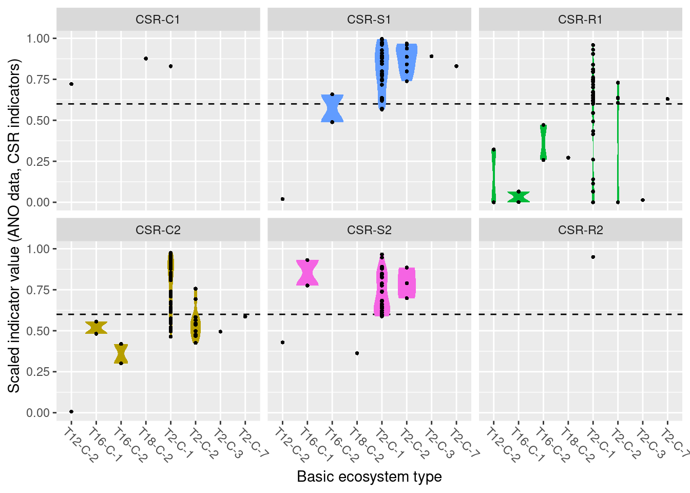
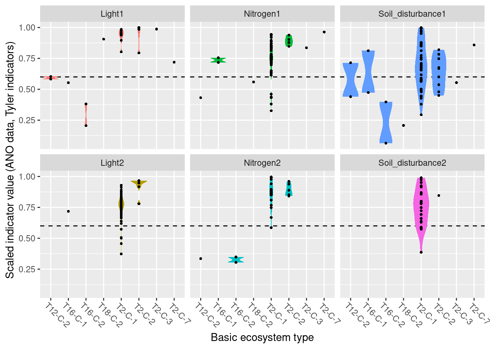

8 Functional Plant Indicators - Naturally Open Ecosystems
Norwegian name: Planteindikatorer
Author and date:
Joachim Töpper
August 2023
| Ecosystem | Økologisk.egenskap | ECT.class |
|---|---|---|
| naturally open below tree line | Primærproduksjon | Functional state characteristic |
| naturally open below tree line | Abiotiske forhold | Functional state characteristic |
Indicators described in this chapter:
- Grime’s CSR values
- Light
- Nitrogen
- Soil disturbance
8.1 Introduction
Functional plant indicators can be used to describe the functional signature of plant communities by calculating community-weighted means of plant indicator values for plant communities (Diekmann 2003). The functional signature of plant communities may be indicative of ecosystem identity, depending on which functional plant indicator we look at (cf. Töpper et al. 2018). For instance, using an indicator for moisture one would find a functional signature with higher moisture values for plant communities in mires compared to e.g. grasslands or forests. Deviations in the functional signature of such an indicator beyond a certain range of indicator values (as there of course is natural variation of functional signatures within an ecosystem type) may be related to a reduction in ecological condition. Here, we combine functional plant indicator data with field sampled plant community data from the Norwegian nature monitoring programs ANO (Tingstad et al. 2019) and GRUK (Evju et al. 2020) for naturally open ecosystems below tree line (abbreviated as ‘nat-open’ henceforth). We calculate the functional signature of plant communities in the monitored sites with respect to Grime’s CSR values, light, nitrogen, and soil disturbance. These functional signatures are then compared to reference distributions of functional signature, separately for each nat-open ecosystem type, calculated from ‘generalized species lists’ developed for ecosystem types in the Norwegian categorization system for eco-diversity (Halvorsen et al. 2020). These plant functional condition indicators are developed following the principles and technical protocol of the IBECA framework (Jakobsson et al. 2021, Töpper & Jakobsson 2021). Note that deviations from the reference may occur in both directions, e.g. the nitrogen signature from the testing data may be higher or lower than in the reference. Deviations in these two directions indicate very different environmental phenomena and thus have to be treated separately. Therefore, we develop two condition indicators for each functional plant indicator, a lower one and an upper one (see further down for more details).
8.2 About the underlying data
In the ‘functional plant indicator’ project for nat-open ecosystems, we use five sets of data for building indicators for ecological condition:
- as test data we use plant community data from (1) the ANO monitoring scheme (cf. Tingstad et al. 2019) and (2) from the GRUK monitoring scheme (cf. Evju et al. 2020)
- as reference data we use (3) generalized species lists developed by Evju et al. (2023) for nat-open ecosystem types
- Swedish plant indicator data for light, nitrogen, and soil disturbance from Tyler et al. (2021), and (5) Grime’s CSR values for plant species’ strategies (towards competition, stress, and ruderal conditions)
ANO monitoring data: ANO stands for ‘areal-representativ naturovervåking’, i.e. ‘area representative nature monitoring’. 1000 sites are randomly distributed across mainland Norway and visited within a 5-year cycle. Each ANO site spans a 500 x 500 m grid cell, and the data collection at each ANO site includes up to 18 evenly distributed vegetation analyses in 1 x 1 m plots (up to 18, because some of these evenly distributed points may be in water or otherwise inaccessible). For the vegetation analyses, the cover of each vascular plant species in the plot is recorded. Every vegetation analysis is accompanied by an assessment of the ecosystem the plot lies in, including ecosystem type and some additional variables related to ecosystem-specific drivers of state. In the analysis in this document, we only use the plots which were classified as one of the nat-open ecosystem types in the Norwegian categorization system for eco-diversity (NiN) and which are not registered as lying in mountain areas above the tree line. In the analysis in this document, we use the data available on Miljødirektoratets kartkatalog (https://kartkatalog.miljodirektoratet.no/Dataset/Details/2054), which comprises data from the first three ANO-years, 2019-2021, and a total of 8887 plots in 498 sites.
GRUK monitoring data GRUK stands for ‘Grunnlendt åpen kalkmark’, and represents a monitoring of open, limestone rich ecosystems with soils too shallow for forest establishment. The limestone rich focus of the scheme is motivated from a high biodiversity value and places all monitoring sites in an area around the Oslofjord. As of spring 2023, the GRUK data comprise 596 vegetation plots in 146 sites, all of which are mapped to the ecosystem type “åpen grunnlendt mark” (T2) and therein to the limestone-rich subtypes T2-C-7 and T2-C-8 in the Norwegian classification system for ecosystem types. The vegetation analysis in GRUK records percent cover for every species of vascular plants in 1 m^2 plots. In addition, a range of site variables related to ecosystem-specific drivers of state are recorded. In the analysis in this document, we use all GRUK monitoring data, which span the years 2020-22. The 2022 data also include an assessment of site condition, which is included in the analysis of results in this document. In the future, these data data may become available in Miljødirektoratets kartkatalog.
NiN reference data: The generalized species lists underlying the ecosystem categorization in NiN represent expert-compiled species lists based on empirical evidence from the literature and expert knowledge of the systems and their species. In these lists, every species is assigned an abundance value on a 6-step scale, with each step representing a range for the ‘expected combination of frequency and cover’ of occurrence (1: < 1/32, 2: 1/32 - 1/8 , 3: 1/8 - 3/8, 4: 3/8 - 4/5, 5: 3/8 - 4/5 + dominance, 6: > 4/5). For the purpose of this project, these steps are simplified to maximum ‘expected combination of frequency and cover’, whereby steps 4 & 5 are assigned 0.6 and 0.8, respectively, in order to distinguish between them.
The Swedish plant indicator set published by Tyler et al. (2021) contains a large collection of plant indicators based on the Swedish flora, which is well representative of the Norwegian flora as well. From this set, we decided to include indicator data for light, moisture, pH, nitrogen, phosphorus, grazing_mowing, and soil disturbance for semi-natural ecosystems, as these are thought to be subject to potential change due to abandonment, drainage/flooding, pollution, and erosion.
Grime’s system of plant strategy scores (Grime 1974) comprises relative (too one another) scores for the competition-, stress-, and disturbance(“ruderality”)-related life strategy of plant species. In the analysis in this document, we use all three variables, C, S and R, as different pressures acting on the ecosystem might change every one of the strategies (e.g. alien species for competition, climate change for stress, land use change for ruderality).
8.2.1 Representativity in time and space
For nat-open ecosystems, the ANO data in this analysis contain 143 plots in 52 sites, in principle distributed randomly across the country. As nat-open ecosystems occur more often in certain regions of Norway than in others, the amount of plots and sites is not equal among Norway’s five regions. The 143 plots are distributed across regions in the following way:
- Northern Norway: 29
- Central Norway: 39
- Eastern Norway: 34
- Western Norway: 24
- Southern Norway: 17
For GRUK, this analysis covers 1103 plots in 146 sites.
The 1103 plots are distributed across regions in the following way:
- Northern Norway: 0
- Central Norway: 0
- Eastern Norway: 1042
- Western Norway: 0
- Southern Norway: 61
8.4 Reference state and values
8.4.1 Reference state
The reference state is defined via the functional signature of the generalized species lists for NiN ecosystem types (see also Töpper et al. 2018). For the nat-open ecosystem types these lists have been newly prepared by Evju et al. (2023). By bootstrapping the species lists (see details further below) and calculating community-weighted means of functional plant indicators for every re-sampled community, we describe the reference state as a distribution of indicator values for each respective plant functional indicator. These distributions are calculated for minor ecosystem types (“grunntyper” or “kartleggingsenheter” at a 1:5000 mapping scale) within the major ecosystem types (hovedtyper) in NiN. A more extensive discussion on the use of reference communities can be found in Jakobsson et al. (2020).
8.4.2 Reference values, thresholds for defining good ecological condition, minimum and/or maximum values
In this analysis, we derive scaling values from statistical (here, non-parametric) distributions (see Jakobsson et al. 2010). For each ecosystem sub-type and plant functional indicator, the reference value is defined as the median value of the indicator value distribution. As in most cases the distributions naturally are two-sided (but see the Heat-requirement indicator in the mountain assessment for an example of a one-sided functional plant indicator, Framstad et al. 2022), and deviation from the optimal state thus may occur in both direction (e.g. indicating too low or too high pH), we need to define two threshold values for good ecological condition as well as both a minimum and maximum value. In line with previous assessments of ecological condition for Norwegian forests and mountains, we define a lower and an upper threshold value via the 95% confidence interval of the reference distribution, i.e. its 0.025 and 0.975 quantiles. The minimum and maximum values are given by the minimum and maximum of the possible indicator values for each respective plant functional indicator. For details on the scaling principles in IBECA, please see Töpper & Jakobsson (2021).
8.5 Uncertainties
We can calculate a mean indicator value (after scaling) for every region (or any other delimited area of interest) as well as its corresponding standard error as a measure of spatial uncertainty for a geographical area.
8.6 References
Diekmann, M. 2003. Species indicator values as an important tool in applied plant ecology - a review. Basic and Applied Ecology 4: 493-506, doi:10.1078/1439-1791-00185
Evju, M., Stabbetorp, O.E., Olsen, S.L., Bratli, H., Often, A. & Bakkestuen, V. 2020. Dry calcareous grasslands in the Oslofjord region. A test of monitoring protocols and results for 2020. NINA Report 1910. Norwegian Institute for Nature Research.
Evju, M., Stabbetorp, O.E., Olsen, S.L., Bratli, … . 2023. Generalized species lists for naturally open ecosystem types below the tree line in Norway. in prep.
Framstad, E., Kolstad, A. L., Nybø, S., Töpper, J. & Vandvik, V. 2022. The condition of forest and mountain ecosystems in Norway. Assessment by the IBECA method. NINA Report 2100. Norwegian Institute for Nature Research.
Grime J.P. 1974. Vegetation classification by reference to strategies. Nature 250(5461):26-31.
Halvorsen, R., Skarpaas, O., Bryn, A., Bratli, H., Erikstad, L., Simensen, T., & Lieungh, E. (2020). Towards a systematics of ecodiversity: The EcoSyst framework. Global Ecology and Biogeography, 29(11), 1887-1906. doi:10.1111/geb.13164
Jakobsson, S., Töpper, J.P., Evju, M., Framstad, E., Lyngstad, A., Pedersen, B., Sickel, H., Sverdrup-Thygeson, A., Vandvik. V., Velle, L.G., Aarrestad, P.A. & Nybø, S. 2020. Setting reference levels and limits for good ecological condition in terrestrial ecosystems. Insights from a case study based on the IBECA approach. Ecological Indicators 116: 106492.
Jakobsson, S., Evju, M., Framstad, E., Imbert, A., Lyngstad, A., Sickel, H., Sverdrup-Thygeson, A., Töpper, J., Vandvik, V., Velle, L.G., Aarrestad, P.A. & Nybø, S. 2021. An index-based assessment of ecological condition and its links to international frameworks. Ecological Indicators 124: 107252.
Tingstad, L., Evju, M., Sickel, H., & Töpper, J. 2019. Utvikling av nasjonal arealrepresentativ naturovervåking (ANO). Forslag til gjennomføring, protokoller og kostnadsvurderinger med utgangspunkt i erfaringer fra uttesting i Trøndelag. NINA Rapport 1642.
Töpper, J. & Jakobsson, S. 2021. The Index-Based Ecological Condition Assessment (IBECA) - Technical protocol, version 1.0. NINA Report 1967. Norwegian Institute for Nature Research.
Töpper, J., Velle, L.G. & Vandvik, V. 2018. Developing a method for assessment of ecological state based on indicator values after Ellenberg and Grime (revised edition). NINA Report 1529b. Norwegian Institute for Nature Research.
Tyler, T., Herbertsson, L., Olofsson, J., & Olsson, P. A. 2021. Ecological indicator and traits values for Swedish vascular plants. Ecological In-dicators, 120. doi:10.1016/j.ecolind.2020.106923
8.7 Analyses
8.7.1 Data sets
ANO data: ANO.sp contains the species data, ANO.geo contains site data.
GRUK data: GRUK.species contains the species data, GRUK.variable contains site data, GRUK2021.condition contains a field-based condition assessment from the 2021 season.
Plant indicators from Tyler et al. (2021) and Grime (1974) are saved as ind.Tyler and ind.Grime.
Generalized species lists (reference communities): natopen_NiN_ref contains the reference species lists, natopen_NiN_ref_spInfo contains additional taxonomic information for each species.
8.7.1.1 Data handling
- Checking for errors
- Checking species nomenclature in the different species lists to make species and indicator data possible to merge
- Merging indicator data with monitoring data and indicator data with reference data (not shown here, but documented in the code)
leaving us with the monitoring data including plant indicators (ANO.sp.ind, GRUK.species.ind) and the reference data including plant indicators (NiN.natopen.cov)
head(ANO.sp.ind)
#> Species art_dekning
#> 1 Abies alba 0
#> 2 Abies alba 0
#> 3 Abies alba 0
#> 4 Abies alba 0
#> 5 Abies alba 0
#> 6 Abies alba 0
#> ParentGlobalID CC SS RR Light
#> 1 {CB1796B9-01F5-4109-B44E-4582CA855F93} NA NA NA 2
#> 2 {AB9ED5C2-E906-4C73-B543-EC6CB28B39D5} NA NA NA 2
#> 3 {A660C3D8-C8DD-414D-8B70-80F9A284E34E} NA NA NA 2
#> 4 {142D1B0E-32EE-4FD8-AA12-DBF3A0B2DC54} NA NA NA 2
#> 5 {B7DD61EE-A113-4486-A4B8-D50ACAAC648B} NA NA NA 2
#> 6 {32A9B462-5483-4D47-ADAF-78F11AF201AA} NA NA NA 2
#> Nitrogen Soil_disturbance
#> 1 5 1
#> 2 5 1
#> 3 5 1
#> 4 5 1
#> 5 5 1
#> 6 5 1
head(GRUK.species.ind)
#> ParentGlobalID Species
#> 1 002ee3d0-f9f5-4760-9580-b71d56748595 Poa compressa
#> 2 002ee3d0-f9f5-4760-9580-b71d56748595 Equisetum sylvaticum
#> 3 002ee3d0-f9f5-4760-9580-b71d56748595 Polygonatum odoratum
#> 4 002ee3d0-f9f5-4760-9580-b71d56748595 Geranium sanguineum
#> 5 002ee3d0-f9f5-4760-9580-b71d56748595 Origanum vulgare
#> 6 002ee3d0-f9f5-4760-9580-b71d56748595 Sonchus asper
#> art_dekning CC SS RR Light Nitrogen
#> 1 0.1 0.1666667 0.4166667 0.4166667 7 4
#> 2 0.1 0.4166667 0.1666667 0.4166667 4 3
#> 3 1.0 0.5000000 0.5000000 0.0000000 5 3
#> 4 0.1 0.1666667 0.6666667 0.1666667 5 3
#> 5 3.0 0.4166667 0.4166667 0.1666667 6 4
#> 6 1.0 0.2500000 0.0000000 0.7500000 6 7
#> Soil_disturbance year Flate_ID Punkt_ID
#> 1 5 2020 44-1 NA
#> 2 2 2020 44-1 NA
#> 3 5 2020 44-1 NA
#> 4 2 2020 44-1 NA
#> 5 4 2020 44-1 NA
#> 6 9 2020 44-1 NA
#> Total dekning % av karplanter registert
#> 1 5.3
#> 2 5.3
#> 3 5.3
#> 4 5.3
#> 5 5.3
#> 6 5.3
#> Dekning % av karplanter i feltsjikt Dekning % av moser
#> 1 4 0
#> 2 4 0
#> 3 4 0
#> 4 4 0
#> 5 4 0
#> 6 4 0
#> Dekning % av lav Dekning % av strø
#> 1 0 8
#> 2 0 8
#> 3 0 8
#> 4 0 8
#> 5 0 8
#> 6 0 8
#> Dekning % av bar jord/grus/stein/berg Kartleggingsenhet
#> 1 99 T2-C-7
#> 2 99 T2-C-7
#> 3 99 T2-C-7
#> 4 99 T2-C-7
#> 5 99 T2-C-7
#> 6 99 T2-C-7
#> Spor etter ferdsel med tunge kjøretøy (%)
#> 1 0
#> 2 0
#> 3 0
#> 4 0
#> 5 0
#> 6 0
#> Spor etter slitasje og slitasjebetinget erosjon (%)
#> 1 0
#> 2 0
#> 3 0
#> 4 0
#> 5 0
#> 6 0
#> Dekning % av nakent berg
#> 1 7
#> 2 7
#> 3 7
#> 4 7
#> 5 7
#> 6 7
#> Menneskeskapte objekter i sirkelen?
#> 1 nei
#> 2 nei
#> 3 nei
#> 4 nei
#> 5 nei
#> 6 nei
#> Total dekning % av vedplanter i feltsjikt
#> 1 5
#> 2 5
#> 3 5
#> 4 5
#> 5 5
#> 6 5
#> Dekning % av busker i busksjikt Dekning % av tresjikt
#> 1 3 8
#> 2 3 8
#> 3 3 8
#> 4 3 8
#> 5 3 8
#> 6 3 8
#> Dekning % av problemarter
#> 1 NA
#> 2 NA
#> 3 NA
#> 4 NA
#> 5 NA
#> 6 NA
#> Total dekning % av fremmede arter x y
#> 1 0 10.73183 59.94773
#> 2 0 10.73183 59.94773
#> 3 0 10.73183 59.94773
#> 4 0 10.73183 59.94773
#> 5 0 10.73183 59.94773
#> 6 0 10.73183 59.94773
#> geometry
#> 1 POINT (261665.7 6653279)
#> 2 POINT (261665.7 6653279)
#> 3 POINT (261665.7 6653279)
#> 4 POINT (261665.7 6653279)
#> 5 POINT (261665.7 6653279)
#> 6 POINT (261665.7 6653279)
head(NiN.natopen.cov)
#> sp T1_toerkeutsatte_berg T1-C-11
#> 1 Achillea millefolium NA NA
#> 2 Achillea ptarmica NA NA
#> 3 Acinos arvensis NA NA
#> 4 Aconitum septentrionale NA NA
#> 5 Actaea spicata NA NA
#> 6 Agrimonia eupatoria NA NA
#> T1-C-12 T1_fosseberg T2-C-1 T2-C-2 T2-C-3 T2-C-4 T2-C-5
#> 1 NA NA NA NA NA NA NA
#> 2 NA NA NA NA NA NA NA
#> 3 NA NA NA NA NA NA NA
#> 4 NA NA NA NA NA NA NA
#> 5 NA NA NA NA NA NA NA
#> 6 NA NA NA NA NA NA 0.375
#> T2-C-6 T2-C-7 T2-C-8 T2-C-7_BN T2-C-8_BN T8-C-1 T8-C-2
#> 1 NA NA NA NA NA NA NA
#> 2 NA NA NA NA NA NA NA
#> 3 NA 0.375 0.375 0.37500 0.37500 NA NA
#> 4 NA NA NA NA NA NA NA
#> 5 NA NA NA NA NA NA NA
#> 6 NA 0.375 NA 0.03125 0.03125 NA NA
#> T8-C-3 T11-C-1 T11-C-2 T12-C-1 T12-C-2 T13-C-1 T13-C-2
#> 1 0.375 NA NA NA 0.12500 NA NA
#> 2 NA NA NA NA 0.03125 NA NA
#> 3 NA NA NA NA NA NA NA
#> 4 NA NA NA NA NA NA NA
#> 5 NA NA NA NA NA NA NA
#> 6 NA NA NA NA NA NA NA
#> T13-C-3 T13-C-4 T13-C-5 T13-C-6 T13-C-7 T13-C-8 T13-C-9
#> 1 NA NA NA NA NA NA NA
#> 2 NA NA NA NA NA NA NA
#> 3 NA 0.03125 0.03125 0.03125 0.03125 0.03125 0.03125
#> 4 NA NA NA NA NA NA NA
#> 5 NA NA NA NA NA NA NA
#> 6 NA NA NA NA NA NA NA
#> T13-C-10 T13-C-11 T13-C-12 T13-C-13 T13-C-14 T13-C-15 T15
#> 1 NA NA NA NA NA NA NA
#> 2 NA NA NA NA NA NA NA
#> 3 NA NA NA NA NA NA NA
#> 4 NA NA NA NA NA NA NA
#> 5 NA NA NA NA NA NA NA
#> 6 NA NA NA NA NA NA NA
#> T15-Bratli21 T16-C-1 T16-C-2 T16-C-3 T16-C-4 T16-C-5
#> 1 0.03125 0.375 0.375 NA NA NA
#> 2 NA NA NA NA NA NA
#> 3 NA NA NA NA 0.125 NA
#> 4 0.03125 NA NA NA NA NA
#> 5 NA NA NA 0.125 0.125 NA
#> 6 NA NA NA NA NA NA
#> T16-C-6 T16-C-7 T18-C-1 T18-C-2 T18-C-3 T18-C-4 T21-C-1
#> 1 NA NA NA NA NA NA 0.125
#> 2 NA NA 0.125 NA NA NA NA
#> 3 NA NA NA NA NA NA NA
#> 4 NA NA NA NA NA NA NA
#> 5 NA NA NA NA NA NA NA
#> 6 NA NA NA NA NA NA NA
#> T21-C-2 T21-C-3 T21-C-4 T21-7 T24-C-1_samlet
#> 1 0.375 0.6 0.375 0.375 NA
#> 2 NA NA NA NA NA
#> 3 NA NA NA NA NA
#> 4 NA NA NA NA NA
#> 5 NA NA NA NA NA
#> 6 NA NA NA NA NA
#> T24-C-2_samlet T24-C-1_Moere T24-C-1_Troendelag
#> 1 NA NA NA
#> 2 NA NA NA
#> 3 NA NA NA
#> 4 NA NA NA
#> 5 NA NA NA
#> 6 NA NA NA
#> T24-C-1_Troms T24-C-1_Finnmark T24-C-2_Moere
#> 1 NA 0.125 NA
#> 2 NA NA NA
#> 3 NA NA NA
#> 4 NA NA NA
#> 5 NA NA NA
#> 6 NA NA NA
#> T24-C-2_Troendelag T24-C-2_Troms T24-C-2_Finnmark T29-C-1
#> 1 NA NA 0.375 NA
#> 2 NA NA NA NA
#> 3 NA NA NA NA
#> 4 NA NA NA NA
#> 5 NA NA NA NA
#> 6 NA NA NA NA
#> T29-C-2 T29-C-3 T29-C-4 T29-C-5 T29-C-6 Phylum
#> 1 0.80000 NA 0.375 0.03125 NA Magnoliophyta
#> 2 0.03125 NA NA NA NA Magnoliophyta
#> 3 NA 0.6 0.375 NA NA Magnoliophyta
#> 4 NA NA NA NA NA Magnoliophyta
#> 5 NA NA NA NA NA Magnoliophyta
#> 6 0.12500 NA NA NA NA Magnoliophyta
#> sp.orig CC SS RR
#> 1 Achillea millefolium 0.3333333 0.3333333 0.3333333
#> 2 Achillea ptarmica 0.4166667 0.4166667 0.1666667
#> 3 Acinos arvensis 0.1666667 0.4166667 0.4166667
#> 4 Aconitum septentrionale NA NA NA
#> 5 Actaea spicata NA NA NA
#> 6 Agrimonia eupatoria 0.3333333 0.3333333 0.3333333
#> Light Nitrogen Soil_disturbance
#> 1 6 5 2
#> 2 5 4 2
#> 3 7 3 7
#> 4 4 7 2
#> 5 2 6 3
#> 6 5 6 5For each ecosystem type with a NiN species list, we can calculate a community weighted mean (CWM) for the relevant functional plant indicators. For semi-natural ecosystems, we are testing “Light”, “Moisture”, “Soil_reaction_pH”, “Nitrogen”, “Phosphorus”, “Grazing_mowing”, and “Soil_disturbance”. In order to get distributions of CWMs rather than one single value (for comparison with the empirical testing data), the NiN lists can be bootstrapped.
8.7.1.1.1 bootstrap function for frequency abundance
- function to calculate community weighted means of selected indicator values (ind)
- for species lists (sp) with given abundances in percent (or on a scale from 0 to 1) in one or more ‘sites’ (abun)
- with a given number of iterations (iter),
- with species given a certain minimum abundance occurring in all bootstraps (obl), and
- with a given re-sampling ratio of the original species list (rat)
- in every bootstrap iteration the abundance of the sampled species can be randomly changed by a limited amount if wished by introducing a re-sampling of abundance values from adjacent abundance steps with a certain probability (var.abun)
Running the bootstraps
colnames(NiN.natopen)
# 1st column is the species
# 6th-71st column is the abundances of sp in different ecosystem types
# 74th-79th column is the indicator values of the respective species
# we choose 1000 iterations
# species with abundance 1 (i.e. a max of 100%, must be included in each sample)
# each sample re-samples 1/3 of the number of species
# the abundance of the re-sampled species may vary (see bootstrap function for details)
natopen.ref.cov <- indBoot.freq(sp=NiN.natopen.cov[,1],abun=NiN.natopen.cov[,6:71],ind=NiN.natopen.cov[,74:79],iter=1000,obl=1,rat=1/3,var.abun=T)
### fixing NaN's
for (i in 1:length(natopen.ref.cov) ) {
for (j in 1:ncol(natopen.ref.cov[[i]]) ) {
v <- natopen.ref.cov[[i]][,j]
v[is.nan(v)] <- NA
natopen.ref.cov[[i]][,j] <- v
}
}
head(natopen.ref.cov[[1]])
#> T2-C-1 T2-C-2 T2-C-3 T2-C-4 T2-C-5
#> 1 0.2845850 0.25000000 0.14655172 0.10347682 0.2346319
#> 2 0.3818565 0.16025641 0.12820513 0.13008130 0.2382169
#> 3 0.1697966 0.21428571 0.24583333 0.15540016 0.2293046
#> 4 0.2393868 0.15476190 0.14665866 0.19340378 0.2066667
#> 5 0.2500000 0.25000000 0.05496922 0.08085612 0.1104183
#> 6 0.2619048 0.06862745 0.01739736 0.05701754 0.2588652
#> T2-C-6 T2-C-7 T2-C-8 T2-C-7_BN T2-C-8_BN
#> 1 0.089953944 0.2057258 0.2837079 0.1569223 0.3247954
#> 2 0.103709127 0.2114830 0.2331540 0.1974646 0.2087871
#> 3 0.047180939 0.2519630 0.3000000 0.2314341 0.1643737
#> 4 0.301147228 0.3008681 0.3027884 0.1949171 0.2540587
#> 5 0.001539646 0.1829332 0.2220369 0.1870552 0.1070675
#> 6 0.083333333 0.1803109 0.2382713 0.1813302 0.2170433
#> T8-C-1 T8-C-2 T8-C-3 T11-C-1 T11-C-2 T12-C-1
#> 1 0.0923913 NA 0.1410256 NA NA NA
#> 2 0.2026144 NA 0.1923077 NA NA NA
#> 3 0.2500000 NA 0.0600000 NA NA NA
#> 4 0.1666667 NA 0.1178862 NA NA NA
#> 5 0.1616162 NA 0.1933333 NA NA NA
#> 6 0.2516340 NA 0.2891156 NA NA NA
#> T12-C-2 T13-C-1 T13-C-2 T13-C-3 T13-C-4 T13-C-5
#> 1 0.5449800 NA NA NA NA 0.13888889
#> 2 0.3095506 NA NA NA NA 0.13888889
#> 3 0.3425983 NA NA NA NA 0.16666667
#> 4 0.3918308 NA NA NA NA 0.21747967
#> 5 0.4647327 NA NA NA NA 0.09482759
#> 6 0.5083175 NA NA NA NA 0.18965517
#> T13-C-6 T13-C-7 T13-C-8 T13-C-9 T13-C-10
#> 1 0.08849281 0.51706827 0.16666667 0.2987805 NA
#> 2 0.18140868 0.01683381 0.20114943 0.2385057 NA
#> 3 0.16211790 0.03132648 0.16666667 0.1944444 NA
#> 4 0.23989899 0.54421769 0.08130081 0.1760037 NA
#> 5 0.21226415 0.02777778 0.06504065 0.2919800 NA
#> 6 0.11049107 0.39393939 0.08130081 0.2146465 NA
#> T13-C-11 T13-C-12 T13-C-13 T13-C-14 T13-C-15 T15
#> 1 NA NA NA NA NA 0.3645833
#> 2 NA NA NA NA NA 0.3339489
#> 3 NA NA NA NA NA 0.3210682
#> 4 NA NA NA NA NA 0.3649425
#> 5 NA NA NA NA NA 0.4716981
#> 6 NA NA NA NA NA 0.3946790
#> T15-Bratli21 T16-C-1 T16-C-2 T16-C-3 T16-C-4
#> 1 0.2551183 0.2226776 0.2198670 0.2577736 0.3085355
#> 2 0.2872909 0.3341544 0.3596491 0.2608512 0.1820631
#> 3 0.2770032 0.2708333 0.2613169 0.3069184 0.2842679
#> 4 0.3413580 0.2552083 0.1635802 0.2956989 0.2115575
#> 5 0.3022203 0.2407407 0.2693429 0.2246497 0.1650106
#> 6 0.2649355 0.3182898 0.3535714 0.2408487 0.2112299
#> T16-C-5 T16-C-6 T16-C-7 T18-C-1 T18-C-2
#> 1 0.6531548 0.5458443 0.3305085 0.6448475 0.40948276
#> 2 0.4814815 0.4051164 0.2500000 0.3070175 0.26190476
#> 3 0.3727735 0.3267196 0.2916667 0.4373479 0.23289183
#> 4 0.5041667 0.3931981 0.2083333 0.3030303 0.34612310
#> 5 0.4586247 0.3076377 0.3218391 0.5825617 0.51851852
#> 6 0.4064327 0.4531083 0.2166667 0.3549383 0.07929472
#> T18-C-3 T18-C-4 T21-C-1 T21-C-2 T21-C-3 T21-C-4
#> 1 NA NA 0.3663522 0.3309456 0.2259268 0.2647892
#> 2 NA NA 0.5610200 0.4441581 0.2566483 0.3367434
#> 3 NA NA 0.2731569 0.3973696 0.1865861 0.2837838
#> 4 NA NA 0.3060429 0.3239783 0.2458751 0.3696404
#> 5 NA NA 0.4566886 0.4012757 0.1777217 0.4740468
#> 6 NA NA 0.2535817 0.3604806 0.3903275 0.2679592
#> T21-7 T24-C-1_samlet T24-C-2_samlet T24-C-1_Moere
#> 1 0.1665567 0.5044695 0.1912136 0.5350369
#> 2 0.3191248 0.5767588 0.3276727 0.4834191
#> 3 0.1247113 0.6266280 0.3867521 0.5691266
#> 4 0.2437276 0.4711472 0.3026242 0.3687776
#> 5 0.2944641 0.5371597 0.2251286 0.4222182
#> 6 0.1722222 0.4268812 0.4085174 0.7216956
#> T24-C-1_Troendelag T24-C-1_Troms T24-C-1_Finnmark
#> 1 0.5065958 0.3224095 0.3252841
#> 2 0.2782205 0.4330668 0.3094435
#> 3 0.6114393 0.4215686 0.3496066
#> 4 0.7293266 0.4587379 0.3119735
#> 5 0.6171679 0.2330508 0.2825630
#> 6 0.6029216 0.4210111 0.3598690
#> T24-C-2_Moere T24-C-2_Troendelag T24-C-2_Troms
#> 1 0.54901961 0.4368867 0.1675386
#> 2 0.44444444 0.4541667 0.3560888
#> 3 0.21217105 0.3388889 0.3933333
#> 4 0.52314815 0.3593750 0.3803165
#> 5 0.22222222 0.2401961 0.1985816
#> 6 0.08496732 0.6305257 0.2599206
#> T24-C-2_Finnmark T29-C-1 T29-C-2 T29-C-3 T29-C-4
#> 1 0.2533113 0.4000000 0.2106061 0.1629790 0.3508230
#> 2 0.5125369 0.3782051 0.4335956 0.1383435 0.2924837
#> 3 0.3229491 0.5128205 0.1657688 0.1739201 0.2762557
#> 4 0.3774663 0.3484848 0.2364865 0.1962779 0.2156863
#> 5 0.4353499 0.5894309 0.2523840 0.1219386 0.3700565
#> 6 0.2934783 0.4429825 0.2853027 0.1561419 0.3246124
#> T29-C-5 T29-C-6
#> 1 0.5268670 0.3347458
#> 2 0.4388802 0.3237705
#> 3 0.6453824 0.2886335
#> 4 0.4484266 0.5535714
#> 5 0.4876657 0.4451220
#> 6 0.4409456 0.5347222This results in an R-list with a slot for every selected indicator, and in every slot there’s a data frame with as many columns as there are NiN species lists and as many rows as there were iterations in the bootstrap. Next, we need to derive scaling values from these bootstrap-lists (the columns) for every mapping unit in NiN. Here, we define things in the following way:
- Median = reference values
- 0.025 and 0.975 quantiles = lower and upper limit values
- min and max of the respective indicator’s scale = min/max values
#> [1] "T2-C-1" "T2-C-2"
#> [3] "T2-C-3" "T2-C-4"
#> [5] "T2-C-5" "T2-C-6"
#> [7] "T2-C-7" "T2-C-8"
#> [9] "T2-C-7_BN" "T2-C-8_BN"
#> [11] "T8-C-1" "T8-C-2"
#> [13] "T8-C-3" "T11-C-1"
#> [15] "T11-C-2" "T12-C-1"
#> [17] "T12-C-2" "T13-C-1"
#> [19] "T13-C-2" "T13-C-3"
#> [21] "T13-C-4" "T13-C-5"
#> [23] "T13-C-6" "T13-C-7"
#> [25] "T13-C-8" "T13-C-9"
#> [27] "T13-C-10" "T13-C-11"
#> [29] "T13-C-12" "T13-C-13"
#> [31] "T13-C-14" "T13-C-15"
#> [33] "T15" "T15-Bratli21"
#> [35] "T16-C-1" "T16-C-2"
#> [37] "T16-C-3" "T16-C-4"
#> [39] "T16-C-5" "T16-C-6"
#> [41] "T16-C-7" "T18-C-1"
#> [43] "T18-C-2" "T18-C-3"
#> [45] "T18-C-4" "T21-C-1"
#> [47] "T21-C-2" "T21-C-3"
#> [49] "T21-C-4" "T21-7"
#> [51] "T24-C-1_samlet" "T24-C-2_samlet"
#> [53] "T24-C-1_Moere" "T24-C-1_Troendelag"
#> [55] "T24-C-1_Troms" "T24-C-1_Finnmark"
#> [57] "T24-C-2_Moere" "T24-C-2_Troendelag"
#> [59] "T24-C-2_Troms" "T24-C-2_Finnmark"
#> [61] "T29-C-1" "T29-C-2"
#> [63] "T29-C-3" "T29-C-4"
#> [65] "T29-C-5" "T29-C-6"
#> [1] "T2-C-1" "T2-C-2"
#> [3] "T2-C-3" "T2-C-4"
#> [5] "T2-C-5" "T2-C-6"
#> [7] "T2-C-7" "T2-C-8"
#> [9] "T2-C-7_BN" "T2-C-8_BN"
#> [11] "T8-C-1" "T8-C-2"
#> [13] "T8-C-3" "T11-C-1"
#> [15] "T11-C-2" "T12-C-1"
#> [17] "T12-C-2" "T13-C-1"
#> [19] "T13-C-2" "T13-C-3"
#> [21] "T13-C-4" "T13-C-5"
#> [23] "T13-C-6" "T13-C-7"
#> [25] "T13-C-8" "T13-C-9"
#> [27] "T13-C-10" "T13-C-11"
#> [29] "T13-C-12" "T13-C-13"
#> [31] "T13-C-14" "T13-C-15"
#> [33] "T15" "T15-Bratli21"
#> [35] "T16-C-1" "T16-C-2"
#> [37] "T16-C-3" "T16-C-4"
#> [39] "T16-C-5" "T16-C-6"
#> [41] "T16-C-7" "T18-C-1"
#> [43] "T18-C-2" "T18-C-3"
#> [45] "T18-C-4" "T21-C-1"
#> [47] "T21-C-2" "T21-C-3"
#> [49] "T21-C-4" "T21-7"
#> [51] "T24-C-1_samlet" "T24-C-2_samlet"
#> [53] "T24-C-1_Moere" "T24-C-1_Troendelag"
#> [55] "T24-C-1_Troms" "T24-C-1_Finnmark"
#> [57] "T24-C-2_Moere" "T24-C-2_Troendelag"
#> [59] "T24-C-2_Troms" "T24-C-2_Finnmark"
#> [61] "T29-C-1" "T29-C-2"
#> [63] "T29-C-3" "T29-C-4"
#> [65] "T29-C-5" "T29-C-6"
#> V1 V2 V3 V4 V5
#> 1 0.08766832 0.21872555 0.3888889 0.496031746 0.67063492
#> 2 0.05382353 0.19671091 0.2843487 0.428523810 0.65859351
#> 3 0.03753882 0.17141992 0.3920588 0.329815301 0.56470638
#> 4 0.02523850 0.12230736 0.1929744 0.327729100 0.56582778
#> 5 0.10919903 0.20897488 0.3380892 0.360701100 0.52346972
#> 6 0.01706577 0.09912008 0.2559378 0.435242751 0.58410216
#> 7 0.15620537 0.25719120 0.3652055 0.441457929 0.55090793
#> 8 0.18061362 0.25018911 0.3382194 0.470574683 0.57752100
#> 9 0.10224655 0.20957553 0.3680637 0.462116259 0.57902923
#> 10 0.07427100 0.17847283 0.3162418 0.463891580 0.60815835
#> 11 0.09300746 0.21488110 0.3695652 0.155108025 0.33333333
#> 12 NA NA NA NA NA
#> 13 0.02525253 0.15415885 0.2878788 0.346414806 0.56818182
#> 14 NA NA NA NA NA
#> 15 NA NA NA NA NA
#> 16 NA NA NA NA NA
#> 17 0.29060240 0.40597466 0.5529830 0.155818787 0.25215467
#> 18 NA NA NA NA NA
#> 19 NA NA NA NA NA
#> 20 NA NA NA NA NA
#> 21 NA NA NA NA NA
#> 22 0.08130081 0.16666667 0.2682927 0.405053266 0.58333333
#> 23 0.04382799 0.18405797 0.3087121 0.346037866 0.50505301
#> 24 0.01230389 0.25000000 0.5833333 0.207409555 0.57507473
#> 25 0.08130081 0.18292683 0.3191057 0.416666667 0.61111111
#> 26 0.12457912 0.20114943 0.3516536 0.326849857 0.55962644
#> 27 NA NA NA NA NA
#> 28 NA NA NA NA NA
#> 29 NA NA NA NA NA
#> 30 NA NA NA NA NA
#> 31 NA NA NA NA NA
#> 32 NA NA NA NA NA
#> 33 0.24499059 0.36111111 0.5139583 0.233295494 0.40638940
#> 34 0.25060905 0.29379425 0.3820887 0.435684880 0.53193205
#> 35 0.16234299 0.25693620 0.3766281 0.279155891 0.47113943
#> 36 0.16357485 0.28641287 0.4200559 0.310350085 0.48381744
#> 37 0.14811000 0.23896199 0.3637605 0.378845415 0.49905906
#> 38 0.14713231 0.25527663 0.3812905 0.376717790 0.52809611
#> 39 0.27060801 0.41732082 0.6757135 0.164448153 0.34122203
#> 40 0.28533155 0.45307881 0.6803745 0.195725145 0.35596430
#> 41 0.09935897 0.30450974 0.5769421 0.222222223 0.43693694
#> 42 0.24251435 0.44391944 0.6280931 0.164932380 0.35012504
#> 43 0.16710152 0.34454332 0.5191094 0.034689455 0.14347518
#> 44 NA NA NA NA NA
#> 45 NA NA NA NA NA
#> 46 0.18793380 0.37662986 0.5758055 0.030067155 0.27795685
#> 47 0.30130530 0.39989343 0.4976052 0.345761792 0.44474045
#> 48 0.17262831 0.27771966 0.3958725 0.343577594 0.46802992
#> 49 0.19120164 0.34709012 0.5028986 0.125478216 0.36723930
#> 50 0.08967567 0.25972603 0.4213119 0.201083409 0.42210487
#> 51 0.30003882 0.48453591 0.6419169 0.024354072 0.11784811
#> 52 0.15736725 0.34885701 0.5663918 0.002446965 0.07598784
#> 53 0.27298739 0.48333123 0.6615657 0.024361766 0.12427942
#> 54 0.31163533 0.56287224 0.7379600 0.011030933 0.12438130
#> 55 0.21169666 0.39119214 0.5782941 0.016121596 0.16962269
#> 56 0.17771697 0.36777152 0.5187301 0.008425297 0.16703751
#> 57 0.12745098 0.43629763 0.6548144 0.000000000 0.07921569
#> 58 0.18848759 0.44182390 0.6936776 0.004898777 0.09975386
#> 59 0.18384737 0.32321389 0.4251799 0.001579779 0.08695652
#> 60 0.25007982 0.41887963 0.5943766 0.032845002 0.16601732
#> 61 0.18415773 0.37098021 0.5758081 0.092580409 0.23484848
#> 62 0.20707442 0.33291604 0.4557148 0.389448156 0.52754059
#> 63 0.09585174 0.16486025 0.2532998 0.407042639 0.55685255
#> 64 0.08778217 0.21052632 0.3721359 0.261498756 0.46883828
#> 65 0.31088700 0.46304153 0.6264738 0.029733603 0.13930852
#> 66 0.23213639 0.41569491 0.6266744 0.038280536 0.21708726
#> V6 V7 V8 V9 V10
#> 1 0.7447321 0.005735723 0.1120774 0.2870716 2.834613
#> 2 0.7797668 0.000000000 0.1597796 0.4084967 3.330579
#> 3 0.7936851 0.025321138 0.2359968 0.5696107 3.156486
#> 4 0.7665337 0.120574240 0.3157958 0.5338759 4.606769
#> 5 0.6916941 0.110983810 0.2541142 0.4559565 4.453310
#> 6 0.7786876 0.105434160 0.2957560 0.5040567 4.712980
#> 7 0.6738322 0.091546770 0.1914806 0.2923935 4.862638
#> 8 0.6974140 0.063927305 0.1672794 0.2924579 4.984373
#> 9 0.7524761 0.079745942 0.1926481 0.3330141 4.701733
#> 10 0.7909958 0.086004879 0.1957826 0.3493089 4.956422
#> 11 0.5245331 0.270036376 0.4404762 0.6581973 4.415000
#> 12 NA NA NA NA NA
#> 13 0.8055556 0.134583333 0.2727273 0.4356260 4.816806
#> 14 NA NA NA NA NA
#> 15 NA NA NA NA NA
#> 16 NA NA NA NA NA
#> 17 0.3795203 0.219522914 0.3350895 0.4297591 5.162242
#> 18 NA NA NA NA NA
#> 19 NA NA NA NA NA
#> 20 NA NA NA NA NA
#> 21 NA NA NA NA NA
#> 22 0.8211382 0.055555556 0.2357724 0.3821839 2.804878
#> 23 0.6409212 0.185886752 0.3148770 0.4666543 4.294758
#> 24 0.9799197 0.005020080 0.1224490 0.3413906 3.036145
#> 25 0.8373984 0.032520325 0.1944444 0.3678862 3.333333
#> 26 0.7223420 0.126375456 0.2347561 0.3679465 4.242424
#> 27 NA NA NA NA NA
#> 28 NA NA NA NA NA
#> 29 NA NA NA NA NA
#> 30 NA NA NA NA NA
#> 31 NA NA NA NA NA
#> 32 NA NA NA NA NA
#> 33 0.5608236 0.126061321 0.2291667 0.3338492 3.420904
#> 34 0.5983096 0.132100093 0.1703649 0.2101719 3.762917
#> 35 0.6395535 0.109208892 0.2639093 0.4881055 4.279944
#> 36 0.6822968 0.088539009 0.2158678 0.3912413 4.477555
#> 37 0.6267098 0.135197412 0.2567565 0.3992098 4.193298
#> 38 0.6744551 0.105401613 0.2161034 0.3386715 4.286509
#> 39 0.5311081 0.077056285 0.2169817 0.3704522 4.227666
#> 40 0.5174475 0.066329446 0.1792464 0.3124922 4.050876
#> 41 0.6388889 0.070914473 0.2432432 0.4722917 4.564932
#> 42 0.5758203 0.065786151 0.2005232 0.3851419 4.617633
#> 43 0.2708425 0.333205756 0.5148968 0.6731078 4.511375
#> 44 NA NA NA NA NA
#> 45 NA NA NA NA NA
#> 46 0.5039078 0.041433288 0.3179337 0.7070889 4.781331
#> 47 0.5660524 0.070192195 0.1516556 0.2346538 5.788984
#> 48 0.6043919 0.141816620 0.2483754 0.3762084 4.872919
#> 49 0.5924905 0.099946196 0.2991857 0.4475722 5.043468
#> 50 0.7521036 0.124964235 0.3083632 0.4529543 5.105344
#> 51 0.2372093 0.229556384 0.3944126 0.6167403 4.945497
#> 52 0.2706975 0.313574049 0.5493960 0.8096174 4.529733
#> 53 0.2937690 0.154204634 0.3714276 0.6352384 4.763961
#> 54 0.2939938 0.134245220 0.2958759 0.5954819 4.706109
#> 55 0.3192162 0.281787839 0.4100370 0.7030475 4.519067
#> 56 0.3858288 0.166140141 0.4659604 0.7632445 4.719671
#> 57 0.3000000 0.250000000 0.4632166 0.8236928 4.250000
#> 58 0.2720318 0.225054113 0.4420727 0.7138526 4.521594
#> 59 0.2343690 0.396525204 0.5961376 0.7989570 5.478092
#> 60 0.3089442 0.216024611 0.4026184 0.6433525 4.601372
#> 61 0.4650319 0.176704546 0.3775510 0.5943713 3.939242
#> 62 0.6801921 0.045448503 0.1371601 0.2354948 4.082042
#> 63 0.7022056 0.164400765 0.2714242 0.3981789 5.478967
#> 64 0.6618873 0.192436558 0.3117091 0.4538495 5.557103
#> 65 0.2829305 0.251389541 0.3843212 0.5527090 4.919260
#> 66 0.4524256 0.203657407 0.3519559 0.5327743 5.309729
#> V11 V12 V13 V14 V15 V16
#> 1 4.476190 5.389009 1.666667 2.600000 3.717514 2.054054
#> 2 4.880952 6.285714 1.235294 2.333333 3.470588 2.000000
#> 3 4.814227 6.011573 1.916576 3.275345 4.450445 2.110920
#> 4 5.737986 6.666667 1.818617 3.000000 4.319588 3.385196
#> 5 5.247586 6.009061 2.647226 3.556649 4.822016 2.976882
#> 6 5.721032 6.641097 2.463591 3.173645 4.187576 3.409615
#> 7 5.539673 6.282584 2.838162 3.369092 4.049901 2.972562
#> 8 5.680120 6.113998 2.727575 3.094241 3.496544 3.947285
#> 9 5.551775 6.342671 2.963358 3.348366 3.825764 2.758179
#> 10 5.741075 6.514043 2.998198 3.372142 3.815734 3.155511
#> 11 5.407785 6.333673 3.632551 4.842105 6.076923 2.682520
#> 12 NA NA NA NA NA NA
#> 13 5.971691 6.769318 2.333333 4.000000 5.480121 2.499745
#> 14 NA NA NA NA NA NA
#> 15 NA NA NA NA NA NA
#> 16 NA NA NA NA NA NA
#> 17 5.429241 5.705945 3.722993 4.576458 5.442697 2.486205
#> 18 NA NA NA NA NA NA
#> 19 NA NA NA NA NA NA
#> 20 NA NA NA NA NA NA
#> 21 NA NA NA NA NA NA
#> 22 4.844828 6.451293 3.000000 3.804878 5.634146 1.780488
#> 23 5.210157 6.570921 2.999832 3.925928 4.612375 2.744836
#> 24 4.258065 6.015283 1.845266 3.489796 6.000000 2.333163
#> 25 5.000000 6.568966 3.000000 3.706897 4.804878 2.568966
#> 26 5.197828 6.128086 2.422414 3.656566 4.677020 2.585859
#> 27 NA NA NA NA NA NA
#> 28 NA NA NA NA NA NA
#> 29 NA NA NA NA NA NA
#> 30 NA NA NA NA NA NA
#> 31 NA NA NA NA NA NA
#> 32 NA NA NA NA NA NA
#> 33 4.434783 5.000000 4.681067 5.597872 6.511206 1.671995
#> 34 4.104077 4.410747 4.693984 5.173043 5.651100 1.896863
#> 35 5.000000 5.654848 2.510243 3.773156 4.928668 2.380929
#> 36 5.101882 5.756967 2.522576 3.740369 4.880149 2.302267
#> 37 4.921653 5.716938 2.822584 3.761088 4.495396 2.808479
#> 38 4.960372 5.627944 2.657396 3.635066 4.433828 2.974881
#> 39 4.847752 5.361825 4.159384 5.327030 6.326673 2.184895
#> 40 4.726896 5.272624 4.027343 5.281717 6.555162 2.195281
#> 41 5.428571 6.428968 2.917080 4.125000 5.700357 2.222101
#> 42 5.160636 5.685656 3.354103 4.747317 5.881711 1.831488
#> 43 5.208685 6.091255 4.317818 5.290616 6.354692 3.237734
#> 44 NA NA NA NA NA NA
#> 45 NA NA NA NA NA NA
#> 46 6.316456 6.960317 3.580813 5.775142 8.484127 2.160844
#> 47 6.246117 6.731249 4.259699 4.912874 5.755123 2.975682
#> 48 5.464732 6.041276 3.111765 3.898314 4.765610 2.652346
#> 49 5.513848 5.978263 1.981775 3.889614 5.489779 2.203449
#> 50 5.727173 6.695663 2.530103 3.672057 4.754403 2.168740
#> 51 5.632478 6.356044 5.136618 6.428801 7.627357 2.701516
#> 52 5.579246 6.759379 4.574493 6.587573 8.351996 2.832766
#> 53 5.591324 6.445831 4.955440 6.442319 7.663058 2.390914
#> 54 5.573011 6.542760 4.623751 6.212592 7.290282 2.036044
#> 55 5.335195 6.419427 4.653704 6.111111 7.662631 2.273312
#> 56 5.787640 6.837309 4.465035 6.256079 8.057582 2.504946
#> 57 5.330579 6.851852 4.500000 6.076923 7.825870 2.148016
#> 58 5.389459 6.435125 4.493949 5.812383 7.548410 2.434490
#> 59 6.299593 6.953990 6.277632 7.632523 8.743697 5.038970
#> 60 5.439271 6.415611 4.695587 6.115232 7.736712 2.262829
#> 61 5.133333 6.067273 3.749671 5.060606 6.500000 2.710071
#> 62 4.997702 5.616845 3.677237 4.428342 5.141886 2.197448
#> 63 5.974999 6.456638 2.594755 3.178488 3.779111 3.306645
#> 64 6.140688 6.679142 2.866538 3.606447 4.550026 3.049985
#> 65 5.695322 6.442589 4.824208 6.132208 7.365500 2.874646
#> 66 6.073837 6.787213 3.594940 5.460067 7.587204 2.462940
#> V17 V18 NiN
#> 1 3.475383 4.809472 T2-C-1
#> 2 3.846154 6.500000 T2-C-2
#> 3 3.677023 5.589687 T2-C-3
#> 4 5.333333 7.119332 T2-C-4
#> 5 4.272900 5.555851 T2-C-5
#> 6 5.145120 6.823120 T2-C-6
#> 7 4.031481 4.994144 T2-C-7
#> 8 5.060515 5.910220 T2-C-8
#> 9 4.107361 5.479319 T2-C-7_BN
#> 10 4.321785 5.578610 T2-C-8_BN
#> 11 4.428571 6.470861 T8-C-1
#> 12 NA NA T8-C-2
#> 13 3.900000 5.483190 T8-C-3
#> 14 NA NA T11-C-1
#> 15 NA NA T11-C-2
#> 16 NA NA T12-C-1
#> 17 3.259703 4.238748 T12-C-2
#> 18 NA NA T13-C-1
#> 19 NA NA T13-C-2
#> 20 NA NA T13-C-3
#> 21 NA NA T13-C-4
#> 22 3.195122 5.439024 T13-C-5
#> 23 4.501678 6.289810 T13-C-6
#> 24 4.000000 5.757576 T13-C-7
#> 25 3.431034 5.439024 T13-C-8
#> 26 4.068966 5.711590 T13-C-9
#> 27 NA NA T13-C-10
#> 28 NA NA T13-C-11
#> 29 NA NA T13-C-12
#> 30 NA NA T13-C-13
#> 31 NA NA T13-C-14
#> 32 NA NA T13-C-15
#> 33 2.340711 3.281270 T15
#> 34 2.177064 2.625147 T15-Bratli21
#> 35 3.402128 4.625284 T16-C-1
#> 36 3.253731 4.430699 T16-C-2
#> 37 3.773531 4.921042 T16-C-3
#> 38 3.978725 5.140815 T16-C-4
#> 39 3.079133 4.308136 T16-C-5
#> 40 2.894178 4.023432 T16-C-6
#> 41 3.900226 6.250000 T16-C-7
#> 42 2.498695 4.353716 T18-C-1
#> 43 5.170566 6.784790 T18-C-2
#> 44 NA NA T18-C-3
#> 45 NA NA T18-C-4
#> 46 4.508028 8.460971 T21-C-1
#> 47 3.722446 4.647642 T21-C-2
#> 48 3.340359 4.316478 T21-C-3
#> 49 3.351073 5.322171 T21-C-4
#> 50 3.117752 5.087087 T21-7
#> 51 4.729340 7.042814 T24-C-1_samlet
#> 52 6.345262 8.671942 T24-C-2_samlet
#> 53 4.506373 7.018260 T24-C-1_Moere
#> 54 3.605463 6.500132 T24-C-1_Troendelag
#> 55 4.543918 7.594822 T24-C-1_Troms
#> 56 5.626185 8.421311 T24-C-1_Finnmark
#> 57 5.857143 8.412131 T24-C-2_Moere
#> 58 5.298468 7.661147 T24-C-2_Troendelag
#> 59 7.116970 8.825881 T24-C-2_Troms
#> 60 4.447006 7.028946 T24-C-2_Finnmark
#> 61 4.635255 6.266731 T29-C-1
#> 62 2.940788 3.848218 T29-C-2
#> 63 4.396006 5.545852 T29-C-3
#> 64 4.403716 5.870871 T29-C-4
#> 65 4.542380 6.352717 T29-C-5
#> 66 4.569048 7.142719 T29-C-6
#> [1] 66 19
#> V1 V2 V3 V4 V5 V6 V7 V8 V9 V10 V11
#> 1 0.09 0.22 0.39 0.50 0.67 0.74 0.01 0.11 0.29 2.83 4.48
#> 2 0.05 0.20 0.28 0.43 0.66 0.78 0.00 0.16 0.41 3.33 4.88
#> 3 0.04 0.17 0.39 0.33 0.56 0.79 0.03 0.24 0.57 3.16 4.81
#> 4 0.03 0.12 0.19 0.33 0.57 0.77 0.12 0.32 0.53 4.61 5.74
#> 5 0.11 0.21 0.34 0.36 0.52 0.69 0.11 0.25 0.46 4.45 5.25
#> 6 0.02 0.10 0.26 0.44 0.58 0.78 0.11 0.30 0.50 4.71 5.72
#> 7 0.16 0.26 0.37 0.44 0.55 0.67 0.09 0.19 0.29 4.86 5.54
#> 8 0.18 0.25 0.34 0.47 0.58 0.70 0.06 0.17 0.29 4.98 5.68
#> 9 0.10 0.21 0.37 0.46 0.58 0.75 0.08 0.19 0.33 4.70 5.55
#> 10 0.07 0.18 0.32 0.46 0.61 0.79 0.09 0.20 0.35 4.96 5.74
#> 11 0.09 0.21 0.37 0.16 0.33 0.52 0.27 0.44 0.66 4.42 5.41
#> 12 NA NA NA NA NA NA NA NA NA NA NA
#> 13 0.03 0.15 0.29 0.35 0.57 0.81 0.13 0.27 0.44 4.82 5.97
#> 14 NA NA NA NA NA NA NA NA NA NA NA
#> 15 NA NA NA NA NA NA NA NA NA NA NA
#> 16 NA NA NA NA NA NA NA NA NA NA NA
#> 17 0.29 0.41 0.55 0.16 0.25 0.38 0.22 0.34 0.43 5.16 5.43
#> 18 NA NA NA NA NA NA NA NA NA NA NA
#> 19 NA NA NA NA NA NA NA NA NA NA NA
#> 20 NA NA NA NA NA NA NA NA NA NA NA
#> 21 NA NA NA NA NA NA NA NA NA NA NA
#> 22 0.08 0.17 0.27 0.41 0.58 0.82 0.06 0.24 0.38 2.80 4.84
#> 23 0.04 0.18 0.31 0.35 0.51 0.64 0.19 0.31 0.47 4.29 5.21
#> 24 0.01 0.25 0.58 0.21 0.58 0.98 0.01 0.12 0.34 3.04 4.26
#> 25 0.08 0.18 0.32 0.42 0.61 0.84 0.03 0.19 0.37 3.33 5.00
#> 26 0.12 0.20 0.35 0.33 0.56 0.72 0.13 0.23 0.37 4.24 5.20
#> 27 NA NA NA NA NA NA NA NA NA NA NA
#> 28 NA NA NA NA NA NA NA NA NA NA NA
#> 29 NA NA NA NA NA NA NA NA NA NA NA
#> 30 NA NA NA NA NA NA NA NA NA NA NA
#> 31 NA NA NA NA NA NA NA NA NA NA NA
#> 32 NA NA NA NA NA NA NA NA NA NA NA
#> 33 0.24 0.36 0.51 0.23 0.41 0.56 0.13 0.23 0.33 3.42 4.43
#> 34 0.25 0.29 0.38 0.44 0.53 0.60 0.13 0.17 0.21 3.76 4.10
#> 35 0.16 0.26 0.38 0.28 0.47 0.64 0.11 0.26 0.49 4.28 5.00
#> 36 0.16 0.29 0.42 0.31 0.48 0.68 0.09 0.22 0.39 4.48 5.10
#> 37 0.15 0.24 0.36 0.38 0.50 0.63 0.14 0.26 0.40 4.19 4.92
#> 38 0.15 0.26 0.38 0.38 0.53 0.67 0.11 0.22 0.34 4.29 4.96
#> 39 0.27 0.42 0.68 0.16 0.34 0.53 0.08 0.22 0.37 4.23 4.85
#> 40 0.29 0.45 0.68 0.20 0.36 0.52 0.07 0.18 0.31 4.05 4.73
#> 41 0.10 0.30 0.58 0.22 0.44 0.64 0.07 0.24 0.47 4.56 5.43
#> 42 0.24 0.44 0.63 0.16 0.35 0.58 0.07 0.20 0.39 4.62 5.16
#> 43 0.17 0.34 0.52 0.03 0.14 0.27 0.33 0.51 0.67 4.51 5.21
#> 44 NA NA NA NA NA NA NA NA NA NA NA
#> 45 NA NA NA NA NA NA NA NA NA NA NA
#> 46 0.19 0.38 0.58 0.03 0.28 0.50 0.04 0.32 0.71 4.78 6.32
#> 47 0.30 0.40 0.50 0.35 0.44 0.57 0.07 0.15 0.23 5.79 6.25
#> 48 0.17 0.28 0.40 0.34 0.47 0.60 0.14 0.25 0.38 4.87 5.46
#> 49 0.19 0.35 0.50 0.13 0.37 0.59 0.10 0.30 0.45 5.04 5.51
#> 50 0.09 0.26 0.42 0.20 0.42 0.75 0.12 0.31 0.45 5.11 5.73
#> 51 0.30 0.48 0.64 0.02 0.12 0.24 0.23 0.39 0.62 4.95 5.63
#> 52 0.16 0.35 0.57 0.00 0.08 0.27 0.31 0.55 0.81 4.53 5.58
#> 53 0.27 0.48 0.66 0.02 0.12 0.29 0.15 0.37 0.64 4.76 5.59
#> 54 0.31 0.56 0.74 0.01 0.12 0.29 0.13 0.30 0.60 4.71 5.57
#> 55 0.21 0.39 0.58 0.02 0.17 0.32 0.28 0.41 0.70 4.52 5.34
#> 56 0.18 0.37 0.52 0.01 0.17 0.39 0.17 0.47 0.76 4.72 5.79
#> 57 0.13 0.44 0.65 0.00 0.08 0.30 0.25 0.46 0.82 4.25 5.33
#> 58 0.19 0.44 0.69 0.00 0.10 0.27 0.23 0.44 0.71 4.52 5.39
#> 59 0.18 0.32 0.43 0.00 0.09 0.23 0.40 0.60 0.80 5.48 6.30
#> 60 0.25 0.42 0.59 0.03 0.17 0.31 0.22 0.40 0.64 4.60 5.44
#> 61 0.18 0.37 0.58 0.09 0.23 0.47 0.18 0.38 0.59 3.94 5.13
#> 62 0.21 0.33 0.46 0.39 0.53 0.68 0.05 0.14 0.24 4.08 5.00
#> 63 0.10 0.16 0.25 0.41 0.56 0.70 0.16 0.27 0.40 5.48 5.97
#> 64 0.09 0.21 0.37 0.26 0.47 0.66 0.19 0.31 0.45 5.56 6.14
#> 65 0.31 0.46 0.63 0.03 0.14 0.28 0.25 0.38 0.55 4.92 5.70
#> 66 0.23 0.42 0.63 0.04 0.22 0.45 0.20 0.35 0.53 5.31 6.07
#> V12 V13 V14 V15 V16 V17 V18
#> 1 5.39 1.67 2.60 3.72 2.05 3.48 4.81
#> 2 6.29 1.24 2.33 3.47 2.00 3.85 6.50
#> 3 6.01 1.92 3.28 4.45 2.11 3.68 5.59
#> 4 6.67 1.82 3.00 4.32 3.39 5.33 7.12
#> 5 6.01 2.65 3.56 4.82 2.98 4.27 5.56
#> 6 6.64 2.46 3.17 4.19 3.41 5.15 6.82
#> 7 6.28 2.84 3.37 4.05 2.97 4.03 4.99
#> 8 6.11 2.73 3.09 3.50 3.95 5.06 5.91
#> 9 6.34 2.96 3.35 3.83 2.76 4.11 5.48
#> 10 6.51 3.00 3.37 3.82 3.16 4.32 5.58
#> 11 6.33 3.63 4.84 6.08 2.68 4.43 6.47
#> 12 NA NA NA NA NA NA NA
#> 13 6.77 2.33 4.00 5.48 2.50 3.90 5.48
#> 14 NA NA NA NA NA NA NA
#> 15 NA NA NA NA NA NA NA
#> 16 NA NA NA NA NA NA NA
#> 17 5.71 3.72 4.58 5.44 2.49 3.26 4.24
#> 18 NA NA NA NA NA NA NA
#> 19 NA NA NA NA NA NA NA
#> 20 NA NA NA NA NA NA NA
#> 21 NA NA NA NA NA NA NA
#> 22 6.45 3.00 3.80 5.63 1.78 3.20 5.44
#> 23 6.57 3.00 3.93 4.61 2.74 4.50 6.29
#> 24 6.02 1.85 3.49 6.00 2.33 4.00 5.76
#> 25 6.57 3.00 3.71 4.80 2.57 3.43 5.44
#> 26 6.13 2.42 3.66 4.68 2.59 4.07 5.71
#> 27 NA NA NA NA NA NA NA
#> 28 NA NA NA NA NA NA NA
#> 29 NA NA NA NA NA NA NA
#> 30 NA NA NA NA NA NA NA
#> 31 NA NA NA NA NA NA NA
#> 32 NA NA NA NA NA NA NA
#> 33 5.00 4.68 5.60 6.51 1.67 2.34 3.28
#> 34 4.41 4.69 5.17 5.65 1.90 2.18 2.63
#> 35 5.65 2.51 3.77 4.93 2.38 3.40 4.63
#> 36 5.76 2.52 3.74 4.88 2.30 3.25 4.43
#> 37 5.72 2.82 3.76 4.50 2.81 3.77 4.92
#> 38 5.63 2.66 3.64 4.43 2.97 3.98 5.14
#> 39 5.36 4.16 5.33 6.33 2.18 3.08 4.31
#> 40 5.27 4.03 5.28 6.56 2.20 2.89 4.02
#> 41 6.43 2.92 4.12 5.70 2.22 3.90 6.25
#> 42 5.69 3.35 4.75 5.88 1.83 2.50 4.35
#> 43 6.09 4.32 5.29 6.35 3.24 5.17 6.78
#> 44 NA NA NA NA NA NA NA
#> 45 NA NA NA NA NA NA NA
#> 46 6.96 3.58 5.78 8.48 2.16 4.51 8.46
#> 47 6.73 4.26 4.91 5.76 2.98 3.72 4.65
#> 48 6.04 3.11 3.90 4.77 2.65 3.34 4.32
#> 49 5.98 1.98 3.89 5.49 2.20 3.35 5.32
#> 50 6.70 2.53 3.67 4.75 2.17 3.12 5.09
#> 51 6.36 5.14 6.43 7.63 2.70 4.73 7.04
#> 52 6.76 4.57 6.59 8.35 2.83 6.35 8.67
#> 53 6.45 4.96 6.44 7.66 2.39 4.51 7.02
#> 54 6.54 4.62 6.21 7.29 2.04 3.61 6.50
#> 55 6.42 4.65 6.11 7.66 2.27 4.54 7.59
#> 56 6.84 4.47 6.26 8.06 2.50 5.63 8.42
#> 57 6.85 4.50 6.08 7.83 2.15 5.86 8.41
#> 58 6.44 4.49 5.81 7.55 2.43 5.30 7.66
#> 59 6.95 6.28 7.63 8.74 5.04 7.12 8.83
#> 60 6.42 4.70 6.12 7.74 2.26 4.45 7.03
#> 61 6.07 3.75 5.06 6.50 2.71 4.64 6.27
#> 62 5.62 3.68 4.43 5.14 2.20 2.94 3.85
#> 63 6.46 2.59 3.18 3.78 3.31 4.40 5.55
#> 64 6.68 2.87 3.61 4.55 3.05 4.40 5.87
#> 65 6.44 4.82 6.13 7.37 2.87 4.54 6.35
#> 66 6.79 3.59 5.46 7.59 2.46 4.57 7.14
#> CC_q2.5 CC_q50 CC_q97.5
#> Min. :0.01230 Min. :0.09912 Min. :0.1930
#> 1st Qu.:0.09051 1st Qu.:0.20981 1st Qu.:0.3641
#> Median :0.16296 Median :0.29010 Median :0.4232
#> Mean :0.16039 Mean :0.30412 Mean :0.4635
#> 3rd Qu.:0.22703 3rd Qu.:0.39772 3rd Qu.:0.5780
#> Max. :0.31163 Max. :0.56287 Max. :0.7380
#> NA's :16 NA's :16 NA's :16
#> SS_q2.5 SS_q50 SS_q97.5
#> Min. :0.00000 Min. :0.07599 Min. :0.2344
#> 1st Qu.:0.03559 1st Qu.:0.22153 1st Qu.:0.4025
#> Median :0.24740 Median :0.45638 Median :0.6156
#> Mean :0.23524 Mean :0.39509 Mean :0.5735
#> 3rd Qu.:0.37831 3rd Qu.:0.55893 3rd Qu.:0.7173
#> Max. :0.49603 Max. :0.67063 Max. :0.9799
#> NA's :16 NA's :16 NA's :16
#> RR_q2.5 RR_q50 RR_q97.5
#> Min. :0.00000 Min. :0.1121 Min. :0.2102
#> 1st Qu.:0.07245 1st Qu.:0.2044 1st Qu.:0.3679
#> Median :0.12551 Median :0.2677 Median :0.4503
#> Mean :0.13816 Mean :0.2906 Mean :0.4788
#> 3rd Qu.:0.19080 3rd Qu.:0.3666 3rd Qu.:0.5952
#> Max. :0.39653 Max. :0.5961 Max. :0.8237
#> NA's :16 NA's :16 NA's :16
#> Light_q2.5 Light_q50 Light_q97.5
#> Min. :2.805 Min. :4.104 Min. :4.411
#> 1st Qu.:4.231 1st Qu.:5.000 1st Qu.:5.986
#> Median :4.547 Median :5.418 Median :6.349
#> Mean :4.460 Mean :5.357 Mean :6.206
#> 3rd Qu.:4.870 3rd Qu.:5.692 3rd Qu.:6.570
#> Max. :5.789 Max. :6.316 Max. :6.960
#> NA's :16 NA's :16 NA's :16
#> Nitrogen_q2.5 Nitrogen_q50 Nitrogen_q97.5
#> Min. :1.235 Min. :2.333 Min. :3.471
#> 1st Qu.:2.608 1st Qu.:3.614 1st Qu.:4.566
#> Median :3.056 Median :4.062 Median :5.562
#> Mean :3.401 Mean :4.545 Mean :5.746
#> 3rd Qu.:4.428 3rd Qu.:5.563 3rd Qu.:7.107
#> Max. :6.278 Max. :7.633 Max. :8.744
#> NA's :16 NA's :16 NA's :16
#> Soil_disturbance_q2.5 Soil_disturbance_q50
#> Min. :1.672 Min. :2.177
#> 1st Qu.:2.196 1st Qu.:3.409
#> Median :2.493 Median :4.050
#> Mean :2.591 Mean :4.123
#> 3rd Qu.:2.864 3rd Qu.:4.544
#> Max. :5.039 Max. :7.117
#> NA's :16 NA's :16
#> Soil_disturbance_q97.5 NiN
#> Min. :2.625 Length:66
#> 1st Qu.:4.939 Class :character
#> Median :5.651 Mode :character
#> Mean :5.879
#> 3rd Qu.:6.814
#> Max. :8.826
#> NA's :16
#> [1] "T2-C-1" "T2-C-2"
#> [3] "T2-C-3" "T2-C-4"
#> [5] "T2-C-5" "T2-C-6"
#> [7] "T2-C-7" "T2-C-8"
#> [9] "T2-C-7_BN" "T2-C-8_BN"
#> [11] "T8-C-1" "T8-C-2"
#> [13] "T8-C-3" "T11-C-1"
#> [15] "T11-C-2" "T12-C-1"
#> [17] "T12-C-2" "T13-C-1"
#> [19] "T13-C-2" "T13-C-3"
#> [21] "T13-C-4" "T13-C-5"
#> [23] "T13-C-6" "T13-C-7"
#> [25] "T13-C-8" "T13-C-9"
#> [27] "T13-C-10" "T13-C-11"
#> [29] "T13-C-12" "T13-C-13"
#> [31] "T13-C-14" "T13-C-15"
#> [33] "T15" "T15-Bratli21"
#> [35] "T16-C-1" "T16-C-2"
#> [37] "T16-C-3" "T16-C-4"
#> [39] "T16-C-5" "T16-C-6"
#> [41] "T16-C-7" "T18-C-1"
#> [43] "T18-C-2" "T18-C-3"
#> [45] "T18-C-4" "T21-C-1"
#> [47] "T21-C-2" "T21-C-3"
#> [49] "T21-C-4" "T21-7"
#> [51] "T24-C-1_samlet" "T24-C-2_samlet"
#> [53] "T24-C-1_Moere" "T24-C-1_Troendelag"
#> [55] "T24-C-1_Troms" "T24-C-1_Finnmark"
#> [57] "T24-C-2_Moere" "T24-C-2_Troendelag"
#> [59] "T24-C-2_Troms" "T24-C-2_Finnmark"
#> [61] "T29-C-1" "T29-C-2"
#> [63] "T29-C-3" "T29-C-4"
#> [65] "T29-C-5" "T29-C-6"
#> CC_q2.5 CC_q50 CC_q97.5 SS_q2.5 SS_q50
#> 1 0.08766832 0.21872555 0.3888889 0.496031746 0.67063492
#> 2 0.05382353 0.19671091 0.2843487 0.428523810 0.65859351
#> 3 0.03753882 0.17141992 0.3920588 0.329815301 0.56470638
#> 4 0.02523850 0.12230736 0.1929744 0.327729100 0.56582778
#> 5 0.10919903 0.20897488 0.3380892 0.360701100 0.52346972
#> 6 0.01706577 0.09912008 0.2559378 0.435242751 0.58410216
#> 7 0.15620537 0.25719120 0.3652055 0.441457929 0.55090793
#> 8 0.18061362 0.25018911 0.3382194 0.470574683 0.57752100
#> 9 0.10224655 0.20957553 0.3680637 0.462116259 0.57902923
#> 10 0.07427100 0.17847283 0.3162418 0.463891580 0.60815835
#> 11 0.09300746 0.21488110 0.3695652 0.155108025 0.33333333
#> 12 NA NA NA NA NA
#> 13 0.02525253 0.15415885 0.2878788 0.346414806 0.56818182
#> 14 NA NA NA NA NA
#> 15 NA NA NA NA NA
#> 16 NA NA NA NA NA
#> 17 0.29060240 0.40597466 0.5529830 0.155818787 0.25215467
#> 18 NA NA NA NA NA
#> 19 NA NA NA NA NA
#> 20 NA NA NA NA NA
#> 21 NA NA NA NA NA
#> 22 0.08130081 0.16666667 0.2682927 0.405053266 0.58333333
#> 23 0.04382799 0.18405797 0.3087121 0.346037866 0.50505301
#> 24 0.01230389 0.25000000 0.5833333 0.207409555 0.57507473
#> 25 0.08130081 0.18292683 0.3191057 0.416666667 0.61111111
#> 26 0.12457912 0.20114943 0.3516536 0.326849857 0.55962644
#> 27 NA NA NA NA NA
#> 28 NA NA NA NA NA
#> 29 NA NA NA NA NA
#> 30 NA NA NA NA NA
#> 31 NA NA NA NA NA
#> 32 NA NA NA NA NA
#> 33 0.24499059 0.36111111 0.5139583 0.233295494 0.40638940
#> 34 0.25060905 0.29379425 0.3820887 0.435684880 0.53193205
#> 35 0.16234299 0.25693620 0.3766281 0.279155891 0.47113943
#> 36 0.16357485 0.28641287 0.4200559 0.310350085 0.48381744
#> 37 0.14811000 0.23896199 0.3637605 0.378845415 0.49905906
#> 38 0.14713231 0.25527663 0.3812905 0.376717790 0.52809611
#> 39 0.27060801 0.41732082 0.6757135 0.164448153 0.34122203
#> 40 0.28533155 0.45307881 0.6803745 0.195725145 0.35596430
#> 41 0.09935897 0.30450974 0.5769421 0.222222223 0.43693694
#> 42 0.24251435 0.44391944 0.6280931 0.164932380 0.35012504
#> 43 0.16710152 0.34454332 0.5191094 0.034689455 0.14347518
#> 44 NA NA NA NA NA
#> 45 NA NA NA NA NA
#> 46 0.18793380 0.37662986 0.5758055 0.030067155 0.27795685
#> 47 0.30130530 0.39989343 0.4976052 0.345761792 0.44474045
#> 48 0.17262831 0.27771966 0.3958725 0.343577594 0.46802992
#> 49 0.19120164 0.34709012 0.5028986 0.125478216 0.36723930
#> 50 0.08967567 0.25972603 0.4213119 0.201083409 0.42210487
#> 51 0.30003882 0.48453591 0.6419169 0.024354072 0.11784811
#> 52 0.15736725 0.34885701 0.5663918 0.002446965 0.07598784
#> 53 0.27298739 0.48333123 0.6615657 0.024361766 0.12427942
#> 54 0.31163533 0.56287224 0.7379600 0.011030933 0.12438130
#> 55 0.21169666 0.39119214 0.5782941 0.016121596 0.16962269
#> 56 0.17771697 0.36777152 0.5187301 0.008425297 0.16703751
#> 57 0.12745098 0.43629763 0.6548144 0.000000000 0.07921569
#> 58 0.18848759 0.44182390 0.6936776 0.004898777 0.09975386
#> 59 0.18384737 0.32321389 0.4251799 0.001579779 0.08695652
#> 60 0.25007982 0.41887963 0.5943766 0.032845002 0.16601732
#> 61 0.18415773 0.37098021 0.5758081 0.092580409 0.23484848
#> 62 0.20707442 0.33291604 0.4557148 0.389448156 0.52754059
#> 63 0.09585174 0.16486025 0.2532998 0.407042639 0.55685255
#> 64 0.08778217 0.21052632 0.3721359 0.261498756 0.46883828
#> 65 0.31088700 0.46304153 0.6264738 0.029733603 0.13930852
#> 66 0.23213639 0.41569491 0.6266744 0.038280536 0.21708726
#> SS_q97.5 RR_q2.5 RR_q50 RR_q97.5 Light_q2.5
#> 1 0.7447321 0.005735723 0.1120774 0.2870716 2.834613
#> 2 0.7797668 0.000000000 0.1597796 0.4084967 3.330579
#> 3 0.7936851 0.025321138 0.2359968 0.5696107 3.156486
#> 4 0.7665337 0.120574240 0.3157958 0.5338759 4.606769
#> 5 0.6916941 0.110983810 0.2541142 0.4559565 4.453310
#> 6 0.7786876 0.105434160 0.2957560 0.5040567 4.712980
#> 7 0.6738322 0.091546770 0.1914806 0.2923935 4.862638
#> 8 0.6974140 0.063927305 0.1672794 0.2924579 4.984373
#> 9 0.7524761 0.079745942 0.1926481 0.3330141 4.701733
#> 10 0.7909958 0.086004879 0.1957826 0.3493089 4.956422
#> 11 0.5245331 0.270036376 0.4404762 0.6581973 4.415000
#> 12 NA NA NA NA NA
#> 13 0.8055556 0.134583333 0.2727273 0.4356260 4.816806
#> 14 NA NA NA NA NA
#> 15 NA NA NA NA NA
#> 16 NA NA NA NA NA
#> 17 0.3795203 0.219522914 0.3350895 0.4297591 5.162242
#> 18 NA NA NA NA NA
#> 19 NA NA NA NA NA
#> 20 NA NA NA NA NA
#> 21 NA NA NA NA NA
#> 22 0.8211382 0.055555556 0.2357724 0.3821839 2.804878
#> 23 0.6409212 0.185886752 0.3148770 0.4666543 4.294758
#> 24 0.9799197 0.005020080 0.1224490 0.3413906 3.036145
#> 25 0.8373984 0.032520325 0.1944444 0.3678862 3.333333
#> 26 0.7223420 0.126375456 0.2347561 0.3679465 4.242424
#> 27 NA NA NA NA NA
#> 28 NA NA NA NA NA
#> 29 NA NA NA NA NA
#> 30 NA NA NA NA NA
#> 31 NA NA NA NA NA
#> 32 NA NA NA NA NA
#> 33 0.5608236 0.126061321 0.2291667 0.3338492 3.420904
#> 34 0.5983096 0.132100093 0.1703649 0.2101719 3.762917
#> 35 0.6395535 0.109208892 0.2639093 0.4881055 4.279944
#> 36 0.6822968 0.088539009 0.2158678 0.3912413 4.477555
#> 37 0.6267098 0.135197412 0.2567565 0.3992098 4.193298
#> 38 0.6744551 0.105401613 0.2161034 0.3386715 4.286509
#> 39 0.5311081 0.077056285 0.2169817 0.3704522 4.227666
#> 40 0.5174475 0.066329446 0.1792464 0.3124922 4.050876
#> 41 0.6388889 0.070914473 0.2432432 0.4722917 4.564932
#> 42 0.5758203 0.065786151 0.2005232 0.3851419 4.617633
#> 43 0.2708425 0.333205756 0.5148968 0.6731078 4.511375
#> 44 NA NA NA NA NA
#> 45 NA NA NA NA NA
#> 46 0.5039078 0.041433288 0.3179337 0.7070889 4.781331
#> 47 0.5660524 0.070192195 0.1516556 0.2346538 5.788984
#> 48 0.6043919 0.141816620 0.2483754 0.3762084 4.872919
#> 49 0.5924905 0.099946196 0.2991857 0.4475722 5.043468
#> 50 0.7521036 0.124964235 0.3083632 0.4529543 5.105344
#> 51 0.2372093 0.229556384 0.3944126 0.6167403 4.945497
#> 52 0.2706975 0.313574049 0.5493960 0.8096174 4.529733
#> 53 0.2937690 0.154204634 0.3714276 0.6352384 4.763961
#> 54 0.2939938 0.134245220 0.2958759 0.5954819 4.706109
#> 55 0.3192162 0.281787839 0.4100370 0.7030475 4.519067
#> 56 0.3858288 0.166140141 0.4659604 0.7632445 4.719671
#> 57 0.3000000 0.250000000 0.4632166 0.8236928 4.250000
#> 58 0.2720318 0.225054113 0.4420727 0.7138526 4.521594
#> 59 0.2343690 0.396525204 0.5961376 0.7989570 5.478092
#> 60 0.3089442 0.216024611 0.4026184 0.6433525 4.601372
#> 61 0.4650319 0.176704546 0.3775510 0.5943713 3.939242
#> 62 0.6801921 0.045448503 0.1371601 0.2354948 4.082042
#> 63 0.7022056 0.164400765 0.2714242 0.3981789 5.478967
#> 64 0.6618873 0.192436558 0.3117091 0.4538495 5.557103
#> 65 0.2829305 0.251389541 0.3843212 0.5527090 4.919260
#> 66 0.4524256 0.203657407 0.3519559 0.5327743 5.309729
#> Light_q50 Light_q97.5 Nitrogen_q2.5 Nitrogen_q50
#> 1 4.476190 5.389009 1.666667 2.600000
#> 2 4.880952 6.285714 1.235294 2.333333
#> 3 4.814227 6.011573 1.916576 3.275345
#> 4 5.737986 6.666667 1.818617 3.000000
#> 5 5.247586 6.009061 2.647226 3.556649
#> 6 5.721032 6.641097 2.463591 3.173645
#> 7 5.539673 6.282584 2.838162 3.369092
#> 8 5.680120 6.113998 2.727575 3.094241
#> 9 5.551775 6.342671 2.963358 3.348366
#> 10 5.741075 6.514043 2.998198 3.372142
#> 11 5.407785 6.333673 3.632551 4.842105
#> 12 NA NA NA NA
#> 13 5.971691 6.769318 2.333333 4.000000
#> 14 NA NA NA NA
#> 15 NA NA NA NA
#> 16 NA NA NA NA
#> 17 5.429241 5.705945 3.722993 4.576458
#> 18 NA NA NA NA
#> 19 NA NA NA NA
#> 20 NA NA NA NA
#> 21 NA NA NA NA
#> 22 4.844828 6.451293 3.000000 3.804878
#> 23 5.210157 6.570921 2.999832 3.925928
#> 24 4.258065 6.015283 1.845266 3.489796
#> 25 5.000000 6.568966 3.000000 3.706897
#> 26 5.197828 6.128086 2.422414 3.656566
#> 27 NA NA NA NA
#> 28 NA NA NA NA
#> 29 NA NA NA NA
#> 30 NA NA NA NA
#> 31 NA NA NA NA
#> 32 NA NA NA NA
#> 33 4.434783 5.000000 4.681067 5.597872
#> 34 4.104077 4.410747 4.693984 5.173043
#> 35 5.000000 5.654848 2.510243 3.773156
#> 36 5.101882 5.756967 2.522576 3.740369
#> 37 4.921653 5.716938 2.822584 3.761088
#> 38 4.960372 5.627944 2.657396 3.635066
#> 39 4.847752 5.361825 4.159384 5.327030
#> 40 4.726896 5.272624 4.027343 5.281717
#> 41 5.428571 6.428968 2.917080 4.125000
#> 42 5.160636 5.685656 3.354103 4.747317
#> 43 5.208685 6.091255 4.317818 5.290616
#> 44 NA NA NA NA
#> 45 NA NA NA NA
#> 46 6.316456 6.960317 3.580813 5.775142
#> 47 6.246117 6.731249 4.259699 4.912874
#> 48 5.464732 6.041276 3.111765 3.898314
#> 49 5.513848 5.978263 1.981775 3.889614
#> 50 5.727173 6.695663 2.530103 3.672057
#> 51 5.632478 6.356044 5.136618 6.428801
#> 52 5.579246 6.759379 4.574493 6.587573
#> 53 5.591324 6.445831 4.955440 6.442319
#> 54 5.573011 6.542760 4.623751 6.212592
#> 55 5.335195 6.419427 4.653704 6.111111
#> 56 5.787640 6.837309 4.465035 6.256079
#> 57 5.330579 6.851852 4.500000 6.076923
#> 58 5.389459 6.435125 4.493949 5.812383
#> 59 6.299593 6.953990 6.277632 7.632523
#> 60 5.439271 6.415611 4.695587 6.115232
#> 61 5.133333 6.067273 3.749671 5.060606
#> 62 4.997702 5.616845 3.677237 4.428342
#> 63 5.974999 6.456638 2.594755 3.178488
#> 64 6.140688 6.679142 2.866538 3.606447
#> 65 5.695322 6.442589 4.824208 6.132208
#> 66 6.073837 6.787213 3.594940 5.460067
#> Nitrogen_q97.5 Soil_disturbance_q2.5
#> 1 3.717514 2.054054
#> 2 3.470588 2.000000
#> 3 4.450445 2.110920
#> 4 4.319588 3.385196
#> 5 4.822016 2.976882
#> 6 4.187576 3.409615
#> 7 4.049901 2.972562
#> 8 3.496544 3.947285
#> 9 3.825764 2.758179
#> 10 3.815734 3.155511
#> 11 6.076923 2.682520
#> 12 NA NA
#> 13 5.480121 2.499745
#> 14 NA NA
#> 15 NA NA
#> 16 NA NA
#> 17 5.442697 2.486205
#> 18 NA NA
#> 19 NA NA
#> 20 NA NA
#> 21 NA NA
#> 22 5.634146 1.780488
#> 23 4.612375 2.744836
#> 24 6.000000 2.333163
#> 25 4.804878 2.568966
#> 26 4.677020 2.585859
#> 27 NA NA
#> 28 NA NA
#> 29 NA NA
#> 30 NA NA
#> 31 NA NA
#> 32 NA NA
#> 33 6.511206 1.671995
#> 34 5.651100 1.896863
#> 35 4.928668 2.380929
#> 36 4.880149 2.302267
#> 37 4.495396 2.808479
#> 38 4.433828 2.974881
#> 39 6.326673 2.184895
#> 40 6.555162 2.195281
#> 41 5.700357 2.222101
#> 42 5.881711 1.831488
#> 43 6.354692 3.237734
#> 44 NA NA
#> 45 NA NA
#> 46 8.484127 2.160844
#> 47 5.755123 2.975682
#> 48 4.765610 2.652346
#> 49 5.489779 2.203449
#> 50 4.754403 2.168740
#> 51 7.627357 2.701516
#> 52 8.351996 2.832766
#> 53 7.663058 2.390914
#> 54 7.290282 2.036044
#> 55 7.662631 2.273312
#> 56 8.057582 2.504946
#> 57 7.825870 2.148016
#> 58 7.548410 2.434490
#> 59 8.743697 5.038970
#> 60 7.736712 2.262829
#> 61 6.500000 2.710071
#> 62 5.141886 2.197448
#> 63 3.779111 3.306645
#> 64 4.550026 3.049985
#> 65 7.365500 2.874646
#> 66 7.587204 2.462940
#> Soil_disturbance_q50 Soil_disturbance_q97.5
#> 1 3.475383 4.809472
#> 2 3.846154 6.500000
#> 3 3.677023 5.589687
#> 4 5.333333 7.119332
#> 5 4.272900 5.555851
#> 6 5.145120 6.823120
#> 7 4.031481 4.994144
#> 8 5.060515 5.910220
#> 9 4.107361 5.479319
#> 10 4.321785 5.578610
#> 11 4.428571 6.470861
#> 12 NA NA
#> 13 3.900000 5.483190
#> 14 NA NA
#> 15 NA NA
#> 16 NA NA
#> 17 3.259703 4.238748
#> 18 NA NA
#> 19 NA NA
#> 20 NA NA
#> 21 NA NA
#> 22 3.195122 5.439024
#> 23 4.501678 6.289810
#> 24 4.000000 5.757576
#> 25 3.431034 5.439024
#> 26 4.068966 5.711590
#> 27 NA NA
#> 28 NA NA
#> 29 NA NA
#> 30 NA NA
#> 31 NA NA
#> 32 NA NA
#> 33 2.340711 3.281270
#> 34 2.177064 2.625147
#> 35 3.402128 4.625284
#> 36 3.253731 4.430699
#> 37 3.773531 4.921042
#> 38 3.978725 5.140815
#> 39 3.079133 4.308136
#> 40 2.894178 4.023432
#> 41 3.900226 6.250000
#> 42 2.498695 4.353716
#> 43 5.170566 6.784790
#> 44 NA NA
#> 45 NA NA
#> 46 4.508028 8.460971
#> 47 3.722446 4.647642
#> 48 3.340359 4.316478
#> 49 3.351073 5.322171
#> 50 3.117752 5.087087
#> 51 4.729340 7.042814
#> 52 6.345262 8.671942
#> 53 4.506373 7.018260
#> 54 3.605463 6.500132
#> 55 4.543918 7.594822
#> 56 5.626185 8.421311
#> 57 5.857143 8.412131
#> 58 5.298468 7.661147
#> 59 7.116970 8.825881
#> 60 4.447006 7.028946
#> 61 4.635255 6.266731
#> 62 2.940788 3.848218
#> 63 4.396006 5.545852
#> 64 4.403716 5.870871
#> 65 4.542380 6.352717
#> 66 4.569048 7.142719
#> NiN
#> 1 T2-C-1
#> 2 T2-C-2
#> 3 T2-C-3
#> 4 T2-C-4
#> 5 T2-C-5
#> 6 T2-C-6
#> 7 T2-C-7
#> 8 T2-C-8
#> 9 T2-C-7_BN
#> 10 T2-C-8_BN
#> 11 T8-C-1
#> 12 T8-C-2
#> 13 T8-C-3
#> 14 T11-C-1
#> 15 T11-C-2
#> 16 T12-C-1
#> 17 T12-C-2
#> 18 T13-C-1
#> 19 T13-C-2
#> 20 T13-C-3
#> 21 T13-C-4
#> 22 T13-C-5
#> 23 T13-C-6
#> 24 T13-C-7
#> 25 T13-C-8
#> 26 T13-C-9
#> 27 T13-C-10
#> 28 T13-C-11
#> 29 T13-C-12
#> 30 T13-C-13
#> 31 T13-C-14
#> 32 T13-C-15
#> 33 T15
#> 34 T15-Bratli21
#> 35 T16-C-1
#> 36 T16-C-2
#> 37 T16-C-3
#> 38 T16-C-4
#> 39 T16-C-5
#> 40 T16-C-6
#> 41 T16-C-7
#> 42 T18-C-1
#> 43 T18-C-2
#> 44 T18-C-3
#> 45 T18-C-4
#> 46 T21-C-1
#> 47 T21-C-2
#> 48 T21-C-3
#> 49 T21-C-4
#> 50 T21-7
#> 51 T24-C-1_samlet
#> 52 T24-C-2_samlet
#> 53 T24-C-1_Moere
#> 54 T24-C-1_Troendelag
#> 55 T24-C-1_Troms
#> 56 T24-C-1_Finnmark
#> 57 T24-C-2_Moere
#> 58 T24-C-2_Troendelag
#> 59 T24-C-2_Troms
#> 60 T24-C-2_Finnmark
#> 61 T29-C-1
#> 62 T29-C-2
#> 63 T29-C-3
#> 64 T29-C-4
#> 65 T29-C-5
#> 66 T29-C-6
#> N1 hoved grunn county region
#> 1 natopen NA T2-C-1 all all
#> 2 natopen NA T2-C-1 all all
#> 3 natopen NA T2-C-2 all all
#> 4 natopen NA T2-C-2 all all
#> 5 natopen NA T2-C-3 all all
#> 6 natopen NA T2-C-3 all all
#> 7 natopen NA T2-C-4 all all
#> 8 natopen NA T2-C-4 all all
#> 9 natopen NA T2-C-5 all all
#> 10 natopen NA T2-C-5 all all
#> 11 natopen NA T2-C-6 all all
#> 12 natopen NA T2-C-6 all all
#> 13 natopen NA T2-C-7 all all
#> 14 natopen NA T2-C-7 all all
#> 15 natopen NA T2-C-8 all all
#> 16 natopen NA T2-C-8 all all
#> 17 natopen NA T2-C-7_BN all all
#> 18 natopen NA T2-C-7_BN all all
#> 19 natopen NA T2-C-8_BN all all
#> 20 natopen NA T2-C-8_BN all all
#> 21 natopen NA T8-C-1 all all
#> 22 natopen NA T8-C-1 all all
#> 23 natopen NA T8-C-2 all all
#> 24 natopen NA T8-C-2 all all
#> 25 natopen NA T8-C-3 all all
#> 26 natopen NA T8-C-3 all all
#> 27 natopen NA T11-C-1 all all
#> 28 natopen NA T11-C-1 all all
#> 29 natopen NA T11-C-2 all all
#> 30 natopen NA T11-C-2 all all
#> 31 natopen NA T12-C-1 all all
#> 32 natopen NA T12-C-1 all all
#> 33 natopen NA T12-C-2 all all
#> 34 natopen NA T12-C-2 all all
#> 35 natopen NA T13-C-1 all all
#> 36 natopen NA T13-C-1 all all
#> 37 natopen NA T13-C-2 all all
#> 38 natopen NA T13-C-2 all all
#> 39 natopen NA T13-C-3 all all
#> 40 natopen NA T13-C-3 all all
#> 41 natopen NA T13-C-4 all all
#> 42 natopen NA T13-C-4 all all
#> 43 natopen NA T13-C-5 all all
#> 44 natopen NA T13-C-5 all all
#> 45 natopen NA T13-C-6 all all
#> 46 natopen NA T13-C-6 all all
#> 47 natopen NA T13-C-7 all all
#> 48 natopen NA T13-C-7 all all
#> 49 natopen NA T13-C-8 all all
#> 50 natopen NA T13-C-8 all all
#> 51 natopen NA T13-C-9 all all
#> 52 natopen NA T13-C-9 all all
#> 53 natopen NA T13-C-10 all all
#> 54 natopen NA T13-C-10 all all
#> 55 natopen NA T13-C-11 all all
#> 56 natopen NA T13-C-11 all all
#> 57 natopen NA T13-C-12 all all
#> 58 natopen NA T13-C-12 all all
#> 59 natopen NA T13-C-13 all all
#> 60 natopen NA T13-C-13 all all
#> 61 natopen NA T13-C-14 all all
#> 62 natopen NA T13-C-14 all all
#> 63 natopen NA T13-C-15 all all
#> 64 natopen NA T13-C-15 all all
#> 65 natopen NA T15 all all
#> 66 natopen NA T15 all all
#> 67 natopen NA T15-Bratli21 all all
#> 68 natopen NA T15-Bratli21 all all
#> 69 natopen NA T16-C-1 all all
#> 70 natopen NA T16-C-1 all all
#> 71 natopen NA T16-C-2 all all
#> 72 natopen NA T16-C-2 all all
#> 73 natopen NA T16-C-3 all all
#> 74 natopen NA T16-C-3 all all
#> 75 natopen NA T16-C-4 all all
#> 76 natopen NA T16-C-4 all all
#> 77 natopen NA T16-C-5 all all
#> 78 natopen NA T16-C-5 all all
#> 79 natopen NA T16-C-6 all all
#> 80 natopen NA T16-C-6 all all
#> 81 natopen NA T16-C-7 all all
#> 82 natopen NA T16-C-7 all all
#> 83 natopen NA T18-C-1 all all
#> 84 natopen NA T18-C-1 all all
#> 85 natopen NA T18-C-2 all all
#> 86 natopen NA T18-C-2 all all
#> 87 natopen NA T18-C-3 all all
#> 88 natopen NA T18-C-3 all all
#> 89 natopen NA T18-C-4 all all
#> 90 natopen NA T18-C-4 all all
#> 91 natopen NA T21-C-1 all all
#> 92 natopen NA T21-C-1 all all
#> 93 natopen NA T21-C-2 all all
#> 94 natopen NA T21-C-2 all all
#> 95 natopen NA T21-C-3 all all
#> 96 natopen NA T21-C-3 all all
#> 97 natopen NA T21-C-4 all all
#> 98 natopen NA T21-C-4 all all
#> 99 natopen NA T21-7 all all
#> 100 natopen NA T21-7 all all
#> 101 natopen NA T24-C-1_samlet all all
#> 102 natopen NA T24-C-1_samlet all all
#> 103 natopen NA T24-C-2_samlet all all
#> 104 natopen NA T24-C-2_samlet all all
#> 105 natopen NA T24-C-1_Moere all all
#> 106 natopen NA T24-C-1_Moere all all
#> 107 natopen NA T24-C-1_Troendelag all all
#> 108 natopen NA T24-C-1_Troendelag all all
#> 109 natopen NA T24-C-1_Troms all all
#> 110 natopen NA T24-C-1_Troms all all
#> 111 natopen NA T24-C-1_Finnmark all all
#> 112 natopen NA T24-C-1_Finnmark all all
#> 113 natopen NA T24-C-2_Moere all all
#> 114 natopen NA T24-C-2_Moere all all
#> 115 natopen NA T24-C-2_Troendelag all all
#> 116 natopen NA T24-C-2_Troendelag all all
#> 117 natopen NA T24-C-2_Troms all all
#> 118 natopen NA T24-C-2_Troms all all
#> 119 natopen NA T24-C-2_Finnmark all all
#> 120 natopen NA T24-C-2_Finnmark all all
#> 121 natopen NA T29-C-1 all all
#> 122 natopen NA T29-C-1 all all
#> 123 natopen NA T29-C-2 all all
#> 124 natopen NA T29-C-2 all all
#> 125 natopen NA T29-C-3 all all
#> 126 natopen NA T29-C-3 all all
#> 127 natopen NA T29-C-4 all all
#> 128 natopen NA T29-C-4 all all
#> 129 natopen NA T29-C-5 all all
#> 130 natopen NA T29-C-5 all all
#> 131 natopen NA T29-C-6 all all
#> 132 natopen NA T29-C-6 all all
#> 133 natopen NA T2-C-1 all all
#> 134 natopen NA T2-C-1 all all
#> 135 natopen NA T2-C-2 all all
#> 136 natopen NA T2-C-2 all all
#> 137 natopen NA T2-C-3 all all
#> 138 natopen NA T2-C-3 all all
#> 139 natopen NA T2-C-4 all all
#> 140 natopen NA T2-C-4 all all
#> 141 natopen NA T2-C-5 all all
#> 142 natopen NA T2-C-5 all all
#> 143 natopen NA T2-C-6 all all
#> 144 natopen NA T2-C-6 all all
#> 145 natopen NA T2-C-7 all all
#> 146 natopen NA T2-C-7 all all
#> 147 natopen NA T2-C-8 all all
#> 148 natopen NA T2-C-8 all all
#> 149 natopen NA T2-C-7_BN all all
#> 150 natopen NA T2-C-7_BN all all
#> 151 natopen NA T2-C-8_BN all all
#> 152 natopen NA T2-C-8_BN all all
#> 153 natopen NA T8-C-1 all all
#> 154 natopen NA T8-C-1 all all
#> 155 natopen NA T8-C-2 all all
#> 156 natopen NA T8-C-2 all all
#> 157 natopen NA T8-C-3 all all
#> 158 natopen NA T8-C-3 all all
#> 159 natopen NA T11-C-1 all all
#> 160 natopen NA T11-C-1 all all
#> 161 natopen NA T11-C-2 all all
#> 162 natopen NA T11-C-2 all all
#> 163 natopen NA T12-C-1 all all
#> 164 natopen NA T12-C-1 all all
#> 165 natopen NA T12-C-2 all all
#> 166 natopen NA T12-C-2 all all
#> 167 natopen NA T13-C-1 all all
#> 168 natopen NA T13-C-1 all all
#> 169 natopen NA T13-C-2 all all
#> 170 natopen NA T13-C-2 all all
#> 171 natopen NA T13-C-3 all all
#> 172 natopen NA T13-C-3 all all
#> 173 natopen NA T13-C-4 all all
#> 174 natopen NA T13-C-4 all all
#> 175 natopen NA T13-C-5 all all
#> 176 natopen NA T13-C-5 all all
#> 177 natopen NA T13-C-6 all all
#> 178 natopen NA T13-C-6 all all
#> 179 natopen NA T13-C-7 all all
#> 180 natopen NA T13-C-7 all all
#> 181 natopen NA T13-C-8 all all
#> 182 natopen NA T13-C-8 all all
#> 183 natopen NA T13-C-9 all all
#> 184 natopen NA T13-C-9 all all
#> 185 natopen NA T13-C-10 all all
#> 186 natopen NA T13-C-10 all all
#> 187 natopen NA T13-C-11 all all
#> 188 natopen NA T13-C-11 all all
#> 189 natopen NA T13-C-12 all all
#> 190 natopen NA T13-C-12 all all
#> 191 natopen NA T13-C-13 all all
#> 192 natopen NA T13-C-13 all all
#> 193 natopen NA T13-C-14 all all
#> 194 natopen NA T13-C-14 all all
#> 195 natopen NA T13-C-15 all all
#> 196 natopen NA T13-C-15 all all
#> 197 natopen NA T15 all all
#> 198 natopen NA T15 all all
#> 199 natopen NA T15-Bratli21 all all
#> 200 natopen NA T15-Bratli21 all all
#> 201 natopen NA T16-C-1 all all
#> 202 natopen NA T16-C-1 all all
#> 203 natopen NA T16-C-2 all all
#> 204 natopen NA T16-C-2 all all
#> 205 natopen NA T16-C-3 all all
#> 206 natopen NA T16-C-3 all all
#> 207 natopen NA T16-C-4 all all
#> 208 natopen NA T16-C-4 all all
#> 209 natopen NA T16-C-5 all all
#> 210 natopen NA T16-C-5 all all
#> 211 natopen NA T16-C-6 all all
#> 212 natopen NA T16-C-6 all all
#> 213 natopen NA T16-C-7 all all
#> 214 natopen NA T16-C-7 all all
#> 215 natopen NA T18-C-1 all all
#> 216 natopen NA T18-C-1 all all
#> 217 natopen NA T18-C-2 all all
#> 218 natopen NA T18-C-2 all all
#> 219 natopen NA T18-C-3 all all
#> 220 natopen NA T18-C-3 all all
#> 221 natopen NA T18-C-4 all all
#> 222 natopen NA T18-C-4 all all
#> 223 natopen NA T21-C-1 all all
#> 224 natopen NA T21-C-1 all all
#> 225 natopen NA T21-C-2 all all
#> 226 natopen NA T21-C-2 all all
#> 227 natopen NA T21-C-3 all all
#> 228 natopen NA T21-C-3 all all
#> 229 natopen NA T21-C-4 all all
#> 230 natopen NA T21-C-4 all all
#> 231 natopen NA T21-7 all all
#> 232 natopen NA T21-7 all all
#> 233 natopen NA T24-C-1_samlet all all
#> 234 natopen NA T24-C-1_samlet all all
#> 235 natopen NA T24-C-2_samlet all all
#> 236 natopen NA T24-C-2_samlet all all
#> 237 natopen NA T24-C-1_Moere all all
#> 238 natopen NA T24-C-1_Moere all all
#> 239 natopen NA T24-C-1_Troendelag all all
#> 240 natopen NA T24-C-1_Troendelag all all
#> 241 natopen NA T24-C-1_Troms all all
#> 242 natopen NA T24-C-1_Troms all all
#> 243 natopen NA T24-C-1_Finnmark all all
#> 244 natopen NA T24-C-1_Finnmark all all
#> 245 natopen NA T24-C-2_Moere all all
#> 246 natopen NA T24-C-2_Moere all all
#> 247 natopen NA T24-C-2_Troendelag all all
#> 248 natopen NA T24-C-2_Troendelag all all
#> 249 natopen NA T24-C-2_Troms all all
#> 250 natopen NA T24-C-2_Troms all all
#> 251 natopen NA T24-C-2_Finnmark all all
#> 252 natopen NA T24-C-2_Finnmark all all
#> 253 natopen NA T29-C-1 all all
#> 254 natopen NA T29-C-1 all all
#> 255 natopen NA T29-C-2 all all
#> 256 natopen NA T29-C-2 all all
#> 257 natopen NA T29-C-3 all all
#> 258 natopen NA T29-C-3 all all
#> 259 natopen NA T29-C-4 all all
#> 260 natopen NA T29-C-4 all all
#> 261 natopen NA T29-C-5 all all
#> 262 natopen NA T29-C-5 all all
#> 263 natopen NA T29-C-6 all all
#> 264 natopen NA T29-C-6 all all
#> 265 natopen NA T2-C-1 all all
#> 266 natopen NA T2-C-1 all all
#> 267 natopen NA T2-C-2 all all
#> 268 natopen NA T2-C-2 all all
#> 269 natopen NA T2-C-3 all all
#> 270 natopen NA T2-C-3 all all
#> 271 natopen NA T2-C-4 all all
#> 272 natopen NA T2-C-4 all all
#> 273 natopen NA T2-C-5 all all
#> 274 natopen NA T2-C-5 all all
#> 275 natopen NA T2-C-6 all all
#> 276 natopen NA T2-C-6 all all
#> 277 natopen NA T2-C-7 all all
#> 278 natopen NA T2-C-7 all all
#> 279 natopen NA T2-C-8 all all
#> 280 natopen NA T2-C-8 all all
#> 281 natopen NA T2-C-7_BN all all
#> 282 natopen NA T2-C-7_BN all all
#> 283 natopen NA T2-C-8_BN all all
#> 284 natopen NA T2-C-8_BN all all
#> 285 natopen NA T8-C-1 all all
#> 286 natopen NA T8-C-1 all all
#> 287 natopen NA T8-C-2 all all
#> 288 natopen NA T8-C-2 all all
#> 289 natopen NA T8-C-3 all all
#> 290 natopen NA T8-C-3 all all
#> 291 natopen NA T11-C-1 all all
#> 292 natopen NA T11-C-1 all all
#> 293 natopen NA T11-C-2 all all
#> 294 natopen NA T11-C-2 all all
#> 295 natopen NA T12-C-1 all all
#> 296 natopen NA T12-C-1 all all
#> 297 natopen NA T12-C-2 all all
#> 298 natopen NA T12-C-2 all all
#> 299 natopen NA T13-C-1 all all
#> 300 natopen NA T13-C-1 all all
#> 301 natopen NA T13-C-2 all all
#> 302 natopen NA T13-C-2 all all
#> 303 natopen NA T13-C-3 all all
#> 304 natopen NA T13-C-3 all all
#> 305 natopen NA T13-C-4 all all
#> 306 natopen NA T13-C-4 all all
#> 307 natopen NA T13-C-5 all all
#> 308 natopen NA T13-C-5 all all
#> 309 natopen NA T13-C-6 all all
#> 310 natopen NA T13-C-6 all all
#> 311 natopen NA T13-C-7 all all
#> 312 natopen NA T13-C-7 all all
#> 313 natopen NA T13-C-8 all all
#> 314 natopen NA T13-C-8 all all
#> 315 natopen NA T13-C-9 all all
#> 316 natopen NA T13-C-9 all all
#> 317 natopen NA T13-C-10 all all
#> 318 natopen NA T13-C-10 all all
#> 319 natopen NA T13-C-11 all all
#> 320 natopen NA T13-C-11 all all
#> 321 natopen NA T13-C-12 all all
#> 322 natopen NA T13-C-12 all all
#> 323 natopen NA T13-C-13 all all
#> 324 natopen NA T13-C-13 all all
#> 325 natopen NA T13-C-14 all all
#> 326 natopen NA T13-C-14 all all
#> 327 natopen NA T13-C-15 all all
#> 328 natopen NA T13-C-15 all all
#> 329 natopen NA T15 all all
#> 330 natopen NA T15 all all
#> 331 natopen NA T15-Bratli21 all all
#> 332 natopen NA T15-Bratli21 all all
#> 333 natopen NA T16-C-1 all all
#> 334 natopen NA T16-C-1 all all
#> 335 natopen NA T16-C-2 all all
#> 336 natopen NA T16-C-2 all all
#> 337 natopen NA T16-C-3 all all
#> 338 natopen NA T16-C-3 all all
#> 339 natopen NA T16-C-4 all all
#> 340 natopen NA T16-C-4 all all
#> 341 natopen NA T16-C-5 all all
#> 342 natopen NA T16-C-5 all all
#> 343 natopen NA T16-C-6 all all
#> 344 natopen NA T16-C-6 all all
#> 345 natopen NA T16-C-7 all all
#> 346 natopen NA T16-C-7 all all
#> 347 natopen NA T18-C-1 all all
#> 348 natopen NA T18-C-1 all all
#> 349 natopen NA T18-C-2 all all
#> 350 natopen NA T18-C-2 all all
#> 351 natopen NA T18-C-3 all all
#> 352 natopen NA T18-C-3 all all
#> 353 natopen NA T18-C-4 all all
#> 354 natopen NA T18-C-4 all all
#> 355 natopen NA T21-C-1 all all
#> 356 natopen NA T21-C-1 all all
#> 357 natopen NA T21-C-2 all all
#> 358 natopen NA T21-C-2 all all
#> 359 natopen NA T21-C-3 all all
#> 360 natopen NA T21-C-3 all all
#> 361 natopen NA T21-C-4 all all
#> 362 natopen NA T21-C-4 all all
#> 363 natopen NA T21-7 all all
#> 364 natopen NA T21-7 all all
#> 365 natopen NA T24-C-1_samlet all all
#> 366 natopen NA T24-C-1_samlet all all
#> 367 natopen NA T24-C-2_samlet all all
#> 368 natopen NA T24-C-2_samlet all all
#> 369 natopen NA T24-C-1_Moere all all
#> 370 natopen NA T24-C-1_Moere all all
#> 371 natopen NA T24-C-1_Troendelag all all
#> 372 natopen NA T24-C-1_Troendelag all all
#> 373 natopen NA T24-C-1_Troms all all
#> 374 natopen NA T24-C-1_Troms all all
#> 375 natopen NA T24-C-1_Finnmark all all
#> 376 natopen NA T24-C-1_Finnmark all all
#> 377 natopen NA T24-C-2_Moere all all
#> 378 natopen NA T24-C-2_Moere all all
#> 379 natopen NA T24-C-2_Troendelag all all
#> 380 natopen NA T24-C-2_Troendelag all all
#> 381 natopen NA T24-C-2_Troms all all
#> 382 natopen NA T24-C-2_Troms all all
#> 383 natopen NA T24-C-2_Finnmark all all
#> 384 natopen NA T24-C-2_Finnmark all all
#> 385 natopen NA T29-C-1 all all
#> 386 natopen NA T29-C-1 all all
#> 387 natopen NA T29-C-2 all all
#> 388 natopen NA T29-C-2 all all
#> 389 natopen NA T29-C-3 all all
#> 390 natopen NA T29-C-3 all all
#> 391 natopen NA T29-C-4 all all
#> 392 natopen NA T29-C-4 all all
#> 393 natopen NA T29-C-5 all all
#> 394 natopen NA T29-C-5 all all
#> 395 natopen NA T29-C-6 all all
#> 396 natopen NA T29-C-6 all all
#> 397 natopen NA T2-C-1 all all
#> 398 natopen NA T2-C-1 all all
#> 399 natopen NA T2-C-2 all all
#> 400 natopen NA T2-C-2 all all
#> 401 natopen NA T2-C-3 all all
#> 402 natopen NA T2-C-3 all all
#> 403 natopen NA T2-C-4 all all
#> 404 natopen NA T2-C-4 all all
#> 405 natopen NA T2-C-5 all all
#> 406 natopen NA T2-C-5 all all
#> 407 natopen NA T2-C-6 all all
#> 408 natopen NA T2-C-6 all all
#> 409 natopen NA T2-C-7 all all
#> 410 natopen NA T2-C-7 all all
#> 411 natopen NA T2-C-8 all all
#> 412 natopen NA T2-C-8 all all
#> 413 natopen NA T2-C-7_BN all all
#> 414 natopen NA T2-C-7_BN all all
#> 415 natopen NA T2-C-8_BN all all
#> 416 natopen NA T2-C-8_BN all all
#> 417 natopen NA T8-C-1 all all
#> 418 natopen NA T8-C-1 all all
#> 419 natopen NA T8-C-2 all all
#> 420 natopen NA T8-C-2 all all
#> 421 natopen NA T8-C-3 all all
#> 422 natopen NA T8-C-3 all all
#> 423 natopen NA T11-C-1 all all
#> 424 natopen NA T11-C-1 all all
#> 425 natopen NA T11-C-2 all all
#> 426 natopen NA T11-C-2 all all
#> 427 natopen NA T12-C-1 all all
#> 428 natopen NA T12-C-1 all all
#> 429 natopen NA T12-C-2 all all
#> 430 natopen NA T12-C-2 all all
#> 431 natopen NA T13-C-1 all all
#> 432 natopen NA T13-C-1 all all
#> 433 natopen NA T13-C-2 all all
#> 434 natopen NA T13-C-2 all all
#> 435 natopen NA T13-C-3 all all
#> 436 natopen NA T13-C-3 all all
#> 437 natopen NA T13-C-4 all all
#> 438 natopen NA T13-C-4 all all
#> 439 natopen NA T13-C-5 all all
#> 440 natopen NA T13-C-5 all all
#> 441 natopen NA T13-C-6 all all
#> 442 natopen NA T13-C-6 all all
#> 443 natopen NA T13-C-7 all all
#> 444 natopen NA T13-C-7 all all
#> 445 natopen NA T13-C-8 all all
#> 446 natopen NA T13-C-8 all all
#> 447 natopen NA T13-C-9 all all
#> 448 natopen NA T13-C-9 all all
#> 449 natopen NA T13-C-10 all all
#> 450 natopen NA T13-C-10 all all
#> 451 natopen NA T13-C-11 all all
#> 452 natopen NA T13-C-11 all all
#> 453 natopen NA T13-C-12 all all
#> 454 natopen NA T13-C-12 all all
#> 455 natopen NA T13-C-13 all all
#> 456 natopen NA T13-C-13 all all
#> 457 natopen NA T13-C-14 all all
#> 458 natopen NA T13-C-14 all all
#> 459 natopen NA T13-C-15 all all
#> 460 natopen NA T13-C-15 all all
#> 461 natopen NA T15 all all
#> 462 natopen NA T15 all all
#> 463 natopen NA T15-Bratli21 all all
#> 464 natopen NA T15-Bratli21 all all
#> 465 natopen NA T16-C-1 all all
#> 466 natopen NA T16-C-1 all all
#> 467 natopen NA T16-C-2 all all
#> 468 natopen NA T16-C-2 all all
#> 469 natopen NA T16-C-3 all all
#> 470 natopen NA T16-C-3 all all
#> 471 natopen NA T16-C-4 all all
#> 472 natopen NA T16-C-4 all all
#> 473 natopen NA T16-C-5 all all
#> 474 natopen NA T16-C-5 all all
#> 475 natopen NA T16-C-6 all all
#> 476 natopen NA T16-C-6 all all
#> 477 natopen NA T16-C-7 all all
#> 478 natopen NA T16-C-7 all all
#> 479 natopen NA T18-C-1 all all
#> 480 natopen NA T18-C-1 all all
#> 481 natopen NA T18-C-2 all all
#> 482 natopen NA T18-C-2 all all
#> 483 natopen NA T18-C-3 all all
#> 484 natopen NA T18-C-3 all all
#> 485 natopen NA T18-C-4 all all
#> 486 natopen NA T18-C-4 all all
#> 487 natopen NA T21-C-1 all all
#> 488 natopen NA T21-C-1 all all
#> 489 natopen NA T21-C-2 all all
#> 490 natopen NA T21-C-2 all all
#> 491 natopen NA T21-C-3 all all
#> 492 natopen NA T21-C-3 all all
#> 493 natopen NA T21-C-4 all all
#> 494 natopen NA T21-C-4 all all
#> 495 natopen NA T21-7 all all
#> 496 natopen NA T21-7 all all
#> 497 natopen NA T24-C-1_samlet all all
#> 498 natopen NA T24-C-1_samlet all all
#> 499 natopen NA T24-C-2_samlet all all
#> 500 natopen NA T24-C-2_samlet all all
#> 501 natopen NA T24-C-1_Moere all all
#> 502 natopen NA T24-C-1_Moere all all
#> 503 natopen NA T24-C-1_Troendelag all all
#> 504 natopen NA T24-C-1_Troendelag all all
#> 505 natopen NA T24-C-1_Troms all all
#> 506 natopen NA T24-C-1_Troms all all
#> 507 natopen NA T24-C-1_Finnmark all all
#> 508 natopen NA T24-C-1_Finnmark all all
#> 509 natopen NA T24-C-2_Moere all all
#> 510 natopen NA T24-C-2_Moere all all
#> 511 natopen NA T24-C-2_Troendelag all all
#> 512 natopen NA T24-C-2_Troendelag all all
#> 513 natopen NA T24-C-2_Troms all all
#> 514 natopen NA T24-C-2_Troms all all
#> 515 natopen NA T24-C-2_Finnmark all all
#> 516 natopen NA T24-C-2_Finnmark all all
#> 517 natopen NA T29-C-1 all all
#> 518 natopen NA T29-C-1 all all
#> 519 natopen NA T29-C-2 all all
#> 520 natopen NA T29-C-2 all all
#> 521 natopen NA T29-C-3 all all
#> 522 natopen NA T29-C-3 all all
#> 523 natopen NA T29-C-4 all all
#> 524 natopen NA T29-C-4 all all
#> 525 natopen NA T29-C-5 all all
#> 526 natopen NA T29-C-5 all all
#> 527 natopen NA T29-C-6 all all
#> 528 natopen NA T29-C-6 all all
#> 529 natopen NA T2-C-1 all all
#> 530 natopen NA T2-C-1 all all
#> 531 natopen NA T2-C-2 all all
#> 532 natopen NA T2-C-2 all all
#> 533 natopen NA T2-C-3 all all
#> 534 natopen NA T2-C-3 all all
#> 535 natopen NA T2-C-4 all all
#> 536 natopen NA T2-C-4 all all
#> 537 natopen NA T2-C-5 all all
#> 538 natopen NA T2-C-5 all all
#> 539 natopen NA T2-C-6 all all
#> 540 natopen NA T2-C-6 all all
#> 541 natopen NA T2-C-7 all all
#> 542 natopen NA T2-C-7 all all
#> 543 natopen NA T2-C-8 all all
#> 544 natopen NA T2-C-8 all all
#> 545 natopen NA T2-C-7_BN all all
#> 546 natopen NA T2-C-7_BN all all
#> 547 natopen NA T2-C-8_BN all all
#> 548 natopen NA T2-C-8_BN all all
#> 549 natopen NA T8-C-1 all all
#> 550 natopen NA T8-C-1 all all
#> 551 natopen NA T8-C-2 all all
#> 552 natopen NA T8-C-2 all all
#> 553 natopen NA T8-C-3 all all
#> 554 natopen NA T8-C-3 all all
#> 555 natopen NA T11-C-1 all all
#> 556 natopen NA T11-C-1 all all
#> 557 natopen NA T11-C-2 all all
#> 558 natopen NA T11-C-2 all all
#> 559 natopen NA T12-C-1 all all
#> 560 natopen NA T12-C-1 all all
#> 561 natopen NA T12-C-2 all all
#> 562 natopen NA T12-C-2 all all
#> 563 natopen NA T13-C-1 all all
#> 564 natopen NA T13-C-1 all all
#> 565 natopen NA T13-C-2 all all
#> 566 natopen NA T13-C-2 all all
#> 567 natopen NA T13-C-3 all all
#> 568 natopen NA T13-C-3 all all
#> 569 natopen NA T13-C-4 all all
#> 570 natopen NA T13-C-4 all all
#> 571 natopen NA T13-C-5 all all
#> 572 natopen NA T13-C-5 all all
#> 573 natopen NA T13-C-6 all all
#> 574 natopen NA T13-C-6 all all
#> 575 natopen NA T13-C-7 all all
#> 576 natopen NA T13-C-7 all all
#> 577 natopen NA T13-C-8 all all
#> 578 natopen NA T13-C-8 all all
#> 579 natopen NA T13-C-9 all all
#> 580 natopen NA T13-C-9 all all
#> 581 natopen NA T13-C-10 all all
#> 582 natopen NA T13-C-10 all all
#> 583 natopen NA T13-C-11 all all
#> 584 natopen NA T13-C-11 all all
#> 585 natopen NA T13-C-12 all all
#> 586 natopen NA T13-C-12 all all
#> 587 natopen NA T13-C-13 all all
#> 588 natopen NA T13-C-13 all all
#> 589 natopen NA T13-C-14 all all
#> 590 natopen NA T13-C-14 all all
#> 591 natopen NA T13-C-15 all all
#> 592 natopen NA T13-C-15 all all
#> 593 natopen NA T15 all all
#> 594 natopen NA T15 all all
#> 595 natopen NA T15-Bratli21 all all
#> 596 natopen NA T15-Bratli21 all all
#> 597 natopen NA T16-C-1 all all
#> 598 natopen NA T16-C-1 all all
#> 599 natopen NA T16-C-2 all all
#> 600 natopen NA T16-C-2 all all
#> 601 natopen NA T16-C-3 all all
#> 602 natopen NA T16-C-3 all all
#> 603 natopen NA T16-C-4 all all
#> 604 natopen NA T16-C-4 all all
#> 605 natopen NA T16-C-5 all all
#> 606 natopen NA T16-C-5 all all
#> 607 natopen NA T16-C-6 all all
#> 608 natopen NA T16-C-6 all all
#> 609 natopen NA T16-C-7 all all
#> 610 natopen NA T16-C-7 all all
#> 611 natopen NA T18-C-1 all all
#> 612 natopen NA T18-C-1 all all
#> 613 natopen NA T18-C-2 all all
#> 614 natopen NA T18-C-2 all all
#> 615 natopen NA T18-C-3 all all
#> 616 natopen NA T18-C-3 all all
#> 617 natopen NA T18-C-4 all all
#> 618 natopen NA T18-C-4 all all
#> 619 natopen NA T21-C-1 all all
#> 620 natopen NA T21-C-1 all all
#> 621 natopen NA T21-C-2 all all
#> 622 natopen NA T21-C-2 all all
#> 623 natopen NA T21-C-3 all all
#> 624 natopen NA T21-C-3 all all
#> 625 natopen NA T21-C-4 all all
#> 626 natopen NA T21-C-4 all all
#> 627 natopen NA T21-7 all all
#> 628 natopen NA T21-7 all all
#> 629 natopen NA T24-C-1_samlet all all
#> 630 natopen NA T24-C-1_samlet all all
#> 631 natopen NA T24-C-2_samlet all all
#> 632 natopen NA T24-C-2_samlet all all
#> 633 natopen NA T24-C-1_Moere all all
#> 634 natopen NA T24-C-1_Moere all all
#> 635 natopen NA T24-C-1_Troendelag all all
#> 636 natopen NA T24-C-1_Troendelag all all
#> 637 natopen NA T24-C-1_Troms all all
#> 638 natopen NA T24-C-1_Troms all all
#> 639 natopen NA T24-C-1_Finnmark all all
#> 640 natopen NA T24-C-1_Finnmark all all
#> 641 natopen NA T24-C-2_Moere all all
#> 642 natopen NA T24-C-2_Moere all all
#> 643 natopen NA T24-C-2_Troendelag all all
#> 644 natopen NA T24-C-2_Troendelag all all
#> 645 natopen NA T24-C-2_Troms all all
#> 646 natopen NA T24-C-2_Troms all all
#> 647 natopen NA T24-C-2_Finnmark all all
#> 648 natopen NA T24-C-2_Finnmark all all
#> 649 natopen NA T29-C-1 all all
#> 650 natopen NA T29-C-1 all all
#> 651 natopen NA T29-C-2 all all
#> 652 natopen NA T29-C-2 all all
#> 653 natopen NA T29-C-3 all all
#> 654 natopen NA T29-C-3 all all
#> 655 natopen NA T29-C-4 all all
#> 656 natopen NA T29-C-4 all all
#> 657 natopen NA T29-C-5 all all
#> 658 natopen NA T29-C-5 all all
#> 659 natopen NA T29-C-6 all all
#> 660 natopen NA T29-C-6 all all
#> 661 natopen NA T2-C-1 all all
#> 662 natopen NA T2-C-1 all all
#> 663 natopen NA T2-C-2 all all
#> 664 natopen NA T2-C-2 all all
#> 665 natopen NA T2-C-3 all all
#> 666 natopen NA T2-C-3 all all
#> 667 natopen NA T2-C-4 all all
#> 668 natopen NA T2-C-4 all all
#> 669 natopen NA T2-C-5 all all
#> 670 natopen NA T2-C-5 all all
#> 671 natopen NA T2-C-6 all all
#> 672 natopen NA T2-C-6 all all
#> 673 natopen NA T2-C-7 all all
#> 674 natopen NA T2-C-7 all all
#> 675 natopen NA T2-C-8 all all
#> 676 natopen NA T2-C-8 all all
#> 677 natopen NA T2-C-7_BN all all
#> 678 natopen NA T2-C-7_BN all all
#> 679 natopen NA T2-C-8_BN all all
#> 680 natopen NA T2-C-8_BN all all
#> 681 natopen NA T8-C-1 all all
#> 682 natopen NA T8-C-1 all all
#> 683 natopen NA T8-C-2 all all
#> 684 natopen NA T8-C-2 all all
#> 685 natopen NA T8-C-3 all all
#> 686 natopen NA T8-C-3 all all
#> 687 natopen NA T11-C-1 all all
#> 688 natopen NA T11-C-1 all all
#> 689 natopen NA T11-C-2 all all
#> 690 natopen NA T11-C-2 all all
#> 691 natopen NA T12-C-1 all all
#> 692 natopen NA T12-C-1 all all
#> 693 natopen NA T12-C-2 all all
#> 694 natopen NA T12-C-2 all all
#> 695 natopen NA T13-C-1 all all
#> 696 natopen NA T13-C-1 all all
#> 697 natopen NA T13-C-2 all all
#> 698 natopen NA T13-C-2 all all
#> 699 natopen NA T13-C-3 all all
#> 700 natopen NA T13-C-3 all all
#> 701 natopen NA T13-C-4 all all
#> 702 natopen NA T13-C-4 all all
#> 703 natopen NA T13-C-5 all all
#> 704 natopen NA T13-C-5 all all
#> 705 natopen NA T13-C-6 all all
#> 706 natopen NA T13-C-6 all all
#> 707 natopen NA T13-C-7 all all
#> 708 natopen NA T13-C-7 all all
#> 709 natopen NA T13-C-8 all all
#> 710 natopen NA T13-C-8 all all
#> 711 natopen NA T13-C-9 all all
#> 712 natopen NA T13-C-9 all all
#> 713 natopen NA T13-C-10 all all
#> 714 natopen NA T13-C-10 all all
#> 715 natopen NA T13-C-11 all all
#> 716 natopen NA T13-C-11 all all
#> 717 natopen NA T13-C-12 all all
#> 718 natopen NA T13-C-12 all all
#> 719 natopen NA T13-C-13 all all
#> 720 natopen NA T13-C-13 all all
#> 721 natopen NA T13-C-14 all all
#> 722 natopen NA T13-C-14 all all
#> 723 natopen NA T13-C-15 all all
#> 724 natopen NA T13-C-15 all all
#> 725 natopen NA T15 all all
#> 726 natopen NA T15 all all
#> 727 natopen NA T15-Bratli21 all all
#> 728 natopen NA T15-Bratli21 all all
#> 729 natopen NA T16-C-1 all all
#> 730 natopen NA T16-C-1 all all
#> 731 natopen NA T16-C-2 all all
#> 732 natopen NA T16-C-2 all all
#> 733 natopen NA T16-C-3 all all
#> 734 natopen NA T16-C-3 all all
#> 735 natopen NA T16-C-4 all all
#> 736 natopen NA T16-C-4 all all
#> 737 natopen NA T16-C-5 all all
#> 738 natopen NA T16-C-5 all all
#> 739 natopen NA T16-C-6 all all
#> 740 natopen NA T16-C-6 all all
#> 741 natopen NA T16-C-7 all all
#> 742 natopen NA T16-C-7 all all
#> 743 natopen NA T18-C-1 all all
#> 744 natopen NA T18-C-1 all all
#> 745 natopen NA T18-C-2 all all
#> 746 natopen NA T18-C-2 all all
#> 747 natopen NA T18-C-3 all all
#> 748 natopen NA T18-C-3 all all
#> 749 natopen NA T18-C-4 all all
#> 750 natopen NA T18-C-4 all all
#> 751 natopen NA T21-C-1 all all
#> 752 natopen NA T21-C-1 all all
#> 753 natopen NA T21-C-2 all all
#> 754 natopen NA T21-C-2 all all
#> 755 natopen NA T21-C-3 all all
#> 756 natopen NA T21-C-3 all all
#> 757 natopen NA T21-C-4 all all
#> 758 natopen NA T21-C-4 all all
#> 759 natopen NA T21-7 all all
#> 760 natopen NA T21-7 all all
#> 761 natopen NA T24-C-1_samlet all all
#> 762 natopen NA T24-C-1_samlet all all
#> 763 natopen NA T24-C-2_samlet all all
#> 764 natopen NA T24-C-2_samlet all all
#> 765 natopen NA T24-C-1_Moere all all
#> 766 natopen NA T24-C-1_Moere all all
#> 767 natopen NA T24-C-1_Troendelag all all
#> 768 natopen NA T24-C-1_Troendelag all all
#> 769 natopen NA T24-C-1_Troms all all
#> 770 natopen NA T24-C-1_Troms all all
#> 771 natopen NA T24-C-1_Finnmark all all
#> 772 natopen NA T24-C-1_Finnmark all all
#> 773 natopen NA T24-C-2_Moere all all
#> 774 natopen NA T24-C-2_Moere all all
#> 775 natopen NA T24-C-2_Troendelag all all
#> 776 natopen NA T24-C-2_Troendelag all all
#> 777 natopen NA T24-C-2_Troms all all
#> 778 natopen NA T24-C-2_Troms all all
#> 779 natopen NA T24-C-2_Finnmark all all
#> 780 natopen NA T24-C-2_Finnmark all all
#> 781 natopen NA T29-C-1 all all
#> 782 natopen NA T29-C-1 all all
#> 783 natopen NA T29-C-2 all all
#> 784 natopen NA T29-C-2 all all
#> 785 natopen NA T29-C-3 all all
#> 786 natopen NA T29-C-3 all all
#> 787 natopen NA T29-C-4 all all
#> 788 natopen NA T29-C-4 all all
#> 789 natopen NA T29-C-5 all all
#> 790 natopen NA T29-C-5 all all
#> 791 natopen NA T29-C-6 all all
#> 792 natopen NA T29-C-6 all all
#> Ind Rv Gv maxmin
#> 1 CC1 0.21872555 0.087668322 0
#> 2 CC2 0.21872555 0.388888889 1
#> 3 CC1 0.19671091 0.053823529 0
#> 4 CC2 0.19671091 0.284348739 1
#> 5 CC1 0.17141992 0.037538818 0
#> 6 CC2 0.17141992 0.392058791 1
#> 7 CC1 0.12230736 0.025238496 0
#> 8 CC2 0.12230736 0.192974372 1
#> 9 CC1 0.20897488 0.109199030 0
#> 10 CC2 0.20897488 0.338089226 1
#> 11 CC1 0.09912008 0.017065773 0
#> 12 CC2 0.09912008 0.255937770 1
#> 13 CC1 0.25719120 0.156205369 0
#> 14 CC2 0.25719120 0.365205532 1
#> 15 CC1 0.25018911 0.180613619 0
#> 16 CC2 0.25018911 0.338219364 1
#> 17 CC1 0.20957553 0.102246546 0
#> 18 CC2 0.20957553 0.368063711 1
#> 19 CC1 0.17847283 0.074271005 0
#> 20 CC2 0.17847283 0.316241762 1
#> 21 CC1 0.21488110 0.093007457 0
#> 22 CC2 0.21488110 0.369565217 1
#> 23 CC1 NA NA 0
#> 24 CC2 NA NA 1
#> 25 CC1 0.15415885 0.025252525 0
#> 26 CC2 0.15415885 0.287878788 1
#> 27 CC1 NA NA 0
#> 28 CC2 NA NA 1
#> 29 CC1 NA NA 0
#> 30 CC2 NA NA 1
#> 31 CC1 NA NA 0
#> 32 CC2 NA NA 1
#> 33 CC1 0.40597466 0.290602398 0
#> 34 CC2 0.40597466 0.552983004 1
#> 35 CC1 NA NA 0
#> 36 CC2 NA NA 1
#> 37 CC1 NA NA 0
#> 38 CC2 NA NA 1
#> 39 CC1 NA NA 0
#> 40 CC2 NA NA 1
#> 41 CC1 NA NA 0
#> 42 CC2 NA NA 1
#> 43 CC1 0.16666667 0.081300813 0
#> 44 CC2 0.16666667 0.268292683 1
#> 45 CC1 0.18405797 0.043827986 0
#> 46 CC2 0.18405797 0.308712121 1
#> 47 CC1 0.25000000 0.012303889 0
#> 48 CC2 0.25000000 0.583333333 1
#> 49 CC1 0.18292683 0.081300813 0
#> 50 CC2 0.18292683 0.319105691 1
#> 51 CC1 0.20114943 0.124579125 0
#> 52 CC2 0.20114943 0.351653613 1
#> 53 CC1 NA NA 0
#> 54 CC2 NA NA 1
#> 55 CC1 NA NA 0
#> 56 CC2 NA NA 1
#> 57 CC1 NA NA 0
#> 58 CC2 NA NA 1
#> 59 CC1 NA NA 0
#> 60 CC2 NA NA 1
#> 61 CC1 NA NA 0
#> 62 CC2 NA NA 1
#> 63 CC1 NA NA 0
#> 64 CC2 NA NA 1
#> 65 CC1 0.36111111 0.244990591 0
#> 66 CC2 0.36111111 0.513958333 1
#> 67 CC1 0.29379425 0.250609052 0
#> 68 CC2 0.29379425 0.382088652 1
#> 69 CC1 0.25693620 0.162342987 0
#> 70 CC2 0.25693620 0.376628082 1
#> 71 CC1 0.28641287 0.163574851 0
#> 72 CC2 0.28641287 0.420055922 1
#> 73 CC1 0.23896199 0.148109995 0
#> 74 CC2 0.23896199 0.363760505 1
#> 75 CC1 0.25527663 0.147132313 0
#> 76 CC2 0.25527663 0.381290472 1
#> 77 CC1 0.41732082 0.270608011 0
#> 78 CC2 0.41732082 0.675713465 1
#> 79 CC1 0.45307881 0.285331552 0
#> 80 CC2 0.45307881 0.680374460 1
#> 81 CC1 0.30450974 0.099358975 0
#> 82 CC2 0.30450974 0.576942091 1
#> 83 CC1 0.44391944 0.242514345 0
#> 84 CC2 0.44391944 0.628093140 1
#> 85 CC1 0.34454332 0.167101520 0
#> 86 CC2 0.34454332 0.519109405 1
#> 87 CC1 NA NA 0
#> 88 CC2 NA NA 1
#> 89 CC1 NA NA 0
#> 90 CC2 NA NA 1
#> 91 CC1 0.37662986 0.187933803 0
#> 92 CC2 0.37662986 0.575805454 1
#> 93 CC1 0.39989343 0.301305299 0
#> 94 CC2 0.39989343 0.497605180 1
#> 95 CC1 0.27771966 0.172628307 0
#> 96 CC2 0.27771966 0.395872477 1
#> 97 CC1 0.34709012 0.191201637 0
#> 98 CC2 0.34709012 0.502898603 1
#> 99 CC1 0.25972603 0.089675665 0
#> 100 CC2 0.25972603 0.421311900 1
#> 101 CC1 0.48453591 0.300038824 0
#> 102 CC2 0.48453591 0.641916891 1
#> 103 CC1 0.34885701 0.157367254 0
#> 104 CC2 0.34885701 0.566391850 1
#> 105 CC1 0.48333123 0.272987388 0
#> 106 CC2 0.48333123 0.661565655 1
#> 107 CC1 0.56287224 0.311635333 0
#> 108 CC2 0.56287224 0.737959957 1
#> 109 CC1 0.39119214 0.211696658 0
#> 110 CC2 0.39119214 0.578294095 1
#> 111 CC1 0.36777152 0.177716968 0
#> 112 CC2 0.36777152 0.518730127 1
#> 113 CC1 0.43629763 0.127450980 0
#> 114 CC2 0.43629763 0.654814426 1
#> 115 CC1 0.44182390 0.188487595 0
#> 116 CC2 0.44182390 0.693677626 1
#> 117 CC1 0.32321389 0.183847371 0
#> 118 CC2 0.32321389 0.425179887 1
#> 119 CC1 0.41887963 0.250079822 0
#> 120 CC2 0.41887963 0.594376585 1
#> 121 CC1 0.37098021 0.184157732 0
#> 122 CC2 0.37098021 0.575808081 1
#> 123 CC1 0.33291604 0.207074422 0
#> 124 CC2 0.33291604 0.455714782 1
#> 125 CC1 0.16486025 0.095851739 0
#> 126 CC2 0.16486025 0.253299785 1
#> 127 CC1 0.21052632 0.087782166 0
#> 128 CC2 0.21052632 0.372135936 1
#> 129 CC1 0.46304153 0.310887004 0
#> 130 CC2 0.46304153 0.626473781 1
#> 131 CC1 0.41569491 0.232136387 0
#> 132 CC2 0.41569491 0.626674411 1
#> 133 SS1 0.67063492 0.496031746 0
#> 134 SS2 0.67063492 0.744732093 1
#> 135 SS1 0.65859351 0.428523810 0
#> 136 SS2 0.65859351 0.779766768 1
#> 137 SS1 0.56470638 0.329815301 0
#> 138 SS2 0.56470638 0.793685100 1
#> 139 SS1 0.56582778 0.327729100 0
#> 140 SS2 0.56582778 0.766533689 1
#> 141 SS1 0.52346972 0.360701100 0
#> 142 SS2 0.52346972 0.691694099 1
#> 143 SS1 0.58410216 0.435242751 0
#> 144 SS2 0.58410216 0.778687555 1
#> 145 SS1 0.55090793 0.441457929 0
#> 146 SS2 0.55090793 0.673832169 1
#> 147 SS1 0.57752100 0.470574683 0
#> 148 SS2 0.57752100 0.697413954 1
#> 149 SS1 0.57902923 0.462116259 0
#> 150 SS2 0.57902923 0.752476088 1
#> 151 SS1 0.60815835 0.463891580 0
#> 152 SS2 0.60815835 0.790995798 1
#> 153 SS1 0.33333333 0.155108025 0
#> 154 SS2 0.33333333 0.524533092 1
#> 155 SS1 NA NA 0
#> 156 SS2 NA NA 1
#> 157 SS1 0.56818182 0.346414806 0
#> 158 SS2 0.56818182 0.805555556 1
#> 159 SS1 NA NA 0
#> 160 SS2 NA NA 1
#> 161 SS1 NA NA 0
#> 162 SS2 NA NA 1
#> 163 SS1 NA NA 0
#> 164 SS2 NA NA 1
#> 165 SS1 0.25215467 0.155818787 0
#> 166 SS2 0.25215467 0.379520267 1
#> 167 SS1 NA NA 0
#> 168 SS2 NA NA 1
#> 169 SS1 NA NA 0
#> 170 SS2 NA NA 1
#> 171 SS1 NA NA 0
#> 172 SS2 NA NA 1
#> 173 SS1 NA NA 0
#> 174 SS2 NA NA 1
#> 175 SS1 0.58333333 0.405053266 0
#> 176 SS2 0.58333333 0.821138212 1
#> 177 SS1 0.50505301 0.346037866 0
#> 178 SS2 0.50505301 0.640921168 1
#> 179 SS1 0.57507473 0.207409555 0
#> 180 SS2 0.57507473 0.979919679 1
#> 181 SS1 0.61111111 0.416666667 0
#> 182 SS2 0.61111111 0.837398374 1
#> 183 SS1 0.55962644 0.326849857 0
#> 184 SS2 0.55962644 0.722341954 1
#> 185 SS1 NA NA 0
#> 186 SS2 NA NA 1
#> 187 SS1 NA NA 0
#> 188 SS2 NA NA 1
#> 189 SS1 NA NA 0
#> 190 SS2 NA NA 1
#> 191 SS1 NA NA 0
#> 192 SS2 NA NA 1
#> 193 SS1 NA NA 0
#> 194 SS2 NA NA 1
#> 195 SS1 NA NA 0
#> 196 SS2 NA NA 1
#> 197 SS1 0.40638940 0.233295494 0
#> 198 SS2 0.40638940 0.560823560 1
#> 199 SS1 0.53193205 0.435684880 0
#> 200 SS2 0.53193205 0.598309619 1
#> 201 SS1 0.47113943 0.279155891 0
#> 202 SS2 0.47113943 0.639553454 1
#> 203 SS1 0.48381744 0.310350085 0
#> 204 SS2 0.48381744 0.682296836 1
#> 205 SS1 0.49905906 0.378845415 0
#> 206 SS2 0.49905906 0.626709829 1
#> 207 SS1 0.52809611 0.376717790 0
#> 208 SS2 0.52809611 0.674455094 1
#> 209 SS1 0.34122203 0.164448153 0
#> 210 SS2 0.34122203 0.531108136 1
#> 211 SS1 0.35596430 0.195725145 0
#> 212 SS2 0.35596430 0.517447459 1
#> 213 SS1 0.43693694 0.222222223 0
#> 214 SS2 0.43693694 0.638888889 1
#> 215 SS1 0.35012504 0.164932380 0
#> 216 SS2 0.35012504 0.575820324 1
#> 217 SS1 0.14347518 0.034689455 0
#> 218 SS2 0.14347518 0.270842474 1
#> 219 SS1 NA NA 0
#> 220 SS2 NA NA 1
#> 221 SS1 NA NA 0
#> 222 SS2 NA NA 1
#> 223 SS1 0.27795685 0.030067155 0
#> 224 SS2 0.27795685 0.503907800 1
#> 225 SS1 0.44474045 0.345761792 0
#> 226 SS2 0.44474045 0.566052357 1
#> 227 SS1 0.46802992 0.343577594 0
#> 228 SS2 0.46802992 0.604391895 1
#> 229 SS1 0.36723930 0.125478216 0
#> 230 SS2 0.36723930 0.592490518 1
#> 231 SS1 0.42210487 0.201083409 0
#> 232 SS2 0.42210487 0.752103568 1
#> 233 SS1 0.11784811 0.024354072 0
#> 234 SS2 0.11784811 0.237209290 1
#> 235 SS1 0.07598784 0.002446965 0
#> 236 SS2 0.07598784 0.270697544 1
#> 237 SS1 0.12427942 0.024361766 0
#> 238 SS2 0.12427942 0.293769010 1
#> 239 SS1 0.12438130 0.011030933 0
#> 240 SS2 0.12438130 0.293993797 1
#> 241 SS1 0.16962269 0.016121596 0
#> 242 SS2 0.16962269 0.319216178 1
#> 243 SS1 0.16703751 0.008425297 0
#> 244 SS2 0.16703751 0.385828828 1
#> 245 SS1 0.07921569 0.000000000 0
#> 246 SS2 0.07921569 0.300000000 1
#> 247 SS1 0.09975386 0.004898777 0
#> 248 SS2 0.09975386 0.272031820 1
#> 249 SS1 0.08695652 0.001579779 0
#> 250 SS2 0.08695652 0.234369028 1
#> 251 SS1 0.16601732 0.032845002 0
#> 252 SS2 0.16601732 0.308944231 1
#> 253 SS1 0.23484848 0.092580409 0
#> 254 SS2 0.23484848 0.465031898 1
#> 255 SS1 0.52754059 0.389448156 0
#> 256 SS2 0.52754059 0.680192098 1
#> 257 SS1 0.55685255 0.407042639 0
#> 258 SS2 0.55685255 0.702205553 1
#> 259 SS1 0.46883828 0.261498756 0
#> 260 SS2 0.46883828 0.661887255 1
#> 261 SS1 0.13930852 0.029733603 0
#> 262 SS2 0.13930852 0.282930537 1
#> 263 SS1 0.21708726 0.038280536 0
#> 264 SS2 0.21708726 0.452425595 1
#> 265 RR1 0.11207735 0.005735723 0
#> 266 RR2 0.11207735 0.287071609 1
#> 267 RR1 0.15977961 0.000000000 0
#> 268 RR2 0.15977961 0.408496732 1
#> 269 RR1 0.23599683 0.025321138 0
#> 270 RR2 0.23599683 0.569610675 1
#> 271 RR1 0.31579579 0.120574240 0
#> 272 RR2 0.31579579 0.533875868 1
#> 273 RR1 0.25411421 0.110983810 0
#> 274 RR2 0.25411421 0.455956460 1
#> 275 RR1 0.29575597 0.105434160 0
#> 276 RR2 0.29575597 0.504056689 1
#> 277 RR1 0.19148056 0.091546770 0
#> 278 RR2 0.19148056 0.292393476 1
#> 279 RR1 0.16727937 0.063927305 0
#> 280 RR2 0.16727937 0.292457903 1
#> 281 RR1 0.19264814 0.079745942 0
#> 282 RR2 0.19264814 0.333014092 1
#> 283 RR1 0.19578262 0.086004879 0
#> 284 RR2 0.19578262 0.349308888 1
#> 285 RR1 0.44047619 0.270036376 0
#> 286 RR2 0.44047619 0.658197279 1
#> 287 RR1 NA NA 0
#> 288 RR2 NA NA 1
#> 289 RR1 0.27272727 0.134583333 0
#> 290 RR2 0.27272727 0.435625997 1
#> 291 RR1 NA NA 0
#> 292 RR2 NA NA 1
#> 293 RR1 NA NA 0
#> 294 RR2 NA NA 1
#> 295 RR1 NA NA 0
#> 296 RR2 NA NA 1
#> 297 RR1 0.33508951 0.219522914 0
#> 298 RR2 0.33508951 0.429759135 1
#> 299 RR1 NA NA 0
#> 300 RR2 NA NA 1
#> 301 RR1 NA NA 0
#> 302 RR2 NA NA 1
#> 303 RR1 NA NA 0
#> 304 RR2 NA NA 1
#> 305 RR1 NA NA 0
#> 306 RR2 NA NA 1
#> 307 RR1 0.23577236 0.055555556 0
#> 308 RR2 0.23577236 0.382183908 1
#> 309 RR1 0.31487696 0.185886752 0
#> 310 RR2 0.31487696 0.466654256 1
#> 311 RR1 0.12244898 0.005020080 0
#> 312 RR2 0.12244898 0.341390563 1
#> 313 RR1 0.19444444 0.032520325 0
#> 314 RR2 0.19444444 0.367886179 1
#> 315 RR1 0.23475610 0.126375456 0
#> 316 RR2 0.23475610 0.367946544 1
#> 317 RR1 NA NA 0
#> 318 RR2 NA NA 1
#> 319 RR1 NA NA 0
#> 320 RR2 NA NA 1
#> 321 RR1 NA NA 0
#> 322 RR2 NA NA 1
#> 323 RR1 NA NA 0
#> 324 RR2 NA NA 1
#> 325 RR1 NA NA 0
#> 326 RR2 NA NA 1
#> 327 RR1 NA NA 0
#> 328 RR2 NA NA 1
#> 329 RR1 0.22916667 0.126061321 0
#> 330 RR2 0.22916667 0.333849150 1
#> 331 RR1 0.17036491 0.132100093 0
#> 332 RR2 0.17036491 0.210171941 1
#> 333 RR1 0.26390925 0.109208892 0
#> 334 RR2 0.26390925 0.488105501 1
#> 335 RR1 0.21586783 0.088539009 0
#> 336 RR2 0.21586783 0.391241336 1
#> 337 RR1 0.25675646 0.135197412 0
#> 338 RR2 0.25675646 0.399209818 1
#> 339 RR1 0.21610340 0.105401613 0
#> 340 RR2 0.21610340 0.338671451 1
#> 341 RR1 0.21698168 0.077056285 0
#> 342 RR2 0.21698168 0.370452222 1
#> 343 RR1 0.17924641 0.066329446 0
#> 344 RR2 0.17924641 0.312492206 1
#> 345 RR1 0.24324324 0.070914473 0
#> 346 RR2 0.24324324 0.472291667 1
#> 347 RR1 0.20052320 0.065786151 0
#> 348 RR2 0.20052320 0.385141944 1
#> 349 RR1 0.51489678 0.333205756 0
#> 350 RR2 0.51489678 0.673107822 1
#> 351 RR1 NA NA 0
#> 352 RR2 NA NA 1
#> 353 RR1 NA NA 0
#> 354 RR2 NA NA 1
#> 355 RR1 0.31793370 0.041433288 0
#> 356 RR2 0.31793370 0.707088924 1
#> 357 RR1 0.15165560 0.070192195 0
#> 358 RR2 0.15165560 0.234653773 1
#> 359 RR1 0.24837542 0.141816620 0
#> 360 RR2 0.24837542 0.376208380 1
#> 361 RR1 0.29918569 0.099946196 0
#> 362 RR2 0.29918569 0.447572196 1
#> 363 RR1 0.30836320 0.124964235 0
#> 364 RR2 0.30836320 0.452954292 1
#> 365 RR1 0.39441255 0.229556384 0
#> 366 RR2 0.39441255 0.616740280 1
#> 367 RR1 0.54939602 0.313574049 0
#> 368 RR2 0.54939602 0.809617443 1
#> 369 RR1 0.37142755 0.154204634 0
#> 370 RR2 0.37142755 0.635238398 1
#> 371 RR1 0.29587590 0.134245220 0
#> 372 RR2 0.29587590 0.595481886 1
#> 373 RR1 0.41003699 0.281787839 0
#> 374 RR2 0.41003699 0.703047453 1
#> 375 RR1 0.46596035 0.166140141 0
#> 376 RR2 0.46596035 0.763244456 1
#> 377 RR1 0.46321663 0.250000000 0
#> 378 RR2 0.46321663 0.823692810 1
#> 379 RR1 0.44207273 0.225054113 0
#> 380 RR2 0.44207273 0.713852599 1
#> 381 RR1 0.59613758 0.396525204 0
#> 382 RR2 0.59613758 0.798956977 1
#> 383 RR1 0.40261842 0.216024611 0
#> 384 RR2 0.40261842 0.643352546 1
#> 385 RR1 0.37755102 0.176704546 0
#> 386 RR2 0.37755102 0.594371345 1
#> 387 RR1 0.13716008 0.045448503 0
#> 388 RR2 0.13716008 0.235494847 1
#> 389 RR1 0.27142423 0.164400765 0
#> 390 RR2 0.27142423 0.398178911 1
#> 391 RR1 0.31170915 0.192436558 0
#> 392 RR2 0.31170915 0.453849503 1
#> 393 RR1 0.38432123 0.251389541 0
#> 394 RR2 0.38432123 0.552708975 1
#> 395 RR1 0.35195589 0.203657407 0
#> 396 RR2 0.35195589 0.532774344 1
#> 397 Light1 4.47619048 2.834612861 1
#> 398 Light2 4.47619048 5.389009186 7
#> 399 Light1 4.88095238 3.330578512 1
#> 400 Light2 4.88095238 6.285714286 7
#> 401 Light1 4.81422719 3.156486052 1
#> 402 Light2 4.81422719 6.011572505 7
#> 403 Light1 5.73798627 4.606769195 1
#> 404 Light2 5.73798627 6.666666667 7
#> 405 Light1 5.24758561 4.453309805 1
#> 406 Light2 5.24758561 6.009060565 7
#> 407 Light1 5.72103152 4.712980419 1
#> 408 Light2 5.72103152 6.641096866 7
#> 409 Light1 5.53967329 4.862638019 1
#> 410 Light2 5.53967329 6.282584122 7
#> 411 Light1 5.68012021 4.984373197 1
#> 412 Light2 5.68012021 6.113997923 7
#> 413 Light1 5.55177496 4.701732750 1
#> 414 Light2 5.55177496 6.342670793 7
#> 415 Light1 5.74107476 4.956422206 1
#> 416 Light2 5.74107476 6.514042973 7
#> 417 Light1 5.40778534 4.415000000 1
#> 418 Light2 5.40778534 6.333673469 7
#> 419 Light1 NA NA 1
#> 420 Light2 NA NA 7
#> 421 Light1 5.97169059 4.816806220 1
#> 422 Light2 5.97169059 6.769318182 7
#> 423 Light1 NA NA 1
#> 424 Light2 NA NA 7
#> 425 Light1 NA NA 1
#> 426 Light2 NA NA 7
#> 427 Light1 NA NA 1
#> 428 Light2 NA NA 7
#> 429 Light1 5.42924136 5.162242188 1
#> 430 Light2 5.42924136 5.705945005 7
#> 431 Light1 NA NA 1
#> 432 Light2 NA NA 7
#> 433 Light1 NA NA 1
#> 434 Light2 NA NA 7
#> 435 Light1 NA NA 1
#> 436 Light2 NA NA 7
#> 437 Light1 NA NA 1
#> 438 Light2 NA NA 7
#> 439 Light1 4.84482759 2.804878049 1
#> 440 Light2 4.84482759 6.451293103 7
#> 441 Light1 5.21015695 4.294757727 1
#> 442 Light2 5.21015695 6.570920738 7
#> 443 Light1 4.25806452 3.036144578 1
#> 444 Light2 4.25806452 6.015282931 7
#> 445 Light1 5.00000000 3.333333333 1
#> 446 Light2 5.00000000 6.568965517 7
#> 447 Light1 5.19782836 4.242424242 1
#> 448 Light2 5.19782836 6.128085599 7
#> 449 Light1 NA NA 1
#> 450 Light2 NA NA 7
#> 451 Light1 NA NA 1
#> 452 Light2 NA NA 7
#> 453 Light1 NA NA 1
#> 454 Light2 NA NA 7
#> 455 Light1 NA NA 1
#> 456 Light2 NA NA 7
#> 457 Light1 NA NA 1
#> 458 Light2 NA NA 7
#> 459 Light1 NA NA 1
#> 460 Light2 NA NA 7
#> 461 Light1 4.43478261 3.420903674 1
#> 462 Light2 4.43478261 5.000000000 7
#> 463 Light1 4.10407738 3.762917253 1
#> 464 Light2 4.10407738 4.410746502 7
#> 465 Light1 5.00000000 4.279944444 1
#> 466 Light2 5.00000000 5.654848485 7
#> 467 Light1 5.10188239 4.477555167 1
#> 468 Light2 5.10188239 5.756967367 7
#> 469 Light1 4.92165308 4.193298199 1
#> 470 Light2 4.92165308 5.716938330 7
#> 471 Light1 4.96037224 4.286508899 1
#> 472 Light2 4.96037224 5.627944292 7
#> 473 Light1 4.84775158 4.227666344 1
#> 474 Light2 4.84775158 5.361825146 7
#> 475 Light1 4.72689642 4.050875991 1
#> 476 Light2 4.72689642 5.272623786 7
#> 477 Light1 5.42857143 4.564932127 1
#> 478 Light2 5.42857143 6.428968254 7
#> 479 Light1 5.16063561 4.617632572 1
#> 480 Light2 5.16063561 5.685655515 7
#> 481 Light1 5.20868452 4.511374738 1
#> 482 Light2 5.20868452 6.091254693 7
#> 483 Light1 NA NA 1
#> 484 Light2 NA NA 7
#> 485 Light1 NA NA 1
#> 486 Light2 NA NA 7
#> 487 Light1 6.31645570 4.781330867 1
#> 488 Light2 6.31645570 6.960317460 7
#> 489 Light1 6.24611673 5.788983695 1
#> 490 Light2 6.24611673 6.731248540 7
#> 491 Light1 5.46473182 4.872919288 1
#> 492 Light2 5.46473182 6.041276004 7
#> 493 Light1 5.51384781 5.043468328 1
#> 494 Light2 5.51384781 5.978263445 7
#> 495 Light1 5.72717348 5.105343749 1
#> 496 Light2 5.72717348 6.695662830 7
#> 497 Light1 5.63247791 4.945496634 1
#> 498 Light2 5.63247791 6.356043738 7
#> 499 Light1 5.57924641 4.529732894 1
#> 500 Light2 5.57924641 6.759379434 7
#> 501 Light1 5.59132390 4.763960580 1
#> 502 Light2 5.59132390 6.445831216 7
#> 503 Light1 5.57301132 4.706108630 1
#> 504 Light2 5.57301132 6.542760472 7
#> 505 Light1 5.33519490 4.519067178 1
#> 506 Light2 5.33519490 6.419426523 7
#> 507 Light1 5.78764018 4.719670576 1
#> 508 Light2 5.78764018 6.837309433 7
#> 509 Light1 5.33057851 4.250000000 1
#> 510 Light2 5.33057851 6.851851852 7
#> 511 Light1 5.38945911 4.521594339 1
#> 512 Light2 5.38945911 6.435125490 7
#> 513 Light1 6.29959329 5.478092167 1
#> 514 Light2 6.29959329 6.953989867 7
#> 515 Light1 5.43927084 4.601372356 1
#> 516 Light2 5.43927084 6.415611472 7
#> 517 Light1 5.13333333 3.939242424 1
#> 518 Light2 5.13333333 6.067272727 7
#> 519 Light1 4.99770247 4.082042225 1
#> 520 Light2 4.99770247 5.616844694 7
#> 521 Light1 5.97499933 5.478966669 1
#> 522 Light2 5.97499933 6.456637600 7
#> 523 Light1 6.14068826 5.557103175 1
#> 524 Light2 6.14068826 6.679142300 7
#> 525 Light1 5.69532210 4.919260083 1
#> 526 Light2 5.69532210 6.442588919 7
#> 527 Light1 6.07383693 5.309729246 1
#> 528 Light2 6.07383693 6.787213115 7
#> 529 Nitrogen1 2.60000000 1.666666667 1
#> 530 Nitrogen2 2.60000000 3.717514124 9
#> 531 Nitrogen1 2.33333333 1.235294118 1
#> 532 Nitrogen2 2.33333333 3.470588235 9
#> 533 Nitrogen1 3.27534541 1.916576087 1
#> 534 Nitrogen2 3.27534541 4.450445178 9
#> 535 Nitrogen1 3.00000000 1.818616894 1
#> 536 Nitrogen2 3.00000000 4.319588449 9
#> 537 Nitrogen1 3.55664906 2.647225559 1
#> 538 Nitrogen2 3.55664906 4.822015602 9
#> 539 Nitrogen1 3.17364476 2.463591249 1
#> 540 Nitrogen2 3.17364476 4.187575957 9
#> 541 Nitrogen1 3.36909162 2.838161820 1
#> 542 Nitrogen2 3.36909162 4.049901011 9
#> 543 Nitrogen1 3.09424094 2.727574581 1
#> 544 Nitrogen2 3.09424094 3.496544316 9
#> 545 Nitrogen1 3.34836639 2.963357772 1
#> 546 Nitrogen2 3.34836639 3.825764015 9
#> 547 Nitrogen1 3.37214190 2.998198257 1
#> 548 Nitrogen2 3.37214190 3.815733962 9
#> 549 Nitrogen1 4.84210526 3.632551020 1
#> 550 Nitrogen2 4.84210526 6.076923077 9
#> 551 Nitrogen1 NA NA 1
#> 552 Nitrogen2 NA NA 9
#> 553 Nitrogen1 4.00000000 2.333333333 1
#> 554 Nitrogen2 4.00000000 5.480121212 9
#> 555 Nitrogen1 NA NA 1
#> 556 Nitrogen2 NA NA 9
#> 557 Nitrogen1 NA NA 1
#> 558 Nitrogen2 NA NA 9
#> 559 Nitrogen1 NA NA 1
#> 560 Nitrogen2 NA NA 9
#> 561 Nitrogen1 4.57645777 3.722993078 1
#> 562 Nitrogen2 4.57645777 5.442697108 9
#> 563 Nitrogen1 NA NA 1
#> 564 Nitrogen2 NA NA 9
#> 565 Nitrogen1 NA NA 1
#> 566 Nitrogen2 NA NA 9
#> 567 Nitrogen1 NA NA 1
#> 568 Nitrogen2 NA NA 9
#> 569 Nitrogen1 NA NA 1
#> 570 Nitrogen2 NA NA 9
#> 571 Nitrogen1 3.80487805 3.000000000 1
#> 572 Nitrogen2 3.80487805 5.634146341 9
#> 573 Nitrogen1 3.92592814 2.999832215 1
#> 574 Nitrogen2 3.92592814 4.612375017 9
#> 575 Nitrogen1 3.48979592 1.845265589 1
#> 576 Nitrogen2 3.48979592 6.000000000 9
#> 577 Nitrogen1 3.70689655 3.000000000 1
#> 578 Nitrogen2 3.70689655 4.804878049 9
#> 579 Nitrogen1 3.65656566 2.422413793 1
#> 580 Nitrogen2 3.65656566 4.677020202 9
#> 581 Nitrogen1 NA NA 1
#> 582 Nitrogen2 NA NA 9
#> 583 Nitrogen1 NA NA 1
#> 584 Nitrogen2 NA NA 9
#> 585 Nitrogen1 NA NA 1
#> 586 Nitrogen2 NA NA 9
#> 587 Nitrogen1 NA NA 1
#> 588 Nitrogen2 NA NA 9
#> 589 Nitrogen1 NA NA 1
#> 590 Nitrogen2 NA NA 9
#> 591 Nitrogen1 NA NA 1
#> 592 Nitrogen2 NA NA 9
#> 593 Nitrogen1 5.59787234 4.681066760 1
#> 594 Nitrogen2 5.59787234 6.511205674 9
#> 595 Nitrogen1 5.17304277 4.693984330 1
#> 596 Nitrogen2 5.17304277 5.651099750 9
#> 597 Nitrogen1 3.77315609 2.510243180 1
#> 598 Nitrogen2 3.77315609 4.928667954 9
#> 599 Nitrogen1 3.74036934 2.522575563 1
#> 600 Nitrogen2 3.74036934 4.880149220 9
#> 601 Nitrogen1 3.76108845 2.822583736 1
#> 602 Nitrogen2 3.76108845 4.495396003 9
#> 603 Nitrogen1 3.63506648 2.657395793 1
#> 604 Nitrogen2 3.63506648 4.433827737 9
#> 605 Nitrogen1 5.32702967 4.159384488 1
#> 606 Nitrogen2 5.32702967 6.326673343 9
#> 607 Nitrogen1 5.28171681 4.027343323 1
#> 608 Nitrogen2 5.28171681 6.555161507 9
#> 609 Nitrogen1 4.12500000 2.917080251 1
#> 610 Nitrogen2 4.12500000 5.700357143 9
#> 611 Nitrogen1 4.74731704 3.354103343 1
#> 612 Nitrogen2 4.74731704 5.881711318 9
#> 613 Nitrogen1 5.29061584 4.317818042 1
#> 614 Nitrogen2 5.29061584 6.354691645 9
#> 615 Nitrogen1 NA NA 1
#> 616 Nitrogen2 NA NA 9
#> 617 Nitrogen1 NA NA 1
#> 618 Nitrogen2 NA NA 9
#> 619 Nitrogen1 5.77514249 3.580813118 1
#> 620 Nitrogen2 5.77514249 8.484126984 9
#> 621 Nitrogen1 4.91287436 4.259699191 1
#> 622 Nitrogen2 4.91287436 5.755122819 9
#> 623 Nitrogen1 3.89831390 3.111764842 1
#> 624 Nitrogen2 3.89831390 4.765609587 9
#> 625 Nitrogen1 3.88961416 1.981774674 1
#> 626 Nitrogen2 3.88961416 5.489778763 9
#> 627 Nitrogen1 3.67205651 2.530102764 1
#> 628 Nitrogen2 3.67205651 4.754402834 9
#> 629 Nitrogen1 6.42880106 5.136618282 1
#> 630 Nitrogen2 6.42880106 7.627357471 9
#> 631 Nitrogen1 6.58757267 4.574493146 1
#> 632 Nitrogen2 6.58757267 8.351996461 9
#> 633 Nitrogen1 6.44231889 4.955439761 1
#> 634 Nitrogen2 6.44231889 7.663057988 9
#> 635 Nitrogen1 6.21259213 4.623750963 1
#> 636 Nitrogen2 6.21259213 7.290282363 9
#> 637 Nitrogen1 6.11111111 4.653703704 1
#> 638 Nitrogen2 6.11111111 7.662631437 9
#> 639 Nitrogen1 6.25607942 4.465035457 1
#> 640 Nitrogen2 6.25607942 8.057582470 9
#> 641 Nitrogen1 6.07692308 4.500000000 1
#> 642 Nitrogen2 6.07692308 7.825869835 9
#> 643 Nitrogen1 5.81238274 4.493948521 1
#> 644 Nitrogen2 5.81238274 7.548410307 9
#> 645 Nitrogen1 7.63252340 6.277632200 1
#> 646 Nitrogen2 7.63252340 8.743697383 9
#> 647 Nitrogen1 6.11523199 4.695587202 1
#> 648 Nitrogen2 6.11523199 7.736712413 9
#> 649 Nitrogen1 5.06060606 3.749671053 1
#> 650 Nitrogen2 5.06060606 6.500000000 9
#> 651 Nitrogen1 4.42834220 3.677236621 1
#> 652 Nitrogen2 4.42834220 5.141886496 9
#> 653 Nitrogen1 3.17848800 2.594754508 1
#> 654 Nitrogen2 3.17848800 3.779111104 9
#> 655 Nitrogen1 3.60644656 2.866538462 1
#> 656 Nitrogen2 3.60644656 4.550025510 9
#> 657 Nitrogen1 6.13220760 4.824208323 1
#> 658 Nitrogen2 6.13220760 7.365499722 9
#> 659 Nitrogen1 5.46006681 3.594940476 1
#> 660 Nitrogen2 5.46006681 7.587203939 9
#> 661 Soil_disturbance1 3.47538337 2.054054054 1
#> 662 Soil_disturbance2 3.47538337 4.809472362 9
#> 663 Soil_disturbance1 3.84615385 2.000000000 1
#> 664 Soil_disturbance2 3.84615385 6.500000000 9
#> 665 Soil_disturbance1 3.67702251 2.110919540 1
#> 666 Soil_disturbance2 3.67702251 5.589687342 9
#> 667 Soil_disturbance1 5.33333333 3.385195853 1
#> 668 Soil_disturbance2 5.33333333 7.119332298 9
#> 669 Soil_disturbance1 4.27289967 2.976882142 1
#> 670 Soil_disturbance2 4.27289967 5.555851265 9
#> 671 Soil_disturbance1 5.14511960 3.409615385 1
#> 672 Soil_disturbance2 5.14511960 6.823119873 9
#> 673 Soil_disturbance1 4.03148101 2.972561873 1
#> 674 Soil_disturbance2 4.03148101 4.994144144 9
#> 675 Soil_disturbance1 5.06051535 3.947284623 1
#> 676 Soil_disturbance2 5.06051535 5.910220365 9
#> 677 Soil_disturbance1 4.10736121 2.758178748 1
#> 678 Soil_disturbance2 4.10736121 5.479318736 9
#> 679 Soil_disturbance1 4.32178477 3.155511400 1
#> 680 Soil_disturbance2 4.32178477 5.578609711 9
#> 681 Soil_disturbance1 4.42857143 2.682520325 1
#> 682 Soil_disturbance2 4.42857143 6.470860566 9
#> 683 Soil_disturbance1 NA NA 1
#> 684 Soil_disturbance2 NA NA 9
#> 685 Soil_disturbance1 3.90000000 2.499744898 1
#> 686 Soil_disturbance2 3.90000000 5.483189655 9
#> 687 Soil_disturbance1 NA NA 1
#> 688 Soil_disturbance2 NA NA 9
#> 689 Soil_disturbance1 NA NA 1
#> 690 Soil_disturbance2 NA NA 9
#> 691 Soil_disturbance1 NA NA 1
#> 692 Soil_disturbance2 NA NA 9
#> 693 Soil_disturbance1 3.25970322 2.486205237 1
#> 694 Soil_disturbance2 3.25970322 4.238747901 9
#> 695 Soil_disturbance1 NA NA 1
#> 696 Soil_disturbance2 NA NA 9
#> 697 Soil_disturbance1 NA NA 1
#> 698 Soil_disturbance2 NA NA 9
#> 699 Soil_disturbance1 NA NA 1
#> 700 Soil_disturbance2 NA NA 9
#> 701 Soil_disturbance1 NA NA 1
#> 702 Soil_disturbance2 NA NA 9
#> 703 Soil_disturbance1 3.19512195 1.780487805 1
#> 704 Soil_disturbance2 3.19512195 5.439024390 9
#> 705 Soil_disturbance1 4.50167785 2.744836116 1
#> 706 Soil_disturbance2 4.50167785 6.289809582 9
#> 707 Soil_disturbance1 4.00000000 2.333163265 1
#> 708 Soil_disturbance2 4.00000000 5.757575758 9
#> 709 Soil_disturbance1 3.43103448 2.568965517 1
#> 710 Soil_disturbance2 3.43103448 5.439024390 9
#> 711 Soil_disturbance1 4.06896552 2.585858586 1
#> 712 Soil_disturbance2 4.06896552 5.711589636 9
#> 713 Soil_disturbance1 NA NA 1
#> 714 Soil_disturbance2 NA NA 9
#> 715 Soil_disturbance1 NA NA 1
#> 716 Soil_disturbance2 NA NA 9
#> 717 Soil_disturbance1 NA NA 1
#> 718 Soil_disturbance2 NA NA 9
#> 719 Soil_disturbance1 NA NA 1
#> 720 Soil_disturbance2 NA NA 9
#> 721 Soil_disturbance1 NA NA 1
#> 722 Soil_disturbance2 NA NA 9
#> 723 Soil_disturbance1 NA NA 1
#> 724 Soil_disturbance2 NA NA 9
#> 725 Soil_disturbance1 2.34071085 1.671994536 1
#> 726 Soil_disturbance2 2.34071085 3.281270032 9
#> 727 Soil_disturbance1 2.17706434 1.896863125 1
#> 728 Soil_disturbance2 2.17706434 2.625147007 9
#> 729 Soil_disturbance1 3.40212766 2.380928571 1
#> 730 Soil_disturbance2 3.40212766 4.625284091 9
#> 731 Soil_disturbance1 3.25373134 2.302267442 1
#> 732 Soil_disturbance2 3.25373134 4.430699260 9
#> 733 Soil_disturbance1 3.77353148 2.808479219 1
#> 734 Soil_disturbance2 3.77353148 4.921041929 9
#> 735 Soil_disturbance1 3.97872470 2.974880818 1
#> 736 Soil_disturbance2 3.97872470 5.140814731 9
#> 737 Soil_disturbance1 3.07913333 2.184894606 1
#> 738 Soil_disturbance2 3.07913333 4.308136426 9
#> 739 Soil_disturbance1 2.89417781 2.195281440 1
#> 740 Soil_disturbance2 2.89417781 4.023431994 9
#> 741 Soil_disturbance1 3.90022624 2.222101449 1
#> 742 Soil_disturbance2 3.90022624 6.250000000 9
#> 743 Soil_disturbance1 2.49869452 1.831487956 1
#> 744 Soil_disturbance2 2.49869452 4.353716327 9
#> 745 Soil_disturbance1 5.17056594 3.237734394 1
#> 746 Soil_disturbance2 5.17056594 6.784789528 9
#> 747 Soil_disturbance1 NA NA 1
#> 748 Soil_disturbance2 NA NA 9
#> 749 Soil_disturbance1 NA NA 1
#> 750 Soil_disturbance2 NA NA 9
#> 751 Soil_disturbance1 4.50802811 2.160844448 1
#> 752 Soil_disturbance2 4.50802811 8.460971152 9
#> 753 Soil_disturbance1 3.72244571 2.975681714 1
#> 754 Soil_disturbance2 3.72244571 4.647642389 9
#> 755 Soil_disturbance1 3.34035884 2.652346217 1
#> 756 Soil_disturbance2 3.34035884 4.316478019 9
#> 757 Soil_disturbance1 3.35107263 2.203449197 1
#> 758 Soil_disturbance2 3.35107263 5.322170608 9
#> 759 Soil_disturbance1 3.11775237 2.168740064 1
#> 760 Soil_disturbance2 3.11775237 5.087087078 9
#> 761 Soil_disturbance1 4.72934036 2.701515793 1
#> 762 Soil_disturbance2 4.72934036 7.042813695 9
#> 763 Soil_disturbance1 6.34526243 2.832766500 1
#> 764 Soil_disturbance2 6.34526243 8.671941557 9
#> 765 Soil_disturbance1 4.50637343 2.390913651 1
#> 766 Soil_disturbance2 4.50637343 7.018260088 9
#> 767 Soil_disturbance1 3.60546272 2.036043967 1
#> 768 Soil_disturbance2 3.60546272 6.500131926 9
#> 769 Soil_disturbance1 4.54391757 2.273312042 1
#> 770 Soil_disturbance2 4.54391757 7.594822399 9
#> 771 Soil_disturbance1 5.62618508 2.504946445 1
#> 772 Soil_disturbance2 5.62618508 8.421311276 9
#> 773 Soil_disturbance1 5.85714286 2.148015873 1
#> 774 Soil_disturbance2 5.85714286 8.412131249 9
#> 775 Soil_disturbance1 5.29846814 2.434489967 1
#> 776 Soil_disturbance2 5.29846814 7.661146834 9
#> 777 Soil_disturbance1 7.11697034 5.038970242 1
#> 778 Soil_disturbance2 7.11697034 8.825881321 9
#> 779 Soil_disturbance1 4.44700608 2.262828947 1
#> 780 Soil_disturbance2 4.44700608 7.028945621 9
#> 781 Soil_disturbance1 4.63525499 2.710070850 1
#> 782 Soil_disturbance2 4.63525499 6.266730769 9
#> 783 Soil_disturbance1 2.94078836 2.197448402 1
#> 784 Soil_disturbance2 2.94078836 3.848218137 9
#> 785 Soil_disturbance1 4.39600648 3.306644992 1
#> 786 Soil_disturbance2 4.39600648 5.545852412 9
#> 787 Soil_disturbance1 4.40371630 3.049984568 1
#> 788 Soil_disturbance2 4.40371630 5.870871385 9
#> 789 Soil_disturbance1 4.54238010 2.874646256 1
#> 790 Soil_disturbance2 4.54238010 6.352716530 9
#> 791 Soil_disturbance1 4.56904762 2.462940379 1
#> 792 Soil_disturbance2 4.56904762 7.142718529 9
#> N1 hoved grunn
#> Length:792 Length:792 T11-C-1 : 12
#> Class :character Class :character T11-C-2 : 12
#> Mode :character Mode :character T12-C-1 : 12
#> T12-C-2 : 12
#> T13-C-1 : 12
#> T13-C-10: 12
#> (Other) :720
#> county region Ind
#> Length:792 Length:792 CC1 : 66
#> Class :character Class :character CC2 : 66
#> Mode :character Mode :character Light1 : 66
#> Light2 : 66
#> Nitrogen1: 66
#> Nitrogen2: 66
#> (Other) :396
#> Rv Gv maxmin
#> Min. :0.07599 Min. :0.0000 Min. :0.000
#> 1st Qu.:0.31409 1st Qu.:0.3156 1st Qu.:0.750
#> Median :1.42385 Median :1.1076 Median :1.000
#> Mean :2.50244 Mean :2.5277 Mean :2.583
#> 3rd Qu.:4.76404 3rd Qu.:4.6944 3rd Qu.:2.500
#> Max. :7.63252 Max. :8.8259 Max. :9.000
#> NA's :192 NA's :192
head(natopen.ref.cov.val)
#> N1 hoved grunn county region Ind Rv
#> 1 natopen NA T2-C-1 all all CC1 0.2187255
#> 2 natopen NA T2-C-1 all all CC2 0.2187255
#> 3 natopen NA T2-C-2 all all CC1 0.1967109
#> 4 natopen NA T2-C-2 all all CC2 0.1967109
#> 5 natopen NA T2-C-3 all all CC1 0.1714199
#> 6 natopen NA T2-C-3 all all CC2 0.1714199
#> Gv maxmin
#> 1 0.08766832 0
#> 2 0.38888889 1
#> 3 0.05382353 0
#> 4 0.28434874 1
#> 5 0.03753882 0
#> 6 0.39205879 1Once test data (ANO, GRUK) and the scaling values from the reference data are in place, we can calculate community-weighted means (CWM) of the selected indicators for the ANO and GRUK community data and scale them against the scaling values from the reference distribution. Note that we scale each ANO/GRUK plot’s CWM against either the lower threshold value and the min value OR the upper threshold value and the max value based on whether the CWM is smaller or higher than the reference value. Since the scaled values for both sides range between 0 and 1, we generate separate lower and upper condition indicators for each functional plant indicator. An ANO/GRUK plot can only have a scaled value in either the lower or the upper indicator (the other one will be ‘NA’), except for the unlikely event that the CWM exactly matches the reference value, in which case both lower and upper indicator will receive a scaled indicator value of 1.
Here is the scaling function
#### scaled values ####
r.s <- 1 # reference value
l.s <- 0.6 # limit value
a.s <- 0 # abscence of indicator, or indicator at maximum
#### function for calculating scaled values for measured value ####
## scaling function including truncation
scal <- function() {
# place to hold the result
x <- numeric()
if (maxmin < ref) {
# values >= the reference value equal 1
if (val >= ref) {x <- 1}
# values < the reference value and >= the limit value can be deducted from the linear relationship between these two
if (val < ref & val >= lim) {x <- (l.s + (val-lim) * ( (r.s-l.s) / (ref-lim) ) )}
# values < the limit value and > maxmin can be deducted from the linear relationship between these two
if (val < lim & val > maxmin) {x <- (a.s + (val-maxmin) * ( (l.s-a.s) / (lim-maxmin) ) )}
# value equals or lower than maxmin
if (val <= maxmin) {x <-0}
} else {
# values <= the reference value equal 1
if (val <= ref) {x <- 1}
# values > the reference value and <= the limit value can be deducted from the linear relationship between these two
if (val > ref & val <= lim) {x <- ( r.s - ( (r.s - l.s) * (val - ref) / (lim - ref) ) )}
# values > the limit value and < maxmin can be deducted from the linear relationship between these two
if (val > lim) {x <- ( l.s - (l.s * (val - lim) / (maxmin - lim) ) )}
# value equals or larger than maxmin
if (val >= maxmin) {x <-0}
}
return(x)
}We then can prepare a list of data frames to hold the results and perform the scaling according to the principles described in NINA report 1967 (Töpper and Jakobsson 2021) This is done separately for ANO and ASO. First for ANO:
#### calculating scaled and non-truncated values for the indicators based on the dataset ####
for (i in 1:nrow(ANO.natopen) ) { #
tryCatch({
print(i)
print(paste(ANO.natopen$ano_flate_id[i]))
print(paste(ANO.natopen$ano_punkt_id[i]))
# ANO.natopen$Hovedoekosystem_sirkel[i]
# ANO.natopen$Hovedoekosystem_rute[i]
# if the ANO.hovedtype exists in the reference
if (ANO.natopen$hovedtype_rute[i] %in% gsub("-","",unique(substr(natopen.ref.cov.val$grunn,1,3))) ) {
# if there is any species present in current ANO point
if ( length(ANO.sp.ind[ANO.sp.ind$ParentGlobalID==as.character(ANO.natopen$GlobalID[i]),'Species']) > 0 ) {
# Grime's C
dat <- ANO.sp.ind[ANO.sp.ind$ParentGlobalID==as.character(ANO.natopen$GlobalID[i]),c('art_dekning','CC')]
results.natopen.ANO[['original']][i,'richness'] <- nrow(dat)
dat <- dat[!is.na(dat$CC),]
if ( nrow(dat)>0 ) {
val <- sum(dat[,'art_dekning'] * dat[,'CC'],na.rm=T) / sum(dat[,'art_dekning'],na.rm=T)
# lower part of distribution
if( ANO.natopen$kartleggingsenhet_1m2[i] %in% c("T2-C-7","T2-C-8") ) {
ref <- natopen.ref.cov.val[natopen.ref.cov.val$Ind=='CC1' & natopen.ref.cov.val$grunn==paste(as.character(results.natopen.ANO[['original']][i,"kartleggingsenhet_1m2"]),"_BN",sep=""),'Rv']
lim <- natopen.ref.cov.val[natopen.ref.cov.val$Ind=='CC1' & natopen.ref.cov.val$grunn==paste(as.character(results.natopen.ANO[['original']][i,"kartleggingsenhet_1m2"]),"_BN",sep=""),'Gv']
} else {
ref <- natopen.ref.cov.val[natopen.ref.cov.val$Ind=='CC1' & natopen.ref.cov.val$grunn==as.character(results.natopen.ANO[['original']][i,"kartleggingsenhet_1m2"]),'Rv']
lim <- natopen.ref.cov.val[natopen.ref.cov.val$Ind=='CC1' & natopen.ref.cov.val$grunn==as.character(results.natopen.ANO[['original']][i,"kartleggingsenhet_1m2"]),'Gv']
}
maxmin <- natopen.ref.cov.val[natopen.ref.cov.val$Ind=='CC1' & natopen.ref.cov.val$grunn==as.character(results.natopen.ANO[['original']][i,"kartleggingsenhet_1m2"]),'maxmin']
# coercing x into results.natopen.ANO dataframe
results.natopen.ANO[['scaled']][i,'CC1'] <- scal()
results.natopen.ANO[['non-truncated']][i,'CC1'] <- scal.2()
results.natopen.ANO[['original']][i,'CC1'] <- val
# upper part of distribution
if( ANO.natopen$kartleggingsenhet_1m2[i] %in% c("T2-C-7","T2-C-8") ) {
ref <- natopen.ref.cov.val[natopen.ref.cov.val$Ind=='CC2' & natopen.ref.cov.val$grunn==paste(as.character(results.natopen.ANO[['original']][i,"kartleggingsenhet_1m2"]),"_BN",sep=""),'Rv']
lim <- natopen.ref.cov.val[natopen.ref.cov.val$Ind=='CC2' & natopen.ref.cov.val$grunn==paste(as.character(results.natopen.ANO[['original']][i,"kartleggingsenhet_1m2"]),"_BN",sep=""),'Gv']
} else {
ref <- natopen.ref.cov.val[natopen.ref.cov.val$Ind=='CC2' & natopen.ref.cov.val$grunn==as.character(results.natopen.ANO[['original']][i,"kartleggingsenhet_1m2"]),'Rv']
lim <- natopen.ref.cov.val[natopen.ref.cov.val$Ind=='CC2' & natopen.ref.cov.val$grunn==as.character(results.natopen.ANO[['original']][i,"kartleggingsenhet_1m2"]),'Gv']
}
maxmin <- natopen.ref.cov.val[natopen.ref.cov.val$Ind=='CC2' & natopen.ref.cov.val$grunn==as.character(results.natopen.ANO[['original']][i,"kartleggingsenhet_1m2"]),'maxmin']
# coercing x into results.natopen.ANO dataframe
results.natopen.ANO[['scaled']][i,'CC2'] <- scal()
results.natopen.ANO[['non-truncated']][i,'CC2'] <- scal.2()
results.natopen.ANO[['original']][i,'CC2'] <- val
}
# Grime's S
dat <- ANO.sp.ind[ANO.sp.ind$ParentGlobalID==as.character(ANO.natopen$GlobalID[i]),c('art_dekning','SS')]
results.natopen.ANO[['original']][i,'richness'] <- nrow(dat)
dat <- dat[!is.na(dat$SS),]
if ( nrow(dat)>0 ) {
val <- sum(dat[,'art_dekning'] * dat[,'SS'],na.rm=T) / sum(dat[,'art_dekning'],na.rm=T)
# lower part of distribution
if( ANO.natopen$kartleggingsenhet_1m2[i] %in% c("T2-C-7","T2-C-8") ) {
ref <- natopen.ref.cov.val[natopen.ref.cov.val$Ind=='SS1' & natopen.ref.cov.val$grunn==paste(as.character(results.natopen.ANO[['original']][i,"kartleggingsenhet_1m2"]),"_BN",sep=""),'Rv']
lim <- natopen.ref.cov.val[natopen.ref.cov.val$Ind=='SS1' & natopen.ref.cov.val$grunn==paste(as.character(results.natopen.ANO[['original']][i,"kartleggingsenhet_1m2"]),"_BN",sep=""),'Gv']
} else {
ref <- natopen.ref.cov.val[natopen.ref.cov.val$Ind=='SS1' & natopen.ref.cov.val$grunn==as.character(results.natopen.ANO[['original']][i,"kartleggingsenhet_1m2"]),'Rv']
lim <- natopen.ref.cov.val[natopen.ref.cov.val$Ind=='SS1' & natopen.ref.cov.val$grunn==as.character(results.natopen.ANO[['original']][i,"kartleggingsenhet_1m2"]),'Gv']
}
maxmin <- natopen.ref.cov.val[natopen.ref.cov.val$Ind=='SS1' & natopen.ref.cov.val$grunn==as.character(results.natopen.ANO[['original']][i,"kartleggingsenhet_1m2"]),'maxmin']
# coercing x into results.natopen.ANO dataframe
results.natopen.ANO[['scaled']][i,'SS1'] <- scal()
results.natopen.ANO[['non-truncated']][i,'SS1'] <- scal.2()
results.natopen.ANO[['original']][i,'SS1'] <- val
# upper part of distribution
if( ANO.natopen$kartleggingsenhet_1m2[i] %in% c("T2-C-7","T2-C-8") ) {
ref <- natopen.ref.cov.val[natopen.ref.cov.val$Ind=='SS2' & natopen.ref.cov.val$grunn==paste(as.character(results.natopen.ANO[['original']][i,"kartleggingsenhet_1m2"]),"_BN",sep=""),'Rv']
lim <- natopen.ref.cov.val[natopen.ref.cov.val$Ind=='SS2' & natopen.ref.cov.val$grunn==paste(as.character(results.natopen.ANO[['original']][i,"kartleggingsenhet_1m2"]),"_BN",sep=""),'Gv']
} else {
ref <- natopen.ref.cov.val[natopen.ref.cov.val$Ind=='SS2' & natopen.ref.cov.val$grunn==as.character(results.natopen.ANO[['original']][i,"kartleggingsenhet_1m2"]),'Rv']
lim <- natopen.ref.cov.val[natopen.ref.cov.val$Ind=='SS2' & natopen.ref.cov.val$grunn==as.character(results.natopen.ANO[['original']][i,"kartleggingsenhet_1m2"]),'Gv']
}
maxmin <- natopen.ref.cov.val[natopen.ref.cov.val$Ind=='SS2' & natopen.ref.cov.val$grunn==as.character(results.natopen.ANO[['original']][i,"kartleggingsenhet_1m2"]),'maxmin']
# coercing x into results.natopen.ANO dataframe
results.natopen.ANO[['scaled']][i,'SS2'] <- scal()
results.natopen.ANO[['non-truncated']][i,'SS2'] <- scal.2()
results.natopen.ANO[['original']][i,'SS2'] <- val
}
# Grime's R
dat <- ANO.sp.ind[ANO.sp.ind$ParentGlobalID==as.character(ANO.natopen$GlobalID[i]),c('art_dekning','RR')]
results.natopen.ANO[['original']][i,'richness'] <- nrow(dat)
dat <- dat[!is.na(dat$RR),]
if ( nrow(dat)>0 ) {
val <- sum(dat[,'art_dekning'] * dat[,'RR'],na.rm=T) / sum(dat[,'art_dekning'],na.rm=T)
# lower part of distribution
if( ANO.natopen$kartleggingsenhet_1m2[i] %in% c("T2-C-7","T2-C-8") ) {
ref <- natopen.ref.cov.val[natopen.ref.cov.val$Ind=='RR1' & natopen.ref.cov.val$grunn==paste(as.character(results.natopen.ANO[['original']][i,"kartleggingsenhet_1m2"]),"_BN",sep=""),'Rv']
lim <- natopen.ref.cov.val[natopen.ref.cov.val$Ind=='RR1' & natopen.ref.cov.val$grunn==paste(as.character(results.natopen.ANO[['original']][i,"kartleggingsenhet_1m2"]),"_BN",sep=""),'Gv']
} else {
ref <- natopen.ref.cov.val[natopen.ref.cov.val$Ind=='RR1' & natopen.ref.cov.val$grunn==as.character(results.natopen.ANO[['original']][i,"kartleggingsenhet_1m2"]),'Rv']
lim <- natopen.ref.cov.val[natopen.ref.cov.val$Ind=='RR1' & natopen.ref.cov.val$grunn==as.character(results.natopen.ANO[['original']][i,"kartleggingsenhet_1m2"]),'Gv']
}
maxmin <- natopen.ref.cov.val[natopen.ref.cov.val$Ind=='RR1' & natopen.ref.cov.val$grunn==as.character(results.natopen.ANO[['original']][i,"kartleggingsenhet_1m2"]),'maxmin']
# coercing x into results.natopen.ANO dataframe
results.natopen.ANO[['scaled']][i,'RR1'] <- scal()
results.natopen.ANO[['non-truncated']][i,'RR1'] <- scal.2()
results.natopen.ANO[['original']][i,'RR1'] <- val
# upper part of distribution
if( ANO.natopen$kartleggingsenhet_1m2[i] %in% c("T2-C-7","T2-C-8") ) {
ref <- natopen.ref.cov.val[natopen.ref.cov.val$Ind=='RR2' & natopen.ref.cov.val$grunn==paste(as.character(results.natopen.ANO[['original']][i,"kartleggingsenhet_1m2"]),"_BN",sep=""),'Rv']
lim <- natopen.ref.cov.val[natopen.ref.cov.val$Ind=='RR2' & natopen.ref.cov.val$grunn==paste(as.character(results.natopen.ANO[['original']][i,"kartleggingsenhet_1m2"]),"_BN",sep=""),'Gv']
} else {
ref <- natopen.ref.cov.val[natopen.ref.cov.val$Ind=='RR2' & natopen.ref.cov.val$grunn==as.character(results.natopen.ANO[['original']][i,"kartleggingsenhet_1m2"]),'Rv']
lim <- natopen.ref.cov.val[natopen.ref.cov.val$Ind=='RR2' & natopen.ref.cov.val$grunn==as.character(results.natopen.ANO[['original']][i,"kartleggingsenhet_1m2"]),'Gv']
}
maxmin <- natopen.ref.cov.val[natopen.ref.cov.val$Ind=='RR2' & natopen.ref.cov.val$grunn==as.character(results.natopen.ANO[['original']][i,"kartleggingsenhet_1m2"]),'maxmin']
# coercing x into results.natopen.ANO dataframe
results.natopen.ANO[['scaled']][i,'RR2'] <- scal()
results.natopen.ANO[['non-truncated']][i,'RR2'] <- scal.2()
results.natopen.ANO[['original']][i,'RR2'] <- val
}
# Light
dat <- ANO.sp.ind[ANO.sp.ind$ParentGlobalID==as.character(ANO.natopen$GlobalID[i]),c('art_dekning','Light')]
results.natopen.ANO[['original']][i,'richness'] <- nrow(dat)
dat <- dat[!is.na(dat$Light),]
if ( nrow(dat)>0 ) {
val <- sum(dat[,'art_dekning'] * dat[,'Light'],na.rm=T) / sum(dat[,'art_dekning'],na.rm=T)
# lower part of distribution
if( ANO.natopen$kartleggingsenhet_1m2[i] %in% c("T2-C-7","T2-C-8") ) {
ref <- natopen.ref.cov.val[natopen.ref.cov.val$Ind=='Light1' & natopen.ref.cov.val$grunn==paste(as.character(results.natopen.ANO[['original']][i,"kartleggingsenhet_1m2"]),"_BN",sep=""),'Rv']
lim <- natopen.ref.cov.val[natopen.ref.cov.val$Ind=='Light1' & natopen.ref.cov.val$grunn==paste(as.character(results.natopen.ANO[['original']][i,"kartleggingsenhet_1m2"]),"_BN",sep=""),'Gv']
} else {
ref <- natopen.ref.cov.val[natopen.ref.cov.val$Ind=='Light1' & natopen.ref.cov.val$grunn==as.character(results.natopen.ANO[['original']][i,"kartleggingsenhet_1m2"]),'Rv']
lim <- natopen.ref.cov.val[natopen.ref.cov.val$Ind=='Light1' & natopen.ref.cov.val$grunn==as.character(results.natopen.ANO[['original']][i,"kartleggingsenhet_1m2"]),'Gv']
}
maxmin <- natopen.ref.cov.val[natopen.ref.cov.val$Ind=='Light1' & natopen.ref.cov.val$grunn==as.character(results.natopen.ANO[['original']][i,"kartleggingsenhet_1m2"]),'maxmin']
# coercing x into results.natopen.ANO dataframe
results.natopen.ANO[['scaled']][i,'Light1'] <- scal()
results.natopen.ANO[['non-truncated']][i,'Light1'] <- scal.2()
results.natopen.ANO[['original']][i,'Light1'] <- val
# upper part of distribution
if( ANO.natopen$kartleggingsenhet_1m2[i] %in% c("T2-C-7","T2-C-8") ) {
ref <- natopen.ref.cov.val[natopen.ref.cov.val$Ind=='Light2' & natopen.ref.cov.val$grunn==paste(as.character(results.natopen.ANO[['original']][i,"kartleggingsenhet_1m2"]),"_BN",sep=""),'Rv']
lim <- natopen.ref.cov.val[natopen.ref.cov.val$Ind=='Light2' & natopen.ref.cov.val$grunn==paste(as.character(results.natopen.ANO[['original']][i,"kartleggingsenhet_1m2"]),"_BN",sep=""),'Gv']
} else {
ref <- natopen.ref.cov.val[natopen.ref.cov.val$Ind=='Light2' & natopen.ref.cov.val$grunn==as.character(results.natopen.ANO[['original']][i,"kartleggingsenhet_1m2"]),'Rv']
lim <- natopen.ref.cov.val[natopen.ref.cov.val$Ind=='Light2' & natopen.ref.cov.val$grunn==as.character(results.natopen.ANO[['original']][i,"kartleggingsenhet_1m2"]),'Gv']
}
maxmin <- natopen.ref.cov.val[natopen.ref.cov.val$Ind=='Light2' & natopen.ref.cov.val$grunn==as.character(results.natopen.ANO[['original']][i,"kartleggingsenhet_1m2"]),'maxmin']
# coercing x into results.natopen.ANO dataframe
results.natopen.ANO[['scaled']][i,'Light2'] <- scal()
results.natopen.ANO[['non-truncated']][i,'Light2'] <- scal.2()
results.natopen.ANO[['original']][i,'Light2'] <- val
}
# Nitrogen
dat <- ANO.sp.ind[ANO.sp.ind$ParentGlobalID==as.character(ANO.natopen$GlobalID[i]),c('art_dekning','Nitrogen')]
results.natopen.ANO[['original']][i,'richness'] <- nrow(dat)
dat <- dat[!is.na(dat$Nitrogen),]
if ( nrow(dat)>0 ) {
val <- sum(dat[,'art_dekning'] * dat[,'Nitrogen'],na.rm=T) / sum(dat[,'art_dekning'],na.rm=T)
# lower part of distribution
if( ANO.natopen$kartleggingsenhet_1m2[i] %in% c("T2-C-7","T2-C-8") ) {
ref <- natopen.ref.cov.val[natopen.ref.cov.val$Ind=='Nitrogen1' & natopen.ref.cov.val$grunn==paste(as.character(results.natopen.ANO[['original']][i,"kartleggingsenhet_1m2"]),"_BN",sep=""),'Rv']
lim <- natopen.ref.cov.val[natopen.ref.cov.val$Ind=='Nitrogen1' & natopen.ref.cov.val$grunn==paste(as.character(results.natopen.ANO[['original']][i,"kartleggingsenhet_1m2"]),"_BN",sep=""),'Gv']
} else {
ref <- natopen.ref.cov.val[natopen.ref.cov.val$Ind=='Nitrogen1' & natopen.ref.cov.val$grunn==as.character(results.natopen.ANO[['original']][i,"kartleggingsenhet_1m2"]),'Rv']
lim <- natopen.ref.cov.val[natopen.ref.cov.val$Ind=='Nitrogen1' & natopen.ref.cov.val$grunn==as.character(results.natopen.ANO[['original']][i,"kartleggingsenhet_1m2"]),'Gv']
}
maxmin <- natopen.ref.cov.val[natopen.ref.cov.val$Ind=='Nitrogen1' & natopen.ref.cov.val$grunn==as.character(results.natopen.ANO[['original']][i,"kartleggingsenhet_1m2"]),'maxmin']
# coercing x into results.natopen.ANO dataframe
results.natopen.ANO[['scaled']][i,'Nitrogen1'] <- scal()
results.natopen.ANO[['non-truncated']][i,'Nitrogen1'] <- scal.2()
results.natopen.ANO[['original']][i,'Nitrogen1'] <- val
# upper part of distribution
if( ANO.natopen$kartleggingsenhet_1m2[i] %in% c("T2-C-7","T2-C-8") ) {
ref <- natopen.ref.cov.val[natopen.ref.cov.val$Ind=='Nitrogen2' & natopen.ref.cov.val$grunn==paste(as.character(results.natopen.ANO[['original']][i,"kartleggingsenhet_1m2"]),"_BN",sep=""),'Rv']
lim <- natopen.ref.cov.val[natopen.ref.cov.val$Ind=='Nitrogen2' & natopen.ref.cov.val$grunn==paste(as.character(results.natopen.ANO[['original']][i,"kartleggingsenhet_1m2"]),"_BN",sep=""),'Gv']
} else {
ref <- natopen.ref.cov.val[natopen.ref.cov.val$Ind=='Nitrogen2' & natopen.ref.cov.val$grunn==as.character(results.natopen.ANO[['original']][i,"kartleggingsenhet_1m2"]),'Rv']
lim <- natopen.ref.cov.val[natopen.ref.cov.val$Ind=='Nitrogen2' & natopen.ref.cov.val$grunn==as.character(results.natopen.ANO[['original']][i,"kartleggingsenhet_1m2"]),'Gv']
}
maxmin <- natopen.ref.cov.val[natopen.ref.cov.val$Ind=='Nitrogen2' & natopen.ref.cov.val$grunn==as.character(results.natopen.ANO[['original']][i,"kartleggingsenhet_1m2"]),'maxmin']
# coercing x into results.natopen.ANO dataframe
results.natopen.ANO[['scaled']][i,'Nitrogen2'] <- scal()
results.natopen.ANO[['non-truncated']][i,'Nitrogen2'] <- scal.2()
results.natopen.ANO[['original']][i,'Nitrogen2'] <- val
}
# Soil_disturbance
dat <- ANO.sp.ind[ANO.sp.ind$ParentGlobalID==as.character(ANO.natopen$GlobalID[i]),c('art_dekning','Soil_disturbance')]
results.natopen.ANO[['original']][i,'richness'] <- nrow(dat)
dat <- dat[!is.na(dat$Soil_disturbance),]
if ( nrow(dat)>0 ) {
val <- sum(dat[,'art_dekning'] * dat[,'Soil_disturbance'],na.rm=T) / sum(dat[,'art_dekning'],na.rm=T)
# lower part of distribution
if( ANO.natopen$kartleggingsenhet_1m2[i] %in% c("T2-C-7","T2-C-8") ) {
ref <- natopen.ref.cov.val[natopen.ref.cov.val$Ind=='Soil_disturbance1' & natopen.ref.cov.val$grunn==paste(as.character(results.natopen.ANO[['original']][i,"kartleggingsenhet_1m2"]),"_BN",sep=""),'Rv']
lim <- natopen.ref.cov.val[natopen.ref.cov.val$Ind=='Soil_disturbance1' & natopen.ref.cov.val$grunn==paste(as.character(results.natopen.ANO[['original']][i,"kartleggingsenhet_1m2"]),"_BN",sep=""),'Gv']
} else {
ref <- natopen.ref.cov.val[natopen.ref.cov.val$Ind=='Soil_disturbance1' & natopen.ref.cov.val$grunn==as.character(results.natopen.ANO[['original']][i,"kartleggingsenhet_1m2"]),'Rv']
lim <- natopen.ref.cov.val[natopen.ref.cov.val$Ind=='Soil_disturbance1' & natopen.ref.cov.val$grunn==as.character(results.natopen.ANO[['original']][i,"kartleggingsenhet_1m2"]),'Gv']
}
maxmin <- natopen.ref.cov.val[natopen.ref.cov.val$Ind=='Soil_disturbance1' & natopen.ref.cov.val$grunn==as.character(results.natopen.ANO[['original']][i,"kartleggingsenhet_1m2"]),'maxmin']
# coercing x into results.natopen.ANO dataframe
results.natopen.ANO[['scaled']][i,'Soil_disturbance1'] <- scal()
results.natopen.ANO[['non-truncated']][i,'Soil_disturbance1'] <- scal.2()
results.natopen.ANO[['original']][i,'Soil_disturbance1'] <- val
# upper part of distribution
if( ANO.natopen$kartleggingsenhet_1m2[i] %in% c("T2-C-7","T2-C-8") ) {
ref <- natopen.ref.cov.val[natopen.ref.cov.val$Ind=='Soil_disturbance2' & natopen.ref.cov.val$grunn==paste(as.character(results.natopen.ANO[['original']][i,"kartleggingsenhet_1m2"]),"_BN",sep=""),'Rv']
lim <- natopen.ref.cov.val[natopen.ref.cov.val$Ind=='Soil_disturbance2' & natopen.ref.cov.val$grunn==paste(as.character(results.natopen.ANO[['original']][i,"kartleggingsenhet_1m2"]),"_BN",sep=""),'Gv']
} else {
ref <- natopen.ref.cov.val[natopen.ref.cov.val$Ind=='Soil_disturbance2' & natopen.ref.cov.val$grunn==as.character(results.natopen.ANO[['original']][i,"kartleggingsenhet_1m2"]),'Rv']
lim <- natopen.ref.cov.val[natopen.ref.cov.val$Ind=='Soil_disturbance2' & natopen.ref.cov.val$grunn==as.character(results.natopen.ANO[['original']][i,"kartleggingsenhet_1m2"]),'Gv']
}
maxmin <- natopen.ref.cov.val[natopen.ref.cov.val$Ind=='Soil_disturbance2' & natopen.ref.cov.val$grunn==as.character(results.natopen.ANO[['original']][i,"kartleggingsenhet_1m2"]),'maxmin']
# coercing x into results.natopen.ANO dataframe
results.natopen.ANO[['scaled']][i,'Soil_disturbance2'] <- scal()
results.natopen.ANO[['non-truncated']][i,'Soil_disturbance2'] <- scal.2()
results.natopen.ANO[['original']][i,'Soil_disturbance2'] <- val
}
}
}
}, error=function(e){cat("ERROR :",conditionMessage(e), "\n")})
}
# for using both sides of the plant indicators
results.natopen.ANO[['2-sided']] <- results.natopen.ANO[['non-truncated']]
# remove values >1 for 2-sided indicators
results.natopen.ANO[['2-sided']]$CC1[results.natopen.ANO[['2-sided']]$CC1>1] <- NA
results.natopen.ANO[['2-sided']]$CC2[results.natopen.ANO[['2-sided']]$CC2>1] <- NA
results.natopen.ANO[['2-sided']]$SS1[results.natopen.ANO[['2-sided']]$SS1>1] <- NA
results.natopen.ANO[['2-sided']]$SS2[results.natopen.ANO[['2-sided']]$SS2>1] <- NA
results.natopen.ANO[['2-sided']]$RR1[results.natopen.ANO[['2-sided']]$RR1>1] <- NA
results.natopen.ANO[['2-sided']]$RR2[results.natopen.ANO[['2-sided']]$RR2>1] <- NA
results.natopen.ANO[['2-sided']]$Light1[results.natopen.ANO[['2-sided']]$Light1>1] <- NA
results.natopen.ANO[['2-sided']]$Light2[results.natopen.ANO[['2-sided']]$Light2>1] <- NA
results.natopen.ANO[['2-sided']]$Nitrogen1[results.natopen.ANO[['2-sided']]$Nitrogen1>1] <- NA
results.natopen.ANO[['2-sided']]$Nitrogen2[results.natopen.ANO[['2-sided']]$Nitrogen2>1] <- NA
results.natopen.ANO[['2-sided']]$Soil_disturbance1[results.natopen.ANO[['2-sided']]$Soil_disturbance1>1] <- NA
results.natopen.ANO[['2-sided']]$Soil_disturbance2[results.natopen.ANO[['2-sided']]$Soil_disturbance2>1] <- NAand for GRUK:
#### calculating scaled and non-truncated values for the indicators based on the dataset ####
for (i in 1:nrow(GRUK.natopen) ) { #
tryCatch({
print(i)
print(paste(GRUK.natopen$Flate_ID[i]))
print(paste(GRUK.natopen$uPunkt_ID[i]))
# GRUK.natopen$Hovedoekosystem_sirkel[i]
# GRUK.natopen$Hovedoekosystem_rute[i]
# if the GRUK.hovedtype exists in the reference
# if (GRUK.natopen$hovedtype_rute[i] %in% unique(substr(natopen.ref.cov.val$grunn,1,2)) ) {
# if there is any species present in current GRUK point
if ( length(GRUK.species.ind[GRUK.species.ind$ParentGlobalID==as.character(GRUK.natopen$GlobalID[i]),'Species']) > 0 ) {
# Grime's C
dat <- GRUK.species.ind[GRUK.species.ind$ParentGlobalID==as.character(GRUK.natopen$GlobalID[i]),c('art_dekning','CC')]
results.natopen.GRUK[['original']][i,'richness'] <- nrow(dat)
dat <- dat[!is.na(dat$CC),]
if ( nrow(dat)>0 ) {
val <- sum(dat[,'art_dekning'] * dat[,'CC'],na.rm=T) / sum(dat[,'art_dekning'],na.rm=T)
# lower part of distribution
ref <- natopen.ref.cov.val[natopen.ref.cov.val$Ind=='CC1' & natopen.ref.cov.val$grunn==paste(as.character(results.natopen.GRUK[['original']][i,"Kartleggingsenhet"]),"_BN",sep=""),'Rv']
lim <- natopen.ref.cov.val[natopen.ref.cov.val$Ind=='CC1' & natopen.ref.cov.val$grunn==paste(as.character(results.natopen.GRUK[['original']][i,"Kartleggingsenhet"]),"_BN",sep=""),'Gv']
maxmin <- natopen.ref.cov.val[natopen.ref.cov.val$Ind=='CC1' & natopen.ref.cov.val$grunn==as.character(results.natopen.GRUK[['original']][i,"Kartleggingsenhet"]),'maxmin']
# coercing x into results.natopen.GRUK dataframe
results.natopen.GRUK[['scaled']][i,'CC1'] <- scal()
results.natopen.GRUK[['non-truncated']][i,'CC1'] <- scal.2()
results.natopen.GRUK[['original']][i,'CC1'] <- val
# upper part of distribution
ref <- natopen.ref.cov.val[natopen.ref.cov.val$Ind=='CC2' & natopen.ref.cov.val$grunn==paste(as.character(results.natopen.GRUK[['original']][i,"Kartleggingsenhet"]),"_BN",sep=""),'Rv']
lim <- natopen.ref.cov.val[natopen.ref.cov.val$Ind=='CC2' & natopen.ref.cov.val$grunn==paste(as.character(results.natopen.GRUK[['original']][i,"Kartleggingsenhet"]),"_BN",sep=""),'Gv']
maxmin <- natopen.ref.cov.val[natopen.ref.cov.val$Ind=='CC2' & natopen.ref.cov.val$grunn==as.character(results.natopen.GRUK[['original']][i,"Kartleggingsenhet"]),'maxmin']
# coercing x into results.natopen.GRUK dataframe
results.natopen.GRUK[['scaled']][i,'CC2'] <- scal()
results.natopen.GRUK[['non-truncated']][i,'CC2'] <- scal.2()
results.natopen.GRUK[['original']][i,'CC2'] <- val
}
# Grime's S
dat <- GRUK.species.ind[GRUK.species.ind$ParentGlobalID==as.character(GRUK.natopen$GlobalID[i]),c('art_dekning','SS')]
results.natopen.GRUK[['original']][i,'richness'] <- nrow(dat)
dat <- dat[!is.na(dat$SS),]
if ( nrow(dat)>0 ) {
val <- sum(dat[,'art_dekning'] * dat[,'SS'],na.rm=T) / sum(dat[,'art_dekning'],na.rm=T)
# lower part of distribution
ref <- natopen.ref.cov.val[natopen.ref.cov.val$Ind=='SS1' & natopen.ref.cov.val$grunn==paste(as.character(results.natopen.GRUK[['original']][i,"Kartleggingsenhet"]),"_BN",sep=""),'Rv']
lim <- natopen.ref.cov.val[natopen.ref.cov.val$Ind=='SS1' & natopen.ref.cov.val$grunn==paste(as.character(results.natopen.GRUK[['original']][i,"Kartleggingsenhet"]),"_BN",sep=""),'Gv']
maxmin <- natopen.ref.cov.val[natopen.ref.cov.val$Ind=='SS1' & natopen.ref.cov.val$grunn==as.character(results.natopen.GRUK[['original']][i,"Kartleggingsenhet"]),'maxmin']
# coercing x into results.natopen.GRUK dataframe
results.natopen.GRUK[['scaled']][i,'SS1'] <- scal()
results.natopen.GRUK[['non-truncated']][i,'SS1'] <- scal.2()
results.natopen.GRUK[['original']][i,'SS1'] <- val
# upper part of distribution
ref <- natopen.ref.cov.val[natopen.ref.cov.val$Ind=='SS2' & natopen.ref.cov.val$grunn==paste(as.character(results.natopen.GRUK[['original']][i,"Kartleggingsenhet"]),"_BN",sep=""),'Rv']
lim <- natopen.ref.cov.val[natopen.ref.cov.val$Ind=='SS2' & natopen.ref.cov.val$grunn==paste(as.character(results.natopen.GRUK[['original']][i,"Kartleggingsenhet"]),"_BN",sep=""),'Gv']
maxmin <- natopen.ref.cov.val[natopen.ref.cov.val$Ind=='SS2' & natopen.ref.cov.val$grunn==as.character(results.natopen.GRUK[['original']][i,"Kartleggingsenhet"]),'maxmin']
# coercing x into results.natopen.GRUK dataframe
results.natopen.GRUK[['scaled']][i,'SS2'] <- scal()
results.natopen.GRUK[['non-truncated']][i,'SS2'] <- scal.2()
results.natopen.GRUK[['original']][i,'SS2'] <- val
}
# Grime's R
dat <- GRUK.species.ind[GRUK.species.ind$ParentGlobalID==as.character(GRUK.natopen$GlobalID[i]),c('art_dekning','RR')]
results.natopen.GRUK[['original']][i,'richness'] <- nrow(dat)
dat <- dat[!is.na(dat$RR),]
if ( nrow(dat)>0 ) {
val <- sum(dat[,'art_dekning'] * dat[,'RR'],na.rm=T) / sum(dat[,'art_dekning'],na.rm=T)
# lower part of distribution
ref <- natopen.ref.cov.val[natopen.ref.cov.val$Ind=='RR1' & natopen.ref.cov.val$grunn==paste(as.character(results.natopen.GRUK[['original']][i,"Kartleggingsenhet"]),"_BN",sep=""),'Rv']
lim <- natopen.ref.cov.val[natopen.ref.cov.val$Ind=='RR1' & natopen.ref.cov.val$grunn==paste(as.character(results.natopen.GRUK[['original']][i,"Kartleggingsenhet"]),"_BN",sep=""),'Gv']
maxmin <- natopen.ref.cov.val[natopen.ref.cov.val$Ind=='RR1' & natopen.ref.cov.val$grunn==as.character(results.natopen.GRUK[['original']][i,"Kartleggingsenhet"]),'maxmin']
# coercing x into results.natopen.GRUK dataframe
results.natopen.GRUK[['scaled']][i,'RR1'] <- scal()
results.natopen.GRUK[['non-truncated']][i,'RR1'] <- scal.2()
results.natopen.GRUK[['original']][i,'RR1'] <- val
# upper part of distribution
ref <- natopen.ref.cov.val[natopen.ref.cov.val$Ind=='RR2' & natopen.ref.cov.val$grunn==paste(as.character(results.natopen.GRUK[['original']][i,"Kartleggingsenhet"]),"_BN",sep=""),'Rv']
lim <- natopen.ref.cov.val[natopen.ref.cov.val$Ind=='RR2' & natopen.ref.cov.val$grunn==paste(as.character(results.natopen.GRUK[['original']][i,"Kartleggingsenhet"]),"_BN",sep=""),'Gv']
maxmin <- natopen.ref.cov.val[natopen.ref.cov.val$Ind=='RR2' & natopen.ref.cov.val$grunn==as.character(results.natopen.GRUK[['original']][i,"Kartleggingsenhet"]),'maxmin']
# coercing x into results.natopen.GRUK dataframe
results.natopen.GRUK[['scaled']][i,'RR2'] <- scal()
results.natopen.GRUK[['non-truncated']][i,'RR2'] <- scal.2()
results.natopen.GRUK[['original']][i,'RR2'] <- val
}
# Light
dat <- GRUK.species.ind[GRUK.species.ind$ParentGlobalID==as.character(GRUK.natopen$GlobalID[i]),c('art_dekning','Light')]
results.natopen.GRUK[['original']][i,'richness'] <- nrow(dat)
dat <- dat[!is.na(dat$Light),]
if ( nrow(dat)>0 ) {
val <- sum(dat[,'art_dekning'] * dat[,'Light'],na.rm=T) / sum(dat[,'art_dekning'],na.rm=T)
# lower part of distribution
ref <- natopen.ref.cov.val[natopen.ref.cov.val$Ind=='Light1' & natopen.ref.cov.val$grunn==paste(as.character(results.natopen.GRUK[['original']][i,"Kartleggingsenhet"]),"_BN",sep=""),'Rv']
lim <- natopen.ref.cov.val[natopen.ref.cov.val$Ind=='Light1' & natopen.ref.cov.val$grunn==paste(as.character(results.natopen.GRUK[['original']][i,"Kartleggingsenhet"]),"_BN",sep=""),'Gv']
maxmin <- natopen.ref.cov.val[natopen.ref.cov.val$Ind=='Light1' & natopen.ref.cov.val$grunn==as.character(results.natopen.GRUK[['original']][i,"Kartleggingsenhet"]),'maxmin']
# coercing x into results.natopen.GRUK dataframe
results.natopen.GRUK[['scaled']][i,'Light1'] <- scal()
results.natopen.GRUK[['non-truncated']][i,'Light1'] <- scal.2()
results.natopen.GRUK[['original']][i,'Light1'] <- val
# upper part of distribution
ref <- natopen.ref.cov.val[natopen.ref.cov.val$Ind=='Light2' & natopen.ref.cov.val$grunn==paste(as.character(results.natopen.GRUK[['original']][i,"Kartleggingsenhet"]),"_BN",sep=""),'Rv']
lim <- natopen.ref.cov.val[natopen.ref.cov.val$Ind=='Light2' & natopen.ref.cov.val$grunn==paste(as.character(results.natopen.GRUK[['original']][i,"Kartleggingsenhet"]),"_BN",sep=""),'Gv']
maxmin <- natopen.ref.cov.val[natopen.ref.cov.val$Ind=='Light2' & natopen.ref.cov.val$grunn==as.character(results.natopen.GRUK[['original']][i,"Kartleggingsenhet"]),'maxmin']
# coercing x into results.natopen.GRUK dataframe
results.natopen.GRUK[['scaled']][i,'Light2'] <- scal()
results.natopen.GRUK[['non-truncated']][i,'Light2'] <- scal.2()
results.natopen.GRUK[['original']][i,'Light2'] <- val
}
# Nitrogen
dat <- GRUK.species.ind[GRUK.species.ind$ParentGlobalID==as.character(GRUK.natopen$GlobalID[i]),c('art_dekning','Nitrogen')]
results.natopen.GRUK[['original']][i,'richness'] <- nrow(dat)
dat <- dat[!is.na(dat$Nitrogen),]
if ( nrow(dat)>0 ) {
val <- sum(dat[,'art_dekning'] * dat[,'Nitrogen'],na.rm=T) / sum(dat[,'art_dekning'],na.rm=T)
# lower part of distribution
ref <- natopen.ref.cov.val[natopen.ref.cov.val$Ind=='Nitrogen1' & natopen.ref.cov.val$grunn==paste(as.character(results.natopen.GRUK[['original']][i,"Kartleggingsenhet"]),"_BN",sep=""),'Rv']
lim <- natopen.ref.cov.val[natopen.ref.cov.val$Ind=='Nitrogen1' & natopen.ref.cov.val$grunn==paste(as.character(results.natopen.GRUK[['original']][i,"Kartleggingsenhet"]),"_BN",sep=""),'Gv']
maxmin <- natopen.ref.cov.val[natopen.ref.cov.val$Ind=='Nitrogen1' & natopen.ref.cov.val$grunn==as.character(results.natopen.GRUK[['original']][i,"Kartleggingsenhet"]),'maxmin']
# coercing x into results.natopen.GRUK dataframe
results.natopen.GRUK[['scaled']][i,'Nitrogen1'] <- scal()
results.natopen.GRUK[['non-truncated']][i,'Nitrogen1'] <- scal.2()
results.natopen.GRUK[['original']][i,'Nitrogen1'] <- val
# upper part of distribution
ref <- natopen.ref.cov.val[natopen.ref.cov.val$Ind=='Nitrogen2' & natopen.ref.cov.val$grunn==paste(as.character(results.natopen.GRUK[['original']][i,"Kartleggingsenhet"]),"_BN",sep=""),'Rv']
lim <- natopen.ref.cov.val[natopen.ref.cov.val$Ind=='Nitrogen2' & natopen.ref.cov.val$grunn==paste(as.character(results.natopen.GRUK[['original']][i,"Kartleggingsenhet"]),"_BN",sep=""),'Gv']
maxmin <- natopen.ref.cov.val[natopen.ref.cov.val$Ind=='Nitrogen2' & natopen.ref.cov.val$grunn==as.character(results.natopen.GRUK[['original']][i,"Kartleggingsenhet"]),'maxmin']
# coercing x into results.natopen.GRUK dataframe
results.natopen.GRUK[['scaled']][i,'Nitrogen2'] <- scal()
results.natopen.GRUK[['non-truncated']][i,'Nitrogen2'] <- scal.2()
results.natopen.GRUK[['original']][i,'Nitrogen2'] <- val
}
# Soil_disturbance
dat <- GRUK.species.ind[GRUK.species.ind$ParentGlobalID==as.character(GRUK.natopen$GlobalID[i]),c('art_dekning','Soil_disturbance')]
results.natopen.GRUK[['original']][i,'richness'] <- nrow(dat)
dat <- dat[!is.na(dat$Soil_disturbance),]
if ( nrow(dat)>0 ) {
val <- sum(dat[,'art_dekning'] * dat[,'Soil_disturbance'],na.rm=T) / sum(dat[,'art_dekning'],na.rm=T)
# lower part of distribution
ref <- natopen.ref.cov.val[natopen.ref.cov.val$Ind=='Soil_disturbance1' & natopen.ref.cov.val$grunn==paste(as.character(results.natopen.GRUK[['original']][i,"Kartleggingsenhet"]),"_BN",sep=""),'Rv']
lim <- natopen.ref.cov.val[natopen.ref.cov.val$Ind=='Soil_disturbance1' & natopen.ref.cov.val$grunn==paste(as.character(results.natopen.GRUK[['original']][i,"Kartleggingsenhet"]),"_BN",sep=""),'Gv']
maxmin <- natopen.ref.cov.val[natopen.ref.cov.val$Ind=='Soil_disturbance1' & natopen.ref.cov.val$grunn==as.character(results.natopen.GRUK[['original']][i,"Kartleggingsenhet"]),'maxmin']
# coercing x into results.natopen.GRUK dataframe
results.natopen.GRUK[['scaled']][i,'Soil_disturbance1'] <- scal()
results.natopen.GRUK[['non-truncated']][i,'Soil_disturbance1'] <- scal.2()
results.natopen.GRUK[['original']][i,'Soil_disturbance1'] <- val
# upper part of distribution
ref <- natopen.ref.cov.val[natopen.ref.cov.val$Ind=='Soil_disturbance2' & natopen.ref.cov.val$grunn==paste(as.character(results.natopen.GRUK[['original']][i,"Kartleggingsenhet"]),"_BN",sep=""),'Rv']
lim <- natopen.ref.cov.val[natopen.ref.cov.val$Ind=='Soil_disturbance2' & natopen.ref.cov.val$grunn==paste(as.character(results.natopen.GRUK[['original']][i,"Kartleggingsenhet"]),"_BN",sep=""),'Gv']
maxmin <- natopen.ref.cov.val[natopen.ref.cov.val$Ind=='Soil_disturbance2' & natopen.ref.cov.val$grunn==as.character(results.natopen.GRUK[['original']][i,"Kartleggingsenhet"]),'maxmin']
# coercing x into results.natopen.GRUK dataframe
results.natopen.GRUK[['scaled']][i,'Soil_disturbance2'] <- scal()
results.natopen.GRUK[['non-truncated']][i,'Soil_disturbance2'] <- scal.2()
results.natopen.GRUK[['original']][i,'Soil_disturbance2'] <- val
}
}
# }
}, error=function(e){cat("ERROR :",conditionMessage(e), "\n")})
}
# for using both sides of the plant indicators
results.natopen.GRUK[['2-sided']] <- results.natopen.GRUK[['non-truncated']]
# remove values >1 for 2-sided indicators
results.natopen.GRUK[['2-sided']]$CC1[results.natopen.GRUK[['2-sided']]$CC1>1] <- NA
results.natopen.GRUK[['2-sided']]$CC2[results.natopen.GRUK[['2-sided']]$CC2>1] <- NA
results.natopen.GRUK[['2-sided']]$SS1[results.natopen.GRUK[['2-sided']]$SS1>1] <- NA
results.natopen.GRUK[['2-sided']]$SS2[results.natopen.GRUK[['2-sided']]$SS2>1] <- NA
results.natopen.GRUK[['2-sided']]$RR1[results.natopen.GRUK[['2-sided']]$RR1>1] <- NA
results.natopen.GRUK[['2-sided']]$RR2[results.natopen.GRUK[['2-sided']]$RR2>1] <- NA
results.natopen.GRUK[['2-sided']]$Light1[results.natopen.GRUK[['2-sided']]$Light1>1] <- NA
results.natopen.GRUK[['2-sided']]$Light2[results.natopen.GRUK[['2-sided']]$Light2>1] <- NA
results.natopen.GRUK[['2-sided']]$Nitrogen1[results.natopen.GRUK[['2-sided']]$Nitrogen1>1] <- NA
results.natopen.GRUK[['2-sided']]$Nitrogen2[results.natopen.GRUK[['2-sided']]$Nitrogen2>1] <- NA
results.natopen.GRUK[['2-sided']]$Soil_disturbance1[results.natopen.GRUK[['2-sided']]$Soil_disturbance1>1] <- NA
results.natopen.GRUK[['2-sided']]$Soil_disturbance2[results.natopen.GRUK[['2-sided']]$Soil_disturbance2>1] <- NA
head(results.natopen.ANO[['2-sided']])
#> GlobalID
#> 1 {A24A765B-A1B4-4AF7-A1B9-A4A3F61F6295}
#> 2 {67BECF0E-AA0C-4413-8D9D-34F1662D4AC9}
#> 3 {628B2427-2D0D-4173-83D5-742F63AA2861}
#> 4 {F30B90BB-CF0C-4AE2-BAB1-5D74497C8083}
#> 5 {353E09DF-4A2C-4B48-AB34-9E03935E9CAB}
#> 6 {006B784E-9024-40E7-8084-498884D4F81B}
#> registeringsdato klokkeslett_start ano_flate_id
#> 1 2019-08-16 11:59:59 13:42 ANO0003
#> 2 2019-09-02 11:59:59 16:49 ANO0006
#> 3 2019-08-14 11:59:59 16:02 ANO0034
#> 4 2019-09-10 11:59:59 14:41 ANO0066
#> 5 2019-09-10 11:59:59 14:36 ANO0066
#> 6 2019-08-12 11:59:59 18:21 ANO0083
#> ano_punkt_id ssb_id program
#> 1 ANO0003_46 20940006559500 ANO
#> 2 ANO0006_62 23435007081000 ANO
#> 3 ANO0034_66 21680006567500 ANO
#> 4 ANO0066_35 22925006647000 ANO
#> 5 ANO0066_26 22925006647000 ANO
#> 6 ANO0083_31 21820006614000 ANO
#> instruks
#> 1 https://nedlasting.miljodirektoratet.no/naturovervaking/ano_instruks.pdf
#> 2 https://nedlasting.miljodirektoratet.no/naturovervaking/ano_instruks.pdf
#> 3 https://nedlasting.miljodirektoratet.no/naturovervaking/ano_instruks.pdf
#> 4 https://nedlasting.miljodirektoratet.no/naturovervaking/ano_instruks.pdf
#> 5 https://nedlasting.miljodirektoratet.no/naturovervaking/ano_instruks.pdf
#> 6 https://nedlasting.miljodirektoratet.no/naturovervaking/ano_instruks.pdf
#> aar dataansvarlig_mdir dataeier
#> 1 2019 Ole Einar Butli Hårstad Miljødirektoratet, VAL/VMK
#> 2 2019 Ole Einar Butli Hårstad Miljødirektoratet, VAL/VMK
#> 3 2019 Ole Einar Butli Hårstad Miljødirektoratet, VAL/VMK
#> 4 2019 Ole Einar Butli Hårstad Miljødirektoratet, VAL/VMK
#> 5 2019 Ole Einar Butli Hårstad Miljødirektoratet, VAL/VMK
#> 6 2019 Ole Einar Butli Hårstad Miljødirektoratet, VAL/VMK
#> vaer hovedoekosystem_punkt
#> 1 sol naturlig_apne
#> 2 sol naturlig_apne
#> 3 overskyet naturlig_apne
#> 4 overskyet skog
#> 5 overskyet,vindstille skog
#> 6 nedbør naturlig_apne
#> andel_hovedoekosystem_punkt utilgjengelig_punkt
#> 1 NA <NA>
#> 2 NA <NA>
#> 3 NA <NA>
#> 4 NA <NA>
#> 5 NA <NA>
#> 6 NA <NA>
#> utilgjengelig_begrunnelse gps noeyaktighet
#> 1 <NA> <NA> <NA>
#> 2 <NA> <NA> <NA>
#> 3 <NA> <NA> <NA>
#> 4 <NA> <NA> <NA>
#> 5 <NA> <NA> <NA>
#> 6 <NA> <NA> <NA>
#> kommentar_posisjon klokkeslett_karplanter_start
#> 1 <NA> <NA>
#> 2 <NA> <NA>
#> 3 <NA> <NA>
#> 4 <NA> <NA>
#> 5 <NA> <NA>
#> 6 <NA> <NA>
#> art_alle_registrert karplanter_dekning
#> 1 <NA> NA
#> 2 <NA> 39.0
#> 3 <NA> 10.0
#> 4 <NA> 36.0
#> 5 <NA> 74.0
#> 6 <NA> 87.1
#> klokkeslett_karplanter_slutt karplanter_feltsjikt
#> 1 <NA> NA
#> 2 <NA> NA
#> 3 <NA> NA
#> 4 <NA> NA
#> 5 <NA> NA
#> 6 <NA> NA
#> moser_dekning torvmoser_dekning lav_dekning stroe_dekning
#> 1 10 0 30 95
#> 2 3 0 15 80
#> 3 45 0 0 65
#> 4 15 0 45 8
#> 5 30 0 0 70
#> 6 20 0 1 6
#> jord_grus_stein_berg_dekning stubber_kvister_dekning
#> 1 NA NA
#> 2 5 NA
#> 3 NA NA
#> 4 8 NA
#> 5 0 NA
#> 6 NA NA
#> alger_fjell_dekning
#> 1 NA
#> 2 NA
#> 3 NA
#> 4 NA
#> 5 NA
#> 6 NA
#> kommentar_ruteanalyse
#> 1 Punktet ligger midt i en tørka/død røsslyng flekk. 90% av strøet er død røsslyng
#> 2 <NA>
#> 3 en del gammel lyng som er bare grønn helt i toppen
#> 4 Ligger i bratt kløft, flyttet 40 m øst
#> 5 <NA>
#> 6 <NA>
#> fastmerker kommentar_fastmerker kartleggingsenhet_1m2
#> 1 <NA> <NA> T2-C-1
#> 2 <NA> <NA> T2-C-1
#> 3 <NA> <NA> T2-C-1
#> 4 <NA> <NA> T2-C-1
#> 5 <NA> <NA> T2-C-1
#> 6 <NA> <NA> T2-C-1
#> hovedtype_1m2 ke_beskrivelse_1m2
#> 1 Åpen grunnlendt mark åpen kalkfattig grunnlendt lyngmark
#> 2 Åpen grunnlendt mark åpen kalkfattig grunnlendt lyngmark
#> 3 Åpen grunnlendt mark åpen kalkfattig grunnlendt lyngmark
#> 4 Åpen grunnlendt mark åpen kalkfattig grunnlendt lyngmark
#> 5 Åpen grunnlendt mark åpen kalkfattig grunnlendt lyngmark
#> 6 Åpen grunnlendt mark åpen kalkfattig grunnlendt lyngmark
#> kartleggingsenhet_250m2 hovedtype_250m2
#> 1 <NA> <NA>
#> 2 <NA> <NA>
#> 3 <NA> <NA>
#> 4 <NA> <NA>
#> 5 <NA> <NA>
#> 6 <NA> <NA>
#> ke_beskrivelse_250m2 andel_kartleggingsenhet_250m2
#> 1 <NA> NA
#> 2 <NA> NA
#> 3 <NA> NA
#> 4 <NA> NA
#> 5 <NA> NA
#> 6 <NA> NA
#> groeftingsintensitet bruksintensitet beitetrykk
#> 1 NA NA NA
#> 2 NA NA NA
#> 3 NA NA NA
#> 4 NA NA 1
#> 5 NA NA 1
#> 6 NA NA NA
#> slatteintensitet tungekjoretoy slitasje forekomst_ntyp
#> 1 NA 0 NA nei
#> 2 NA 0 NA nei
#> 3 NA 0 NA nei
#> 4 NA 0 NA nei
#> 5 NA 0 NA nei
#> 6 NA 0 NA nei
#> ntyp
#> 1 <NA>
#> 2 <NA>
#> 3 <NA>
#> 4 <NA>
#> 5 <NA>
#> 6 <NA>
#> kommentar_naturtyperegistering
#> 1 Litt t4c5 i østre del. Området ligger i en helning med mye død/inntørka røsslyng
#> 2 <NA>
#> 3 ca. 50% er T1C2 nakent berg, men plottet har litt lyngvegetasjon
#> 4 Lavrabbe
#> 5 <NA>
#> 6 ligger inn til blåbærskog med gran og bjørk
#> side_5_note krypende_vier_dekning
#> 1 <NA> NA
#> 2 <NA> NA
#> 3 <NA> NA
#> 4 <NA> NA
#> 5 <NA> NA
#> 6 <NA> NA
#> ikke_krypende_vier_dekning vedplanter_total_dekning
#> 1 NA 45
#> 2 NA 75
#> 3 NA 40
#> 4 NA 20
#> 5 NA 30
#> 6 NA 70
#> busker_dekning tresjikt_dekning treslag_registrert
#> 1 5 25.0 <NA>
#> 2 1 0.1 <NA>
#> 3 15 5.0 <NA>
#> 4 3 15.0 <NA>
#> 5 1 40.0 <NA>
#> 6 10 12.0 <NA>
#> roesslyng_dekning roesslyngblad pa_dekning pa_note
#> 1 NA <NA> NA <NA>
#> 2 NA <NA> NA <NA>
#> 3 NA <NA> NA <NA>
#> 4 NA <NA> NA <NA>
#> 5 NA <NA> NA <NA>
#> 6 NA <NA> NA <NA>
#> pa_registrert fa_total_dekning fa_registrert
#> 1 <NA> 0 <NA>
#> 2 <NA> 0 <NA>
#> 3 <NA> 0 <NA>
#> 4 <NA> 0 <NA>
#> 5 <NA> 0 <NA>
#> 6 <NA> 0 <NA>
#> kommentar_250m2_flate klokkeslett_slutt
#> 1 <NA> 13:50
#> 2 <NA> 17:12
#> 3 <NA> 16:14
#> 4 <NA> 14:41
#> 5 <NA> 14:36
#> 6 <NA> 18:32
#> vedlegg_url
#> 1 https://nin-felles-test.miljodirektoratet.no/api/Overvaking/list/a24a765b-a1b4-4af7-a1b9-a4a3f61f6295
#> 2 https://nin-felles-test.miljodirektoratet.no/api/Overvaking/list/67becf0e-aa0c-4413-8d9d-34f1662d4ac9
#> 3 https://nin-felles-test.miljodirektoratet.no/api/Overvaking/list/628b2427-2d0d-4173-83d5-742f63aa2861
#> 4 https://nin-felles-test.miljodirektoratet.no/api/Overvaking/list/f30b90bb-cf0c-4ae2-bab1-5d74497c8083
#> 5 https://nin-felles-test.miljodirektoratet.no/api/Overvaking/list/353e09df-4a2c-4b48-ab34-9e03935e9cab
#> 6 https://nin-felles-test.miljodirektoratet.no/api/Overvaking/list/006b784e-9024-40e7-8084-498884d4f81b
#> creator creationdate
#> 1 linvas_miljodirektoratet 2019-10-20 14:35:20
#> 2 liting_miljodirektoratet 2019-09-10 20:47:12
#> 3 chrpot_miljodirektoratet 2019-09-09 11:02:15
#> 4 vegbak_miljodirektoratet 2019-11-17 22:03:56
#> 5 vegbak_miljodirektoratet 2019-11-17 22:04:05
#> 6 chrpot_miljodirektoratet 2019-09-09 11:11:04
#> editor editdate
#> 1 linvas_miljodirektoratet 2019-10-20 14:35:20
#> 2 liting_miljodirektoratet 2019-09-10 20:47:12
#> 3 chrpot_miljodirektoratet 2019-09-09 11:02:15
#> 4 vegbak_miljodirektoratet 2019-11-18 00:46:55
#> 5 vegbak_miljodirektoratet 2019-11-18 00:47:04
#> 6 chrpot_miljodirektoratet 2019-09-09 11:11:04
#> hovedtype_rute CC1 CC2 SS1 SS2 RR1 RR2
#> 1 T2 NA NA NA NA NA NA
#> 2 T2 NA 0.8162954 NA 0.8246083 0.0000000 NA
#> 3 T2 NA 0.9264837 NA 0.5876179 0.0000000 NA
#> 4 T2 NA 0.8775111 NA 0.6840271 0.0000000 NA
#> 5 T2 NA 0.9264837 NA 0.6809875 0.6546711 NA
#> 6 T2 NA 0.9264837 NA 0.5876179 0.0000000 NA
#> Light1 Light2 Nitrogen1 Nitrogen2 Soil_disturbance1
#> 1 NA NA NA NA NA
#> 2 NA 0.7929370 0.7428571 NA NA
#> 3 NA 0.7704650 0.7428571 NA NA
#> 4 NA 0.7339481 0.8142857 NA NA
#> 5 NA 0.7941517 0.7138996 NA NA
#> 6 NA 0.7805271 0.7718878 NA NA
#> Soil_disturbance2
#> 1 NA
#> 2 0.9733993
#> 3 0.7827381
#> 4 0.6927891
#> 5 0.6603751
#> 6 0.5830765
head(results.natopen.GRUK[['2-sided']])
#> Flate_ID ObjectID GlobalID
#> 1 1-1 145 e9e9a90b-c7ac-482b-a3a8-38fcf0433168
#> 2 1-1 146 0ed450f4-928c-42ec-af40-623d5cdc4e79
#> 3 1-1 147 81f84075-dd64-4745-afa7-9d5fd1bc2e4e
#> 4 1-1 148 fa9915c6-aab8-4afb-9522-57d6b721d412
#> 5 1-1 149 c340e8ab-3dd5-4704-8b92-ee1f7089a4a8
#> 6 1-2 132 92cd0a69-82ba-473b-8daa-75ddeeb39d24
#> year Klokkeslett_start Registeringsdato Punkt_ID
#> 1 2020 00:05 2020-06-04 10:00:00 NA
#> 2 2020 00:12 2020-07-04 10:00:00 NA
#> 3 2020 00:22 2020-06-04 10:00:00 NA
#> 4 2020 00:25 2020-06-04 10:00:00 NA
#> 5 2020 00:30 2020-06-04 10:00:00 NA
#> 6 2020 00:46 2020-06-04 10:00:00 NA
#> uPunkt_ID Værforhold Hovedoekosystem_punkt GPS_type
#> 1 1-1-1 sol naturlig_apne <NA>
#> 2 1-1-2 sol naturlig_apne <NA>
#> 3 1-1-3 sol naturlig_apne <NA>
#> 4 1-1-4 sol naturlig_apne <NA>
#> 5 1-1-5 sol naturlig_apne <NA>
#> 6 1-2-1 sol naturlig_apne <NA>
#> Nøyaktighet Total dekning % av karplanter registert
#> 1 <0,2m 18.5
#> 2 <0,2m 0
#> 3 <0,2m 6.2
#> 4 <0,2m 0.3
#> 5 <0,2m 30.9
#> 6 <0,2m 50.4
#> Dekning % av karplanter i feltsjikt Dekning % av moser
#> 1 18.0 30
#> 2 0.0 2
#> 3 6.0 2
#> 4 0.1 1
#> 5 25.0 65
#> 6 50.0 2
#> ...16 Dekning % av lav Dekning % av strø
#> 1 0 1 99
#> 2 0 0 99
#> 3 0 0 99
#> 4 0 0 99
#> 5 0 5 99
#> 6 0 0 99
#> Dekning % av bar jord/grus/stein/berg Klokkeslett_slutt
#> 1 99 <NA>
#> 2 99 <NA>
#> 3 99 <NA>
#> 4 99 <NA>
#> 5 99 <NA>
#> 6 99 <NA>
#> Kommentar til registreringene i kvadratruten ...22
#> 1 <NA> nei
#> 2 <NA> nei
#> 3 <NA> nei
#> 4 <NA> nei
#> 5 <NA> nei
#> 6 <NA> nei
#> Kommentar til merkingen av ruten Kartleggingsenhet
#> 1 <NA> T2-C-7
#> 2 <NA> T2-C-7
#> 3 <NA> T2-C-7
#> 4 <NA> T2-C-7
#> 5 <NA> T2-C-7
#> 6 <NA> T2-C-7
#> hovedtype_250m2 ke_beskrivelse_250m2
#> 1 <NA> <NA>
#> 2 <NA> <NA>
#> 3 <NA> <NA>
#> 4 <NA> <NA>
#> 5 <NA> <NA>
#> 6 <NA> <NA>
#> Spor etter ferdsel med tunge kjøretøy (%)
#> 1 0
#> 2 0
#> 3 0
#> 4 0
#> 5 0
#> 6 0
#> Spor etter slitasje og slitasjebetinget erosjon (%)
#> 1 20
#> 2 20
#> 3 10
#> 4 50
#> 5 5
#> 6 70
#> Dekning % av nakent berg
#> 1 50
#> 2 95
#> 3 95
#> 4 99
#> 5 2
#> 6 30
#> Menneskeskapte objekter i sirkelen?
#> 1 nei
#> 2 nei
#> 3 nei
#> 4 nei
#> 5 nei
#> 6 nei
#> Hvilke menneskeskapte objekt forekommer?
#> 1 <NA>
#> 2 <NA>
#> 3 <NA>
#> 4 <NA>
#> 5 <NA>
#> 6 <NA>
#> Kommentar knyttet til naturtyperegistreringene
#> 1 Nakent berg 80%
#> 2 Nakent berg 75%
#> 3 Nakent berg 60%. Sti i ruten.
#> 4 Nakent berg 75%
#> 5 Nakent berg 4%. Sti i ruten.
#> 6 Nakent berg 20%
#> Total dekning % av vedplanter i feltsjikt
#> 1 0.1
#> 2 0.0
#> 3 1.0
#> 4 1.0
#> 5 2.0
#> 6 1.0
#> Dekning % av busker i busksjikt Dekning % av tresjikt
#> 1 0.1 0.1
#> 2 1.0 0.0
#> 3 2.0 0.0
#> 4 1.0 1.0
#> 5 5.0 5.0
#> 6 0.0 0.0
#> Dekning % av problemarter
#> 1 NA
#> 2 NA
#> 3 NA
#> 4 NA
#> 5 NA
#> 6 NA
#> Kommentar knyttet til registreringen av problemarter
#> 1 <NA>
#> 2 <NA>
#> 3 <NA>
#> 4 <NA>
#> 5 <NA>
#> 6 <NA>
#> Total dekning % av fremmede arter
#> 1 0.0
#> 2 0.1
#> 3 0.0
#> 4 0.0
#> 5 0.1
#> 6 0.0
#> Kommentar knyttet til registreringene i sirkelen
#> 1 <NA>
#> 2 <NA>
#> 3 <NA>
#> 4 <NA>
#> 5 <NA>
#> 6 <NA>
#> Klokkeslett slutt: CreationDate Creator
#> 1 00:10 44104.38 matand_miljodirektoratet
#> 2 00:22 44104.39 matand_miljodirektoratet
#> 3 00:26 44104.39 matand_miljodirektoratet
#> 4 00:29 44104.40 matand_miljodirektoratet
#> 5 00:36 44104.40 matand_miljodirektoratet
#> 6 00:54 44103.62 matand_miljodirektoratet
#> EditDate Editor x y
#> 1 44104.38 matand_miljodirektoratet 10.73178 59.94771
#> 2 44104.39 matand_miljodirektoratet 10.73180 59.94770
#> 3 44104.39 matand_miljodirektoratet 10.73177 59.94770
#> 4 44104.40 matand_miljodirektoratet 10.73178 59.94769
#> 5 44104.40 matand_miljodirektoratet 10.73183 59.94772
#> 6 44103.62 matand_miljodirektoratet 10.41560 59.83847
#> tilstandsvurdering.x tilstandsgrunn.x
#> 1 NA <NA>
#> 2 NA <NA>
#> 3 NA <NA>
#> 4 NA <NA>
#> 5 NA <NA>
#> 6 NA <NA>
#> artsmangfoldvurdering.x lokalitetskvalitet.x
#> 1 NA NA
#> 2 NA NA
#> 3 NA NA
#> 4 NA NA
#> 5 NA NA
#> 6 NA NA
#> tilstandsvurdering.y tilstandsgrunn.y
#> 1 NA <NA>
#> 2 NA <NA>
#> 3 NA <NA>
#> 4 NA <NA>
#> 5 NA <NA>
#> 6 NA <NA>
#> artsmangfoldvurdering.y lokalitetskvalitet.y CC1
#> 1 NA NA 0.8108544
#> 2 NA NA NA
#> 3 NA NA NA
#> 4 NA NA 0.0000000
#> 5 NA NA 0.8448384
#> 6 NA NA NA
#> CC2 SS1 SS2 RR1 RR2
#> 1 NA 0.5613561 NA NA 0.5318042
#> 2 NA NA NA NA NA
#> 3 0.7419305 0.6790290 NA NA 0.9706229
#> 4 NA 0.3245936 NA NA 0.2248923
#> 5 NA NA 0.839074 0.9666974 NA
#> 6 0.7960141 0.5502071 NA NA 0.7344459
#> Light1 Light2 Nitrogen1 Nitrogen2
#> 1 NA 0.01480191 NA 0.8253947
#> 2 NA NA NA NA
#> 3 NA 0.60200336 NA 0.5797957
#> 4 0.9756365 NA NA 0.5218162
#> 5 0.8545689 NA 0.9339477 NA
#> 6 0.8925407 NA NA 0.6551686
#> Soil_disturbance1 Soil_disturbance2
#> 1 NA 0.6609490
#> 2 NA NA
#> 3 0.9346969 NA
#> 4 NA 0.3408431
#> 5 0.5025059 NA
#> 6 0.7122831 NA8.7.1.2 Scaled value analyses
In order to visualize the results we need to rearrange the results-objects from wide to long format (note that there is both a lower and an upper condition indicator for each of the functional plant indicators).
#### plotting scaled values by main ecosystem type ####
## continuing with 2-sided
res.natopen.ANO <- results.natopen.ANO[['2-sided']]
# make long version of the scaled value part
res.natopen.ANO <-
res.natopen.ANO %>%
pivot_longer(
cols = c("CC1","CC2",
"SS1","SS2",
"RR1","RR2",
"Light1","Light2",
"Nitrogen1","Nitrogen2",
"Soil_disturbance1","Soil_disturbance2"),
names_to = "fp_ind",
values_to = "scaled_value",
values_drop_na = FALSE
)
# add original values as well
res.natopen.ANO <-
res.natopen.ANO %>% add_column(original = results.natopen.ANO[['original']] %>%
pivot_longer(
cols = c("CC1","CC2",
"SS1","SS2",
"RR1","RR2",
"Light1","Light2",
"Nitrogen1","Nitrogen2",
"Soil_disturbance1","Soil_disturbance2"),
names_to = NULL,
values_to = "original",
values_drop_na = FALSE
) %>%
pull(original)
)
# similarly for GRUK
res.natopen.GRUK <- results.natopen.GRUK[['2-sided']]
# make long version of the scaled value part
res.natopen.GRUK <-
res.natopen.GRUK %>%
pivot_longer(
cols = c("CC1","CC2",
"SS1","SS2",
"RR1","RR2",
"Light1","Light2",
"Nitrogen1","Nitrogen2",
"Soil_disturbance1","Soil_disturbance2"),
names_to = "fp_ind",
values_to = "scaled_value",
values_drop_na = FALSE
)
# add original values as well
res.natopen.GRUK <-
res.natopen.GRUK %>% add_column(original = results.natopen.GRUK[['original']] %>%
pivot_longer(
cols = c("CC1","CC2",
"SS1","SS2",
"RR1","RR2",
"Light1","Light2",
"Nitrogen1","Nitrogen2",
"Soil_disturbance1","Soil_disturbance2"),
names_to = NULL,
values_to = "original",
values_drop_na = FALSE
) %>%
pull(original)
)8.7.2 Ecosystem sub-types
And we can show the resulting scaled values as Violin plots for each indicator and main ecosystem type
 The ANO results show a high frequency of too low CSR-R values (CSR-R1) and Soil disturbance while also showing signs of higher than expected competition (CSR-C2), which indicates that a number of naturally open areas are changing in their dominance structure and physical stability. The GRUK data show a generally large spread of scaled values, but the violin plots (the shapes indicate the relative amount of observations across the y-axis) suggest that there is a number of sites with too high nitrogen (Nitrogen2), and some sites with too much disturbance (CSR-R2) and light (Light2). Many GRUK sites are popular outdoor locations with the local population, which could increase disturbance and thus cause deviations towards high CSR-R values (CSR-R2).
Increased nitrogen may be an effect of alien species, which the GRUK data records as a major pressure and problem for many monitoring sites.
The ANO results show a high frequency of too low CSR-R values (CSR-R1) and Soil disturbance while also showing signs of higher than expected competition (CSR-C2), which indicates that a number of naturally open areas are changing in their dominance structure and physical stability. The GRUK data show a generally large spread of scaled values, but the violin plots (the shapes indicate the relative amount of observations across the y-axis) suggest that there is a number of sites with too high nitrogen (Nitrogen2), and some sites with too much disturbance (CSR-R2) and light (Light2). Many GRUK sites are popular outdoor locations with the local population, which could increase disturbance and thus cause deviations towards high CSR-R values (CSR-R2).
Increased nitrogen may be an effect of alien species, which the GRUK data records as a major pressure and problem for many monitoring sites.
colnames(res.natopen.GRUK)[38] <- "fremmedartsdekning"
ggplot(res.natopen.GRUK[res.natopen.GRUK$fp_ind=="Nitrogen2",], aes(x=fremmedartsdekning, y=scaled_value)) +
geom_point() +
xlab("Alien species cover (%)") + ylab("Scaled Nitrogen2 value (GRUK data)")
#> Warning: Removed 347 rows containing missing values
#> (`geom_point()`). And indeed, we can see that very high alien species cover predicts almost only poor scores in the Nitrogen2 indicator.
And indeed, we can see that very high alien species cover predicts almost only poor scores in the Nitrogen2 indicator.8.7.3 Indicator index maps
We can also show the results as a map, for instance for CSR-R1 (the lower ruderal/disturbance indicator) for ANO and Nitrogen2 (the upper nitrogen indicator) for GRUK, either by directly plotting the data onto the map…
#> Reading layer `outlineOfNorway_EPSG25833' from data source
#> `/data/Egenutvikling/41001581_egenutvikling_anders_kolstad/github/ecosystemCondition/data/outlineOfNorway_EPSG25833.shp'
#> using driver `ESRI Shapefile'
#> Simple feature collection with 1 feature and 2 fields
#> Geometry type: MULTIPOLYGON
#> Dimension: XY
#> Bounding box: xmin: -113472.7 ymin: 6448359 xmax: 1114618 ymax: 7939917
#> Projected CRS: ETRS89 / UTM zone 33N
#> Reading layer `regions' from data source
#> `/data/Egenutvikling/41001581_egenutvikling_anders_kolstad/github/ecosystemCondition/data/regions.shp'
#> using driver `ESRI Shapefile'
#> Simple feature collection with 5 features and 2 fields
#> Geometry type: POLYGON
#> Dimension: XY
#> Bounding box: xmin: -99551.21 ymin: 6426048 xmax: 1121941 ymax: 7962744
#> Projected CRS: ETRS89 / UTM zone 33N
 For GRUK we can zoom in on the area around the Oslofjord…
For GRUK we can zoom in on the area around the Oslofjord…
boks <- st_bbox(c(xmin = 10.3, xmax = 10.8, ymax = 59.95, ymin = 59.4), crs = st_crs(4326))
tm_shape(regnor,bbox=boks) +
tm_fill('GID_0', labels="", title="", legend.show = FALSE) +
tm_borders() +
tm_shape(res.natopen.GRUK2) +
tm_dots('Nitrogen2',midpoint=NA, palette=tmaptools::get_brewer_pal("YlOrRd", 7, plot = FALSE), scale=3, legend.show = FALSE) + #
tm_layout(main.title = "Nitrogen index (upper), natopen GRUK",legend.position = c("right", "bottom"), main.title.size=1.2) +
tm_add_legend(type = "fill",
col = c(tmaptools::get_brewer_pal("YlOrRd", 7, plot = FALSE),'grey'),
labels = c("0.3 - 0.4", "0.4 - 0.5", "0.5 - 0.6", "0.6 - 0.7",
"0.7 - 0.8", "0.8 - 0.9", "0.9 - 1.0", "NA"),
title = "index values") …but for ANO the colors and values of the data points on the map are hard to make out.
…but for ANO the colors and values of the data points on the map are hard to make out.8.7.4 Regions - maps and statistics
Alternatively we can calculate and show the region-wise means and their related standard errors. But note that calculating a simple mean would be inappropriate for these data. This is because: (i) the scaled data are bound between 0 and 1, and thus follow a beta-distribution rather than a Gaussian one (ii) both the ANO and the GRUK datasets have a nested structure
Therefore, we need to (i) use a beta-model, that (ii) can account for the nested structure of the data. Here, we apply the following function using either a glmmTMB null-model with a beta-distribution, logit link, and the nesting as a random intercept, or a simple betareg null-model with logit link if the nesting is not extensive enough for a mixed model.
expit <- function(L) exp(L) / (1+exp(L)) # since the beta-models use a logit link, we need to calculate the estimates back to the identity scale
# the function performs a glmmTMB if there's >= 5 random levels in the nesting structure
# if that is not the case, then the function performs a betareg if theres >= 2 observations
# if that is not the case either, then the function returns the value of the single observation with NA standard error
indmean.beta <- function(df) {
st_geometry(df) <- NULL
colnames(df) <- c("y","ran")
if ( nrow(df[!is.na(df[,1]),]) >= 2 ) {
if ( length(unique(df[!is.na(df[,1]),2])) >=5 ) {
mod1 <- glmmTMB(y ~ 1 +(1|ran), family=beta_family(), data=df)
return(c(
expit(summary( mod1 )$coefficients$cond[1]),
expit( summary( mod1 )$coefficients$cond[1] +
summary( mod1 )$coefficients$cond[2] )-
expit( summary( mod1 )$coefficients$cond[1] ),
nrow(df[!is.na(df$y),]),
summary( mod1 )$coefficients$cond[1],
summary( mod1 )$coefficients$cond[2]
))
} else {
mod2 <- betareg(y ~ 1, data=df)
return(c(
expit(summary( mod2 )$coefficients$mean[1]),
expit( summary( mod2 )$coefficients$mean[1] +
summary( mod2 )$coefficients$mean[2] )-
expit( summary( mod2 )$coefficients$mean[1] ),
nrow(df[!is.na(df$y),]),
summary( mod2 )$coefficients$mean[1],
summary( mod2 )$coefficients$mean[2]
))
}
} else {
return(c(df$y,NA,1,NA,NA))
}
}
# we have to join the ANO and GRUK results spatial objects with the Norway and region mask
res.natopen.ANO2 = st_join(res.natopen.ANO2, regnor, left = TRUE)
res.natopen.GRUK2 = st_join(res.natopen.GRUK2, regnor, left = TRUE)
# we check if all there's any sitethat did not get a region assigned
nrow(res.natopen.ANO2[is.na(res.natopen.ANO2$region),]) # no NA's for ANO
#> [1] 0
nrow(res.natopen.GRUK2[is.na(res.natopen.GRUK2$region),]) # some points didn't get assigned to a region. Why?
#> [1] 303
tm_shape(regnor, bbox = boks) +
tm_fill('GID_0', labels="", title="", legend.show = FALSE) +
tm_borders() +
tm_shape(res.natopen.GRUK2[is.na(res.natopen.GRUK2$region),]) +
tm_dots('Nitrogen2',midpoint=NA, palette=tmaptools::get_brewer_pal("YlOrRd", 7, plot = FALSE), scale=2, legend.show = FALSE) + #
tm_layout(main.title = "Nitrogen index (upper), natopen GRUK",legend.position = c("right", "bottom"), main.title.size=1.2) +
tm_add_legend(type = "fill",
col = c(tmaptools::get_brewer_pal("YlOrRd", 7, plot = FALSE),'grey'),
labels = c("0.3 - 0.4", "0.4 - 0.5", "0.5 - 0.6", "0.6 - 0.7",
"0.7 - 0.8", "0.8 - 0.9", "0.9 - 1.0", "NA"),
title = "index values")
# they seem to lie in water
# all sites but the southernmost one are in Eastern Norway, the remaining one in Southern Norway
summary(res.natopen.GRUK2[is.na(res.natopen.GRUK2$region),"y"])
#> y geometry
#> Min. : 0.00 POINT :303
#> 1st Qu.:59.83 epsg:25833 : 0
#> Median :59.87 +proj=utm ...: 0
#> Mean :58.86
#> 3rd Qu.:59.89
#> Max. :59.91
res.natopen.GRUK2[is.na(res.natopen.GRUK2$region) & res.natopen.GRUK2$y<59.83,c("y","Flate_ID")] # site 123-4 is in Southern Norway
#> Simple feature collection with 75 features and 2 fields
#> Geometry type: POINT
#> Dimension: XY
#> Bounding box: xmin: -1188659 ymin: 0 xmax: 253611.6 ymax: 6639450
#> Projected CRS: ETRS89 / UTM zone 33N
#> First 10 features:
#> y Flate_ID geometry
#> 117 59.45180 123-4 POINT (241129.9 6599256)
#> 118 59.45212 123-4 POINT (241110.1 6599293)
#> 120 59.45194 123-4 POINT (241129.7 6599272)
#> 121 59.45205 123-4 POINT (241099.7 6599286)
#> 122 59.45185 123-4 POINT (241130.3 6599262)
#> 123 59.45191 123-4 POINT (241110.9 6599270)
#> 124 59.45200 123-4 POINT (241113 6599280)
#> 125 59.45203 123-4 POINT (241117.6 6599283)
#> 474 59.81732 25-1 POINT (253188.3 6639270)
#> 475 59.81733 25-1 POINT (253168.3 6639273)
res.natopen.GRUK2[res.natopen.GRUK2$Flate_ID=="123-4","region"] <- "Southern Norway"
# and all the other region=NA observations are in Eastern Norway
res.natopen.GRUK2[is.na(res.natopen.GRUK2$region),"region"] <- "Eastern Norway"
nrow(res.natopen.GRUK2[is.na(res.natopen.GRUK2$region),]) # no NA's left
#> [1] 0
# now we can calculate regionwise means and standard errors with beta-regression null-models
# note that beta-models cannot handle observations that are exactly 0 or 1
res.natopen.ANO2$RR1[res.natopen.ANO2$RR1==1] <- 0.999
res.natopen.ANO2$RR1[res.natopen.ANO2$RR1==0] <- 0.001
res.natopen.GRUK2$Nitrogen2[res.natopen.GRUK2$Nitrogen2==1] <- 0.999
res.natopen.GRUK2$Nitrogen2[res.natopen.GRUK2$Nitrogen2==0] <- 0.001
regnor <- regnor %>%
mutate(
RR1.ANO.reg.mean = c(indmean.beta(df=res.natopen.ANO2[res.natopen.ANO2$region=="Northern Norway",c("RR1","ano_flate_id")])[1],
indmean.beta(df=res.natopen.ANO2[res.natopen.ANO2$region=="Central Norway",c("RR1","ano_flate_id")])[1],
indmean.beta(df=res.natopen.ANO2[res.natopen.ANO2$region=="Eastern Norway",c("RR1","ano_flate_id")])[1],
indmean.beta(df=res.natopen.ANO2[res.natopen.ANO2$region=="Western Norway",c("RR1","ano_flate_id")])[1],
indmean.beta(df=res.natopen.ANO2[res.natopen.ANO2$region=="Southern Norway",c("RR1","ano_flate_id")])[1]
),
RR1.ANO.reg.se = c(indmean.beta(df=res.natopen.ANO2[res.natopen.ANO2$region=="Northern Norway",c("RR1","ano_flate_id")])[2]*2,
indmean.beta(df=res.natopen.ANO2[res.natopen.ANO2$region=="Central Norway",c("RR1","ano_flate_id")])[2]*2,
indmean.beta(df=res.natopen.ANO2[res.natopen.ANO2$region=="Eastern Norway",c("RR1","ano_flate_id")])[2]*2,
indmean.beta(df=res.natopen.ANO2[res.natopen.ANO2$region=="Western Norway",c("RR1","ano_flate_id")])[2]*2,
indmean.beta(df=res.natopen.ANO2[res.natopen.ANO2$region=="Southern Norway",c("RR1","ano_flate_id")])[2]*2
),
RR1.ANO.reg.n = c(nrow(res.natopen.ANO2[res.natopen.ANO2$region=="Northern Norway" & !is.na(res.natopen.ANO2$RR1),]),
nrow(res.natopen.ANO2[res.natopen.ANO2$region=="Central Norway" & !is.na(res.natopen.ANO2$RR1),]),
nrow(res.natopen.ANO2[res.natopen.ANO2$region=="Eastern Norway" & !is.na(res.natopen.ANO2$RR1),]),
nrow(res.natopen.ANO2[res.natopen.ANO2$region=="Western Norway" & !is.na(res.natopen.ANO2$RR1),]),
nrow(res.natopen.ANO2[res.natopen.ANO2$region=="Southern Norway" & !is.na(res.natopen.ANO2$RR1),])
),
Nitrogen2.GRUK.reg.mean = c(indmean.beta(df=res.natopen.GRUK2[res.natopen.GRUK2$region=="Northern Norway",c("Nitrogen2","Flate_ID")])[1],
indmean.beta(df=res.natopen.GRUK2[res.natopen.GRUK2$region=="Central Norway",c("Nitrogen2","Flate_ID")])[1],
indmean.beta(df=res.natopen.GRUK2[res.natopen.GRUK2$region=="Eastern Norway",c("Nitrogen2","Flate_ID")])[1],
indmean.beta(df=res.natopen.GRUK2[res.natopen.GRUK2$region=="Western Norway",c("Nitrogen2","Flate_ID")])[1],
indmean.beta(df=res.natopen.GRUK2[res.natopen.GRUK2$region=="Southern Norway",c("Nitrogen2","Flate_ID")])[1]
),
Nitrogen2.GRUK.reg.se = c(indmean.beta(df=res.natopen.GRUK2[res.natopen.GRUK2$region=="Northern Norway",c("Nitrogen2","Flate_ID")])[2]*2,
indmean.beta(df=res.natopen.GRUK2[res.natopen.GRUK2$region=="Central Norway",c("Nitrogen2","Flate_ID")])[2]*2,
indmean.beta(df=res.natopen.GRUK2[res.natopen.GRUK2$region=="Eastern Norway",c("Nitrogen2","Flate_ID")])[2]*2,
indmean.beta(df=res.natopen.GRUK2[res.natopen.GRUK2$region=="Western Norway",c("Nitrogen2","Flate_ID")])[2]*2,
indmean.beta(df=res.natopen.GRUK2[res.natopen.GRUK2$region=="Southern Norway",c("Nitrogen2","Flate_ID")])[2]*2
),
Nitrogen2.GRUK.reg.n = c(0,
0,
nrow(res.natopen.GRUK2[res.natopen.GRUK2$region=="Eastern Norway" & !is.na(res.natopen.GRUK2$Nitrogen2),]),
0,
nrow(res.natopen.GRUK2[res.natopen.GRUK2$region=="Southern Norway" & !is.na(res.natopen.GRUK2$Nitrogen2),])
)
)
## scaled value maps for CSR-R1 (lower indicator), ANO
# mean
tm_shape(regnor) +
tm_polygons(col="RR1.ANO.reg.mean", title="CSR-R (lower), mean", style="quantile", palette=rev(get_brewer_pal(palette="OrRd", n=5, plot=FALSE))) +
tm_text("RR1.ANO.reg.n",col="black",bg.color="grey") Mean index value by region for the lower CSR-R indicator (i.e. index shows deviations towards less ruderal species) from the ANO monitoring data. Numbers in grey fields show the number of observations in the respective region.
Mean index value by region for the lower CSR-R indicator (i.e. index shows deviations towards less ruderal species) from the ANO monitoring data. Numbers in grey fields show the number of observations in the respective region.
# se
tm_shape(regnor) +
tm_polygons(col="RR1.ANO.reg.se", title="CSR-R (lower)", style="quantile", palette=(get_brewer_pal(palette="OrRd", n=5, plot=FALSE))) +
tm_text("RR1.ANO.reg.n",col="black",bg.color="grey") Standard error to the mean index value by region for the lower CSR-R indicator from the ANO monitoring data. Numbers in grey fields show the number of observations in the respective region.
Standard error to the mean index value by region for the lower CSR-R indicator from the ANO monitoring data. Numbers in grey fields show the number of observations in the respective region.And here are the corresponding maps for the upper Nitrogen indicator in the GRUK data:
## scaled value maps for Nitrogen2 (upper indicator), ASO
# mean
tm_shape(regnor) +
tm_polygons(col="Nitrogen2.GRUK.reg.mean", title="Nitrogen (upper), mean", style="quantile", palette=rev(get_brewer_pal(palette="OrRd", n=5, plot=FALSE))) +
tm_text("Nitrogen2.GRUK.reg.n",col="black",bg.color="grey") Mean index value by region for the upper Nitrogen indicator (i.e. index shows deviations towards increased Nitrogen affinity in the plant community) from the GRUK monitoring data. Numbers in grey fields show the number of observations in the respective region.
Mean index value by region for the upper Nitrogen indicator (i.e. index shows deviations towards increased Nitrogen affinity in the plant community) from the GRUK monitoring data. Numbers in grey fields show the number of observations in the respective region.
# se
tm_shape(regnor) +
tm_polygons(col="Nitrogen2.GRUK.reg.se", title="Nitrogen (upper), 2 SE", style="quantile", palette=(get_brewer_pal(palette="OrRd", n=5, plot=FALSE))) +
tm_text("Nitrogen2.GRUK.reg.n",col="black",bg.color="grey") Standard error to the mean index value by region for the upper Nitrogen indicator from the GRUK monitoring data. Numbers in grey fields show the number of observations in the respective region.
Standard error to the mean index value by region for the upper Nitrogen indicator from the GRUK monitoring data. Numbers in grey fields show the number of observations in the respective region.8.7.4.2 Unscaled values vs. reference
We can also compare the unscaled values to the reference distribution in order to identify ecosystem types and functional plant indicators showing a deviation from the expectation. Since CSR-R for ANO and nitrogen for GRUK show some deviations, we exemplify this with these indicators for unscaled values.
CSR-R, ANO:
#summary(res.natopen.ANO[!is.na(res.natopen.ANO$original),]$kartleggingsenhet_1m2)
#sort(unique(res.natopen.ANO$kartleggingsenhet_1m2))
# 8 NiN-types with data to plot
par(mfrow=c(2,4))
for ( i in sort(unique(res.natopen.ANO$kartleggingsenhet_1m2))[c(1,6,7,10,12,13,14,15)] ) {
tryCatch({
plot(density( as.matrix(natopen.ref.cov[['RR']][,i]) ,na.rm=T),
xlim=c(0,1), ylim=c(0,10), type="l", main=i,xlab='CSR-R value')
points(res.natopen.ANO[res.natopen.ANO$fp_ind=="RR1" & res.natopen.ANO$kartleggingsenhet_1m2==i,]$original,
rep(0,length(res.natopen.ANO[res.natopen.ANO$fp_ind=="RR1" & res.natopen.ANO$kartleggingsenhet_1m2==i,]$original)),
col="red")
points(density(res.natopen.ANO[res.natopen.ANO$fp_ind=="RR1" & res.natopen.ANO$kartleggingsenhet_1m2==i,]$original,na.rm=T),
type="l", col="red")
}, error=function(e){cat("ERROR :",conditionMessage(e), "\n")})
}
#> ERROR : need at least 2 points to select a bandwidth automatically
#> ERROR : need at least 2 points to select a bandwidth automatically
#> ERROR : need at least 2 points to select a bandwidth automatically
legend("topright", legend=c("reference","field data"), pch=c(NULL,1), lty=1, col=c("black","red"),bty="n", cex=1)
Nitrogen, GRUK
# only two NiN types in GRUK, T2-C-7 and T2-C-8
par(mfrow=c(1,2))
for ( i in unique(res.natopen.GRUK$Kartleggingsenhet) ) {
tryCatch({
plot(density( as.matrix(natopen.ref.cov[['Nitrogen']][,i]) ,na.rm=T),
xlim=c(1,9), ylim=c(0,2), type="l", main=i,xlab='Nitrogen value')
points(res.natopen.GRUK[res.natopen.GRUK$fp_ind=="Nitrogen1" & res.natopen.GRUK$Kartleggingsenhet==i,]$original,
rep(0,length(res.natopen.GRUK[res.natopen.GRUK$fp_ind=="Nitrogen1" & res.natopen.GRUK$Kartleggingsenhet==i,]$original)),
col="red")
points(density(res.natopen.GRUK[res.natopen.GRUK$fp_ind=="Nitrogen1" & res.natopen.GRUK$Kartleggingsenhet==i,]$original,na.rm=T),
type="l", col="red")
}, error=function(e){cat("ERROR :",conditionMessage(e), "\n")})
}
legend("topright", legend=c("reference","field data"), pch=c(NA,1), lty=1, col=c("black","red"), cex=1) The GRUK figure shows that the distributions for the plant communities’ nitrogen affinity in the limestone rich T2-areas (åpen grunnlendt mark) around Oslofjord are shifted towards higher nitrogen affinity. The ANO figure shows shifts towards less ruderal strategy in plant communities limestone poor T2-areas as well as T12 (strandeng) and T16 (rasmarkhei, -eng) types.
The GRUK figure shows that the distributions for the plant communities’ nitrogen affinity in the limestone rich T2-areas (åpen grunnlendt mark) around Oslofjord are shifted towards higher nitrogen affinity. The ANO figure shows shifts towards less ruderal strategy in plant communities limestone poor T2-areas as well as T12 (strandeng) and T16 (rasmarkhei, -eng) types.